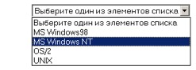

Учебное
пособие к курсу
Web-дизайн и язык HTML
Издание третье
Мещанинов Н.А.
Москва 201705
Мещанинов Николай Андреевич «Web-дизайн и язык HTML». Учебное пособие к курсу, © «Физтехшкола», 2005 г. Редактор Воробьев А.В. Использовано пособие: Ерцев А. В. «Web-дизайн и язык HTML», © «Физтехшкола», 2003 г.
Данное пособие основывается
на курсе лекций по курсу «Web-дизайн и язык HTML», читаемом в Физтех-Колледже с
2002 года. Оказывается, можно создавать собственные Web-страницы,
воспользовавшись любой компьютерной системой, поскольку язык HTML работает
абсолютно одинаково на любой из ныне существующих компьютерных платформ. Но и
это еще не все: для того чтобы создавать собственные Web-страницы, не нужно
приобретать специальное программное обеспечение. Для этого достаточно
воспользоваться любым текстовым редактором (например, программой «Блокнот»,
любезно предоставленной операционной системой Windows).
Материал этого методического пособия рассчитан на
пользователей, которые знакомы с основами компьютерной грамотности. Они должны
уметь работать с текстовым редактором, иметь общее представление о файловой
системе компьютера (файлы и папки) и некоторый опыт работы с Web-браузером.
В этом методическом пособии последовательно, глава за
главой, рассматриваются основные и дополнительные возможности языка HTML.
Теоретический материал сопровождается примерами и рисунками. Благодаря этому Вы
сможете не только попрактиковаться в программировании, но и увидеть результат
выполнения HTML-кода. Знаний, полученных после завершения курса, достаточно для
того, чтобы создавать собственные Web-страницы.
Оглавление
Семинар 1
Знакомство с WWW и HTML
Какие возможности предоставляет WWW пользователю?
Назначение доменов первого уровня
Кто есть кто в мире создания сайтов
Семинар 2
Форматирование текста
Создание отступов от границ страницы
Заголовки HTML. Тэги <H1>,<H2>,<H3>,<H4>,<H5> и <H6>
Выравнивание по центру. Тэг <CENTER>
Тэги структурированного текста
Кавычки. Тэги <BLOCKQUOTE> и <Q>
Верхние и нижние индексы. Тэги <SUB> и
<SUP>
Семинар 3 Списки
и гиперссылки
Ссылки на адрес электронной почты
Ссылки относительные и абсолютные
Семинар 4
Добавление изображений
Типы изображений, используемые в Internet
Добавление изображения на страницу. Тэг <IMG>
Использование рисунков в качестве ссылок
Негласные правила
использования изображений
Использование карт
изображений
Семинар 5
Контрольная работа №1
Размер рамки таблицы.
Атрибут border
Расстояние между ячейками.
Атрибут cellspacing
Расстояние между границей
ячейки и ее содержимым. Атрибут cellpadding
Задание размеров таблицы.
Атрибуты width и height
Задание ширины ячеек.
Атрибуты width и height ячейки
Выравнивание таблицы.
Атрибут align
Выравнивание содержимого
ячеек и строк
Задание заднего фона таблиц,
рядов и ячеек. Атрибут bgcolor
Объединение строк и колонок.
Атрибуты rowspan и colspan
Семинар 7 Таблицы
(продолжение)
Видимость границ таблицы и
ячеек
Семинар 8
Мультимедиа и фреймы
Плавающие фреймы. Тэг
<IFRAME>
Проектирование форм. Тэг
<FORM>
Текстовые области. Тэг <TEXTAREA>
Поле со списком. Тэги <SELECT> и <OPTION>
Семинар 10 Таблицы
стилей – CSS файлы
Ловкость рук и никакого мошенничества!
Семинар 12
Введение в JavaScript
Размещение JavaScript на HTML-странице
Браузеры без поддержки JavaScript
Упреждающая загрузка изображения
Изменение изображений в связи с событиями
Семинар 13 Контрольная
работа №2
Изменения стиля через Script-язык
Изменение стилей различных объектов
Динамическое изменение класса объектов
Предисловие
В современном мире стало привычным понятие Интернет. Многие создают там личную страничку. Однако не про каждую такую личную страницу можно сказать, что она сделана качественно и производит хорошее впечатление. Но ведь от этого многое зависит! Поиск новых друзей, новой работы или места учебы значительно упростится, если человек сможет продемонстрировать добротную Internet-страницу. «Человека встречают по web-страничке» - теперь так можно перефразировать начало известной пословицы.
Создание гипертекстовых страничек – своего рода искусство, но искусство, доступное почти каждому. Вы научитесь делать страницы, удовлетворяющие современным требованиям к оформлению, а учитывая опыт, которым делятся авторы пособия на протяжении 14 семинаров, вы не будете совершать многих ошибок, которые присущи новичкам, самостоятельно осваивающим HTML.
После изучения графического пакета Adobe Photoshop ваши возможности будут ограничены только вашим свободным временем и фантазией, а, освоив элементы DHTML, кое-что вы сможете сделать даже и без этой программы.
Кроме того, вы научитесь азам языка JavaScript, который позволит вам создавать динамическое меню на вашем сайте, и оно будет реагировать на такие действия, как перемещение курсора мыши.
Данное пособие содержит большое количество примеров с ответами, что в значительной степени облегчит освоение курса. В конце каждого семинара собраны задания, выполнение которых будет полезным для будущего web-мастера, так как они содержат много элементов, часто используемых на практике.
Мещанинов Николай
Преподаватель информатики, Физтех-Колледж
Семинар 1
Знакомство с WWW и HTML
Создавать HTML страницы просто. После изучения этого пособия Ваших знаний хватит уже для создания красивых и профессионально сделанных страниц. Но мастерство приходит не сразу. Для того чтобы продемонстрировать простоту создания HTML страницы, давайте попробуем сейчас, ничего еще не зная о структуре гипертекстовых документов, создать простенькую страничку, а в дальнейшем рассмотрим те элементы, которые нам потребовались для этого.
Итак, запустите программу «блокнот», для чего выполните следующие операции: нажмите на кнопку «Пуск» и выберите меню «Выполнить…». В появившемся поле ввода введите строчку: notepad и нажмите на кнопку OK. Теперь все готово для ввода так называемого HTML кода. Этот код при просмотре определенными программами будет отображаться как Web-страничка.
В блокноте наберите следующий код:
<HTML> <HEAD><TITLE>Первая страничка</TITLE>
</HEAD> <BODY><FONT COLOR=”blue”><H1>Первая страница</H1></FONT>
<HR>
Здесь можно писать все, что угодно!</BODY></HTML>
Для того чтобы увидеть то, как выглядит документ, сохраните этот код в файле с расширением html на Рабочем Столе. Выберите в меню «Файл» пункт «Сохранить». В текстовом поле «Имя Файла» появившегося диалога укажите имя файла (на английском языке) с расширением html, а в списке «Тип Файла» выберите «Все Файлы». Сохраненный файл откройте двойным нажатием левой клавиши мыши по значку документа.
Если все было сделано правильно, то страница должна выглядеть следующим образом.
Рисунок
1.1. Так выглядит наша первая страничка в Internet Explorer
Ниже мы расскажем о том, как же работает Internet, как работают его серверы и обсудим некоторые другие интересные вопросы, которые хоть и не имеют прямого отношения к HTML, но знать их все равно нужно.
Что такое World Wide Web?
В течение последних лет предпринималось немало попыток разработать основные правила универсальной информационной базы данных, чтобы можно было бы не только получать информацию из любой точки земного шара, но и иметь удобный способ связи нескольких пользователей друг с другом. В 60-е годы исследования в этой области породили понятие "информационной Вселенной" (docuverse = documentation + universe), которая преобразила бы всю информационную деятельность, в частности в области образования. Но только в настоящее время появилась технология, воплотившая эту идею и предоставляющая возможности ее реализации в масштабах планеты.
Проект World Wide Web возник в начале 1989 года в Европейской Лаборатории физики элементарных частиц (European Laboratory for Particle Physics (CERN) in Geneva, Switzerland). Основное назначение проекта – предоставить пользователям-непрофессионалам "on-line" доступ к информационным ресурсам. Результатом проекта World Wide Web (WWW, W3) является предоставление пользователям сетевых компьютеров достаточно простого доступа к самой разнообразной информации. Идея заключается в том, что по всему миру хаотично разбросано большое количество информационных серверов, и любую машину, подключенную к Интернет в режиме on-line, можно преобразовать в сервер. С любого компьютера, подключенного к Интернет, можно свободно установить сетевое соединение с таким сервером и получить от него информацию.
WWW — это аббревиатура от трех слов "World Wide Web" ("Всемирная паутина").
WWW-технология является самым популярным и наиболее бурно развивающимся сервисом Интернет. Первый сервер был организован в CERN'е, там же с целью развития и поддержки стандартов WWW технологий создан The World Wide Web Consortium (или W3C)[1]. Позднее к проекту подключились и многие другие организации.
Какие возможности предоставляет WWW пользователю?
Информационный WWW сервер использует гипертекстовую технологию. Для записи документов в гипертексте используется специальный язык HTML (Hypertext Markup Language), который позволяет управлять шрифтами, отступами, вставлять цветные иллюстрации, поддерживает вывод звука и анимации. В стандарт языка также входит поддержка математических формул. Для удобства ввода информации предусмотрены специальные формы, меню. Программы просмотра позволяют получать доступ не только к WWW серверам, но и к другим службам Интернет.
Для того чтобы увидеть HTML-код любой страницы, достаточно загрузить ее и открыть ее код. Например, в Microsoft Internet Explorer это можно осуществить следующим образом: в меню «Вид» выбрать пункт «Просмотр HTML-кода».
Упражнение. Откройте из папки «F:\Пособия\HTML\Семинар 1\» какой-нибудь файл с расширением HTML и посмотрите его HTML-код. Попытайтесь найти те элементы, которые мы использовали для создания первой странички (<HTML>, <BODY>, <TITLE>).
Рисунок 1.2 – Таким образом можно просмотреть HTML-код любой
странички
Вся польза WWW состоит в создании гипертекстовых документов, и если Вас заинтересовал какой либо пункт в таком документе, то достаточно "кликнуть" на него курсором для получения нужной информации. Также в одном документе можно делать ссылки на другие, написанные другими авторами или даже расположенные на другом сервере документы. В WWW можно увидеть на одной странице одновременно текст и изображение, звук и анимацию.
WWW работает по принципу «клиент-сервер», точнее, «клиент-серверы»: существует множество серверов, которые по запросу клиента отсылают ему гипертекстовый документ, то есть документ, в котором каждый элемент может являться ссылкой на другой документ или его часть. Ссылки эти в документах WWW организованы таким образом, что каждый информационный ресурс в глобальной сети Интернет однозначно адресуется, и документ, который Вы читаете в данный момент, способен ссылаться как на другие документы на этом же сервере, так и на документы (и вообще на ресурсы Интернет) на других компьютерах Интернет. Причем пользователь не замечает этого и работает со всем информационным пространством Интернет как с единым целым. Ссылки WWW указывают не только на документы, специфичные для самой WWW, но и на прочие сервисы и информационные ресурсы Интернет.
Назначение доменов первого уровня
Каждая страница, или каждый документ, в Сети имеют свои имя и путь, однозначно определяющие его местоположение. Совокупность пути и имени обычно называют адресом. Вот некоторые примеры адресов:
http://pctuner.ru/list-c-view.html – по этому адресу располагается HTML-страничка.
http://img.yandex.ru/i/logo-big-txt.gif – а по этому адресу располагается картинка – логотип поискового сервера Яndex.
Как видно из примера, адрес имеет не только сама страничка, но и картинки, которые она содержит. Как мы потом убедимся, это не случайно. В отличие, например, от документов Word, страница HTML не содержит, как правило, картинок, в ней находится только информация, по какому адресу находится картинка, каким образом она должна быть вставлена (например, она может обрамляться).
Давайте внимательно посмотрим на адрес. Он начинается со следующих букв: http. Эти буквы являются сокращением от Hyper Text Transfer Protocol – протокол передачи гипертекста. Нетрудно догадаться, что протоколов бывает несколько. Поэтому, чтобы программа могла определить с каким протоколом ей работать, его аббревиатуру указывают перед следующей комбинацией символов: «://». Далее, в пространстве до следующей косой черты, находятся имена доменов. Доменов может быть несколько. В нашем первом примере их два: первый домен – это ru, а второй – pctuner. Чтобы имя одного домена не сливалось с другими, их отделяют символом «.» (точка). Местоположение имени домена определяет его уровень. Так, домен ru является доменом первого уровня. Это так называемый национальный домен, определяющий, в некотором смысле, тематику содержимого и язык, на котором будет оно излагаться. Завести себе новый домен первого уровня практически невозможно. Легче основать новую страну, тогда для нее выделят новый домен автоматически. Приведем еще некоторые примеры национальных доменов в Таблице 1.1
Таблица 1.1. Примеры национальных доменов
|
Домен |
Страна |
|
CH |
Швейцария |
|
BY |
Республика Беларусь |
|
GT |
Гватемала |
|
LU |
Люксембург |
Кроме национальных доменов первого уровня, существуют тематические домены, определяющие характер находящейся в их зоне информации или их владельца. В следующей таблице приведем неполный список таких доменов.
Таблица 1.2. Другие примеры доменов первого уровня
|
Домен |
Расшифровка |
Примеры |
|
Com |
Коммерческая зона |
|
|
Org |
Зона некоммерческих организаций |
|
|
Net |
Зона организаций, занимающихся поддержкой сети. Общесетевые ресурсы. |
|
|
Edu |
Образовательные учреждения |
|
|
Gov |
Правительственные учреждения |
|
|
Biz |
Деловая информация |
|
|
Info |
Информационные ресурсы |
|
|
Name |
Личные странички |
Для доступа к WWW, т.е. для просмотра гипертекстовых страниц, вам необходимо запустить специальную программу – браузер.
Браузер (от английского слова browser – обозреватель) – программа, которая предназначена для просмотра гипертекстовых документов. Эта программа считывает HTML-код и представляет его в том виде, в котором мы привыкли видеть Internet-страницы: с рисунками, с различными шрифтами и т.д. Наиболее популярными браузерами являются Microsoft Internet Explorer, Netscape Communicator, Mozilla FireFox, Opera).
Браузер может связываться с различными серверами и принимать от них информацию. Кроме доступа к WWW-серверу, развитые программы поддерживают протокол передачи файлов FTP, протокол обмена новостями gopher, telnet, имеют оболочку для организации работы с электронной почтой (e-mail)[2]. Список методов доступа постоянно растет. Также на многих WWW-серверах имеется возможность доступа к различным базам данных. Браузеры MS Internet Explorer и Netscape Communicator наиболее полно поддерживают стандарт языка HTML. Конкурентная борьба между фирмами Microsoft и Netscape Communication привела к тому, что разделила мир WWW на две части. Первая – это страницы, рассчитанные на просмотр в первую очередь с помощью просмотрщика MS Internet Explorer, и вторая – это страницы, рассчитанные на Netscape Navigator. Различия между этими двумя типами страниц не очень значительные, но отсутствие взаимозаменяемости часто вызывает раздражение. В MS Internet Explorer сделано почти все, чтобы показывать страницы, рассчитанные на Netscape Navigator, хотя остались некоторые мелочи типа ссылок внутри таблиц.
Как же информация поступает на компьютер пользователя? Упрощенная схема выглядит следующим образом. После того как пользователь ввел в адресную строку браузера адрес необходимого ему документа, устанавливается соединение с сервером, имя которого находится между «://» и первой одинарной косой чертой. Если это соединение произошло успешно (т.е. имя сервера и всех доменов было введено правильно и указанный сервер находится в рабочем состоянии), то запрашивается нужный документ. Если на сервере документ с таким именем не найден или доступ к этому документу закрыт, то сервер посылает пользователю сообщение об ошибке. Каждая ошибка имеет свой код, например, ошибка «файл не найден» (File not found) имеет код 404. При успешном обнаружении нужного файла сервер посылает содержимое этого файла на компьютер пользователя.
Однако в случае гипертекстовых страниц сервер может не просто посылать содержимое файла, но и сам его генерировать. В качестве пояснения приведем пример. Наверное, Вы уже знакомы с поисковым сервером Яndex? Так вот, представьте себе, что в строке поиска Вы ввели необходимую строку и нажали кнопку «Поиск». Что происходит дальше? Ведь нельзя создать отдельную страницу для любого запроса – ведь никто не знает, какую строку введет пользователь. Поэтому в этом случае применяется несколько другой алгоритм. Серверу посылается не адрес страницы, а та строчка (в общем случае это может быть не только строчка, но и еще какие-то параметры), которую ввел пользователь. Сервер при помощи специального программного обеспечения начинает обрабатывать эту строку и посылает на компьютер пользователя результат такой обработки. В Яndex схема обработки выглядит следующим образом. Сервер принимает строку, написанную пользователем в поле ввода, начинает искать эту строчку (или похожую) в своей базе данных проиндексированной информации и «запоминает» найденные ресурсы. В дальнейшем генерируется (опять при помощи HTML) страница результатов, на которой находятся ссылки на найденные ресурсы в Интернет, а также выводится некоторая статистика: сколько найдено страниц, сколько было соответствующих запросов.
Страницы, получаемые таким образом, называют динамически генерируемыми, в отличие от статических, которым соответствует фиксированный файл на сервере.
Рисунок 1.3. Пример динамически генерируемой страницы.
Прежде чем приступить к основам языка HTML, давайте выясним, где же он применяется.
Язык гипертекстовой разметки (HTML) применяется не только для создания страниц, размещаемых в Сети. Он нашел применение и в других областях. Обладая достаточной гибкостью и возможностью использования скриптовых языков (в основном JavaScript и Visual Basic Script), HTML стал использоваться для создания современных справочных систем. Если раньше справочная информация находилась в файле, имеющем расширение HLP, и представляла собой переработанный определенным образом файл RTF, то сейчас, особенно в продуктах Microsoft, файлы справки имеют расширение CHM и представляют собой откомпилированные HTML-файлы. При этом все картинки могут быть заключены «внутри» такого файла.
Кроме того, очень часто требуется программно (т.е. автоматически) генерировать некоторые отчеты или выводить большие объемы данных, которые впоследствии требуется представлять в удобном виде. Если использовать для этого языки программирования высокого уровня (такие как C/C++, Visual Basic, Delphi Pascal и т.д.), то уйдет немало времени, прежде чем программист напишет средство удобного просмотра, позволяющее отображать большое количество рисунков, таблиц, выровненного текста. Поэтому, зная язык HTML, можно заставить программу выводить результат не просто в виде массива данных, а в виде документа HTML. В дальнейшем программисту не нужно будет заботиться о средстве просмотра, так как оно уже есть – это обычный браузер!
Кто есть кто в мире создания сайтов
Развитие WWW породило появление новых профессий. Рассмотрим некоторые из них и выясним, к освоению какой профессии мы приблизимся после завершения обучения в рамках этого курса. Наиболее распространенными специальностями являются Веб-мастер, Веб-дизайнер, Веб-программист, Контент-менеджер.
Веб-дизайнер
Люди этой профессии в основном заняты графическим оформлением страниц, созданием графических файлов. В их ведении также находится и все остальное оформление: шрифты, цвета, используемые на странице. В принципе, для успешного выполнения своих обязанностей веб-дизайнерам знать язык HTML не обязательно. Они должны уметь оптимизировать изображения для сети, учитывать специфику аудитории и средств просмотра. Основными инструментами веб-дизайнера являются графические пакеты, такие, как Adobe Photoshop, Adobe ImageReady, Macromedia Flash, Adobe Illustrator, Corel Draw.
Веб-программист
Разрабатывает различные участки кода, используя для этого скриптовые языки (Java Script, Visual Basic Script, Action Script) или интерпретируемые языки (Perl, Java и др.), а также и «обычные» компилируемые (С/C++, Visual Basic и др.). При этом назначение программ, написанных таким образом, может быть самым различным: от простенького счетчика посещений до сложнейших систем дистанционной обработки информации, включая работу с большими базами данных. Зачастую результаты работы скриптов или программ удобно выводить в качестве гипертекста, поэтому почти все веб-программисты знают HTML.
Веб-мастер
Круг задач, выполняемых людьми данной специальности, может быть очень широк. Веб-мастер – это человек, занимающийся созданием сайта целиком, т.е. он разрабатывает концепцию сайта, его интерфейса (внешнего вида и способа взаимодействия с пользователем) и всех необходимых программ и скриптов. Однако в обязанности веб-мастера может входить лишь воплощение разработанной веб-дизайнером концепции и подключение (или использование) программ, написанных веб-программистом, т.е. создания разметки страницы при помощи языка HTML.
Контент-менеджер
Следит за информационным наполнением, или, иначе говоря, за содержимым страницы. Он решает, какую информацию следует поместить на страницу для достижения того или иного результата. Контент-менеджер может даже понятия не иметь о языке HTML, а размещать информацию посредством специальных форм, в которые вводится текст, а программа, разработанная веб-программистом, автоматически применит к нему оформление, которое создал веб-дизайнер. Однако все-таки желательно, чтобы контент-менеджер был в состоянии вносить изменения в исходный текст страницы самостоятельно, без помощи веб-мастера.
Прежде всего давайте разберемся в том, что же представляет собой страница из сети Интернет, или что такое HTML-документ. Как мы уже убедились, это обычный текстовый файл, который можно редактировать при помощи любого текстового редактора, такого, как Блокнот (Notepad) или WordPad, а если используется операционная система Linux, то применяется, например, редактор Kate. Но открывать файл для просмотра необходимо не текстовым редактором, а браузером, поскольку текстовый редактор покажет «всю подноготную» документа, которую мы и собираемся учиться создавать.
Для того чтобы такого рода текстовый документ отображался браузерами корректно, он должен иметь строго определенную структуру и подчиняться определенным правилам. Поэтому говорят, что используется язык разметки, а поскольку языков разметки было создано достаточно много (например, LaTeX или RTF), то уточняют: язык гипертекстовой разметки, или – на английском языке – hyper text markup language (HTML). HTML не является языком программирования, т.к. не обладает необходимым для таких языков свойством, называемым полнотой по Тьюрингу. HTML – это язык разметки. Так, все стили оформления и все элементы, которые могут содержаться на странице, должны быть описаны при помощи специальных служебных слов, которые называются тэгами (от английского TAG). Для того чтобы тэги отличались от обычного текста, который мы хотим отобразить на странице, было решено заключать их в угловые скобки (найдите в тексте нашей первой страницы такие слова). Так, например, есть тэг, отвечающий за вставку изображений на страницу, он называется <IMG>, в HTML-документе он будет выглядеть <IMG>. Как правильно использовать этот тэг, мы рассмотрим на следующих семинарах.
Давайте задумаемся еще над следующим вопросом. Если со вставкой изображения все более или менее понятно – оно появляется в том месте гипертекста, где встретился соответствующий тэг, то как же быть, например, с таким эффектом оформления, как полужирное начертание текста? Ведь необходимо указывать не только начало полужирного выделения, но и конец. Так, если необходимо выделить слово полужирным шрифтом в редакторе Word, мы выделяем это слово и применяем соответствующий стиль. Следовательно, необходим тэг, указывающий на прекращение действия того или иного тэга (ведь не обязательно полужирным будет являться текст на всей странице), поэтому решено было ввести так называемые парные тэги, которые имеют следующий вид:
<ИМЯ_ТЭГА параметр1=значение1 параметр2=значение2…>Объект</ИМЯ_ТЭГА>
Где
ИМЯ_ТЭГА – это как раз название некоторого тэга, которое всегда дается английскими буквами;
Параметр1, параметр2 – это параметры тэга. Многие свойства объектов можно изменять, например, можно добавлять рамочку различного цвета. Параметр определяет имя некоторого свойства (например, толщина рамки), а после знака равенства записывается его значение.
Объект –
это любой
фрагмент HTML-кода,
к которому может быть применен тот или иной тэг. Это может быть текст, таблица
и т.д.
Приведем примеры парных и непарных тэгов и тэгов,
содержащих параметры.
Таблица
1.3. Примеры тэгов
|
Код HTML |
Результат |
|
Некоторый
<b>текст</b> |
Некоторый
текст |
|
Раздел 1
<br> Пункт 1 |
Раздел
1 Пункт
1 |
|
<img src=”arrow.gif” border=”0”> |
|
Вы, наверное, заметили, что в парных тэгах второй
(закрывающий) тэг указывается точно так, как и открывающий, но только перед его
именем ставится косая черта «/» и параметры заново не указываются. Т.е.
следующий пример является примером неправильного использования парных тэгов:
<font color=”red”>Внимание!</font color=”red”>
Правильным
будет являться следующий код:
<font color=”red”>Внимание</font>
Обратите
внимание на то, что регистр при написании имени тэгов не важен, т.е.
корректными будут обе строчки кода:
<FONT COLOR=”RED”>…</FONT>
<font CoLoR=”RED”>..</FoNt>
Однако правила хорошего тона требуют от создателя страницы, чтобы он придерживался какого-нибудь одного стиля оформления исходного текста. Т.е. если он начал оформлять страницу, используя верхний регистр, то желательно, чтобы все тэги страницы были набраны верхним регистром.
Очень важным свойством тэгов является возможность их комбинации. И это естественно, иначе бы создание некоторых эффектов было бы затруднительным. Например, необходимо выделить какое-то слово красным цветом и полужирным начертанием. Используя возможность комбинирования (или возможность вкладывания одного тэга в другой), можно записать
<font color=”red”><b>Слово</b></font>
Т.е. действие тэга <FONT> распространяется на результат действия тэга <B>, в итоге и получается красный полужирный шрифт. Советуют размещать закрывающие тэги согласно порядку их появления. Иными словами, тэги должны вкладываться друг в друга, то есть следующий участок кода недопустим:
<b><font color=”red”> Слово</b></font>
Обязательно ли использовать кавычки в значениях параметров? Кавычки можно опускать, если значение параметра:
ü содержит только английские буквы, цифры, точки и тире;
ü начинается с буквы.
Как уже было сказано, гипертекстовый документ должен иметь определенную структуру, которую графически можно представить следующим образом:
Рисунок 1.4. Структура гипертекстового документа
На языке HTML эта структура будет выглядеть следующим образом:
|
<!DOCTYPE
HTML PUBLIC "-//W3C//… |
Версия
HTML |
|
<HTML> |
Документ HTML |
|
<HEAD> |
Заголовок документа |
|
<TITLE> |
Внешний заголовок (заглавие) |
|
</TITLE> |
|
|
</HEAD> |
|
|
<BODY> |
Тело документа |
|
|
Основной код |
|
</BODY> |
|
|
</HTML> |
|
Каждый HTML-документ, отвечающий спецификации HTML какой-либо версии, обязан начинаться со строки декларации версии HTML, которая обычно выглядит так:
<!DOCTYPE HTML PUBLIC "-//W3C//DTD HTML 3.2 Final//RU">[3]
Эта строка поможет браузеру определить, как правильно интерпретировать данный документ. В данном случае мы говорим браузеру, что наш HTML-документ соответствует международной спецификации версии 3.2, которая хоть и не отличается новизной, но в отличие от более поздних версий является полноценным, широко распространенным стандартом без каких-либо неопределенностей. Как видно из примера, самый короткий HTML-документ состоит буквально из одной строки. Объявление типа документа указывает определение типа документа (DTD — Document Туре Definution), используемое в этом документе. Спецификация HTML 4.0 определяет три DTD, так что авторы должны включать в свои документы одно из следующих объявлений типов. Разница между DTD заключается в поддерживаемых ими тэгах.
1. HTML 4.0 Strict DTD – Строгое определение. Включает все тэги и атрибуты, не являющиеся нежелательными и не использующиеся в документах с кадрами. Для документов, использующих это DTD, используйте такое объявление типа документа:
<!DOCTYPE HTML PUBLIC "-//W3C//DTD HTML
4.0//EN"
"http://WWW.w3.org
/TR/REC-html40/strict.dtd">
2. HTML 4.0 Transitional DTD – Переходное определение. Включает
все, что включено в строгое DTD, а также нежелательные тэги и атрибуты
(большинство из которых относится к визуальному представлению). Для документов,
использующих это DTD, используйте такое объявление типа документа:
<!DOCTYPE
HTML PUBLIC "-//W3C//DTD HTML 4.0 Transitional//EN" "http://WWW.w3.org
/TR/REC-html40/loose.dtd">
3.
HTML
4.0 Frameset DTD – Определение для кадров. Включает
все, что включено в переходное DTD, а также кадры. Для документов, использующих
это DTD, используйте такое объявление типа:
<!DOCTYPE HTML
PUBLIC "-//W3C//DTD HTML 4.0 Frameset//EN""http://WWW.w3.org/TR/REC-tml40/
frameset.dtd">
После информации о версии HTML идет самый первый тэг: <HTML>. Собственно, это парный тэг, внутри которого будет находиться вся страница целиком со всеми тэгами, которые там появятся.
Заголовок Web-страницы содержит некоторую информацию о самом документе (например, его ключевые слова или имя автора, создавшего этот документ), а иногда также правила, по которым следует обрабатывать составляющий страницу код. Необходимо отметить, что содержимое заголовка не отображается в браузере и не влияет на внешний вид документа: это, если можно так выразиться, служебная информация, которая необходима прежде всего самому браузеру. Синтаксис тэга заголовка в общем виде выглядит так:
<HEAD>
Содержимое </HEAD>
Из приведенной схемы видно, что раздел <HEAD> следует в HTML-документе непосредственно за тэгом <HTML> и является вторым обязательным тэгом, который необходимо включать в код Web-страницы.
Перейдем к следующему объекту HTML-документа – разделу «Внешний заголовок», который, как показано на схеме, является вложенным в тэг <HEAD>. Синтаксис внешнего заголовка записывается следующим образом:
<ТITLE>Внешний
заголовок</TITLE>
Чем же «внешний заголовок» отличается от просто «заголовка» документа HTML? Все очень просто: именно он отображается в верхнем поле браузера в качестве названия страницы при ее открытии, и именно значение тэга <TITLE> подставляется по умолчанию в соответствующее диалоговое окно, когда пользователь заносит документ в папку «избранное». Непонятно? Взгляните на рис. 1.5.
Рисунок.
1.5. Значение тэга <TITLE>
Теперь мы уверены, что все неясности ликвидированы. Последняя структурная составляющая кода Web-страницы – раздел «Тело документа».
Тэг <BODY>
Тело документа, описываемое тэгами <BODY> </BODY>, включает в себя весь основной код разметки страницы, который и определяет отображение HTML-документа на экране монитора. Основной текст, иллюстрации, элементы навигации и все, что вы хотите продемонстрировать посетителям вашего сайта, размещается внутри данного тэга.
Упражнение (создание первой странички). Откройте программу Блокнот (или какой-нибудь другой текстовый редактор) и напишите следующие, уже знакомые Вам строчки текста. Желательно соблюдать отступы от левого края – так легче будет ориентироваться в исходном коде. Отступы можно добавлять при помощи клавиши Tab.
<!DOCTYPE HTML PUBLIC
"-//W3C//DTD HTML
4.0 Transitional//EN"
"http://WWW.w3.org
/TR/REC-html40/loose.dtd">
<HTML>
<HEAD>
<TITLE>Моя первая страничка</TITLE>
</HEAD>
<BODY>
</BODY>
</HTML>
Сохраните документ и обязательно
дайте ему английское имя и расширение .html.
Если вы укажите другое расширение, то в зависимости от типа браузера страница
может отобразиться впоследствии некорректно. Откройте вновь созданный файл и
посмотрите на результат. Вы обнаружите, что поле браузера абсолютно пусто. Только
в заголовке окна будет присутствовать надпись: «Моя первая страничка». Но это правильно,
ведь мы пока никакого содержимого на нашу страницу не добавили, поэтому оно и
не отобразилось.
Давайте вспомним, в какой секции
нашего кода мы должны вносить изменения, чтобы добавить на нашу страницу новое
содержание? Если Вы внимательно читали предыдущие разделы, то наверняка
сообразите, что изменения нужно вносить в раздел BODY.
Давайте модифицируем код из предыдущего упражнения, добавив текст между тэгами <BODY>
и </BODY>
<!DOCTYPE HTML PUBLIC
"-//W3C//DTD HTML 4.0 Transitional//EN" "http://WWW.w3.org
/TR/REC-html40/loose.dtd">
<HTML>
<HEAD>
<TITLE>Моя первая страничка</TITLE>
</HEAD>
<BODY>
Наполняем
содержимое нашей странички.
Это
вторая строчка нашей страницы.
</BODY>
</HTML>
Если Вы все сделали правильно, в
окне браузера должно появиться что-то очень похожее на то, что изображено на
рисунке ниже.
Рисунок
1.6. Первая страница
Как же так? Мы набирали две
строчки, а они отобразились как одна! Ошибка разработчиков браузера? Нет. На
самом деле переход на новую строчку, к которому мы привыкли, т.е.
осуществляемый при помощи клавиши Enter,
браузерами игнорируется так же, как и большое количество пробелов (больше одного).
Попробуйте увеличить количество пробелов между словами, вновь сохраните
документ и нажмите на кнопку Refresh
(обновить) на панели инструментов браузера (обычно за это отвечает клавиша F5). Вы
увидите, что результат не изменился. Как добавить дополнительные пробелы и
другие спецсимволы, мы узнаем в следующих главах, а сейчас давайте разберемся с
переходом на другую строчку. Он осуществляется при помощи непарного тэга BR, который
ставится в конце строки, после чего необходимо перейти на новую строчку.
Давайте изменим наш пример, чтобы в браузере все теперь выглядело так, как мы и
хотели, т.е. в виде двух строчек.
<!DOCTYPE HTML PUBLIC
"-//W3C//DTD HTML 4.0 Transitional//EN" "http://WWW.w3.org
/TR/REC-html40/loose.dtd">
<HTML>
<HEAD>
<TITLE>Моя первая страничка</TITLE>
</HEAD>
<BODY>
Наполняем
содержимое нашей странички.<BR>
Это
вторая строчка нашей страницы.
</BODY>
</HTML>
Результат должен быть следующий:
Рисунок 1.7. Теперь вторая
строчка выглядит так, как мы и хотели
Задания
1. Создайте гипертекстовый документ,
содержащий четверостишие (любое). При этом постарайтесь воссоздать структуру HTML документа по памяти. Если Вы не
запомнили первую строчку (определяющую версию HTML)
– ничего страшного, с опытом это придет.
2. Представьте, что у Вас есть
сборник Ваших (или чужих) стихов, сохраненный в виде текста. Вы хотите его
опубликовать в Сети, но для этого необходимо его переформатировать. Самое
главное – это добавить тэг <BR>
после каждой строчки. Придумайте способ, позволяющий ускорить эту рутинную
процедуру.
3. Откройте какой-нибудь гипертекстовый
документ из папки F:\Пособия\HTML\Семинар
1\samples\
и попробуйте изменить в них заглавия, заголовки, основной текст.
4. Найдите ошибку в следующих вариантах
HTML кода:
a. файл F:\Пособия\HTML\Семинар
1\err.html
<html>
<head>
<title>Untitled</title>
<body>
<H1>Привет, Мир!</H1>
</body>
</head>
</html>
b. файл F:\Пособия\HTML\Семинар
1\err2.html
<html>
<head>
<title>Страница
с ошибками</title>
</head>
<h1>Содержание</h1>
1. Введение<br>
2. Основная часть<br>
3. Заключение<br>
</html>
c. файл F:\Пособия\HTML\Семинар
1\err3.html
<html>
<head><title>Страница с ошибками</title></head>
<bady>
Основное содержание страницы
заключается тэг <Body><br>
Одако, в некоторых исключительных
случаях его заменяет другой тэг
<bady>
</html>
d. файл F:\Пособия\HTML\Семинар
1\err4.html
<html>
<head>
<title>Страница
с ошибками</title>
</head>
<body>
<font color="#ff00ff"><strong>Заголовок</font></strong>
<body>
</html>
e. файл F:\Пособия\HTML\Семинар 1\err5.html
<html>
<head>
<title>Untitled</title>
</head>
<body>
<a href=C:\Пособия\HTML\Семинар
1\err4.html>Предыдущая страница с ошибками</a>
</body>
</html>
Семинар 2
Форматирование текста
На предыдущем семинаре мы
научились создавать простейшую гипертекстовую страничку, на которой размещался
только текст. Тот же самый результат можно было намного проще создать в
Блокноте или в WordPad.
Давайте теперь попробуем сделать что-то более красивое.
Давайте изменим цвет фона, на котором
будет отображаться наша страница. Фон гипертекстового документа изменится при
помощи параметра BGCOLOR
тэга BODY.
Если нужно сделать его синим, то изменения
в тэге будут выглядеть следующим образом:
<BODY BGCOLOR=”blue”>
Естественно, все остальные тэги
останутся без изменений.
Упражнение.
Попробуйте заменить слово blue на английское название какого-нибудь
другого цвета (например, red,
black,
green,
silver,
olive)
и посмотрите на результат.
Теперь мы столкнулись с проблемой
задания цвета для элементов гипертекстовой страницы. Ведь цветов много, и
названий для всех них не придумаешь.
Известно, что для вывода цветных изображений на экран монитора применяется так называемая палитра RGB (Red, Green, Blue). Согласно данному стандарту, теоретические основы которого были разработаны еще в XIX веке известным ученым-физиком Г. Гельмгольцем, можно получить абсолютно любой желаемый оттенок путем смешения всего лишь трех красок: красной, зеленой и синей. При помощи цветовых меток или цифрового кода Web-мастер имеет возможность использовать в документе HTML любой цвет, который поддается отображению в рамках стандарта RGB.
Разумеется, цветовые нотации, заданные посредством символьных меток, легче запоминаются и интуитивно понятны любому программисту, хотя бы немного знакомому с английским языком. Существует 140 цветов, для которых приняты стандартные символьные метки. Цветов же, которые возможно отобразить посредством цифрового кода, несоизмеримо больше. Более того, далеко не все браузеры способны отображать некоторые цвета, заданные символьной нотацией. Например, Netscape Communicator распознает их значительно больше, нежели Microsoft Internet Explorer.
Для обозначения цвета шестнадцатеричным цифровым кодом принят следующий синтаксис записи: перед самим кодом ставится символ «#», далее следует набор из шести знаков в шестнадцатеричной системе счисления. Этот набор можно разделить на три части по две цифры (или букве) в каждой из частей. Тогда каждая группа будет представлять собой интенсивность каждого из цветов (красный, зеленый или синий). Например, темно-бордовый цвет имеет код #800000. Разбиваем его на группы и получаем вклад каждого из основных цветов: красный:80 (в десятичной системе – 128); зеленый – 00; синий – 00
Несмотря на то, что в распоряжении Web-мастера имеется более ста цветовых меток, на практике активно используется лишь шестнадцать из них. Именно эти цвета были приняты в качестве стандарта для шестнадцатицветовой палитры VGA. Обозначение данных цветов приведено в таблице 2.1.
Как можно узнать шестнадцатеричный код цвета? Такая необходимость может возникнуть в том случае, если цвет был выбран из палитры по принципу «какой цвет больше глазу приятен». В этом случае могут прийти на помощь современные графические пакеты, которые в своих палитрах, как правило, отображают код выбранного цвета. Приведем в качестве примера палитру Adobe Photoshop.
Рисунок
1.8. Определение шестнадцатеричного кода произвольного цвета в Adobe Photoshop
Таблица
2.1. Стандартные цвета
|
Цвет |
Значение RGB |
Символьная
метка |
Цифровой код |
|
Белый |
255 255 255 |
White |
#FFFFFF |
|
Черный |
0 0 0 |
Black |
#000000 |
|
Зеленый |
0 128 0 |
Green |
#008000 |
|
Светло-зеленый |
0 255 0 |
Lime |
#00FF00 |
|
Серый |
128 128 128 |
Gray |
#808080 |
|
Светло-серый |
192 192 192 |
Silver |
#C0C0C0 |
|
Желтый |
255 255 0 |
Yellow |
#FFFF00 |
|
Темно-бордовый |
128 0 0 |
Maroon |
#800000 |
|
Синий |
0 0 255 |
Blue |
#0000FF |
|
Темно-синий |
0 0 128 |
Navy |
#000080 |
|
Голубой |
0 255 255 |
Aqua |
#00FFFF |
|
Изумрудный |
0 128 128 |
Teal |
#008080 |
|
Красный |
255 0 0 |
Red |
#FF0000 |
|
Пурпурный |
128 0 128 |
Purple |
#800080 |
|
Розовый |
255 0 255 |
Fuchsia |
#FF00FF |
|
Оливковый |
128 128 0 |
Olive |
#808000 |
Теперь появилась возможность изменять цвет фона страницы произвольным образом. Но точно также можно изменять и цвет текста. Для этого необходимо изменить другой параметр тэга BODY, а именно – TEXT.
Так
для того, чтобы на странице появился синий текст на белом фоне, тэг BODY будет
выглядеть следующим образом:
<BODY BGCOLOR=”white” TEXT=”blue”>
Если необходимо использовать какой-то нестандартный цвет, т.е. для которого нет мнемонического названия, то запись будет иметь следующий вид
<BODY BGCOLOR=”#CCCCCC” TEXT=”#330066”>
Оказывается, менять можно не
только цвет фона, но и его рисунок. Для этого необходимо указать значение
параметра BACKGROUND тэга BODY.
Его значением будет являться путь к графическому файлу, который претендует на
роль фонового изображения.
Пусть имеется некоторое
изображение back.jpg, которое
имеет следующий локальный адрес: F:\Пособия\HTML\Семинар
2\back.jpg. Тогда, для
того чтобы использовать эту картинку в качестве фона, тэг BODY запишется в следующем виде:
<BODY BACKGROUND=”F:\Пособия\HTML\Семинар
2\back.jpg”>
При использовании фоновых рисунков
нужно быть очень осторожными, так как от него зависит эстетическое восприятие
страницы. Фон не должен быть очень ярким или иметь контрастные переходы,
поскольку на нем будет сложно прочитать текст. Кроме того, поскольку фоновым
изображением будет покрываться все окно браузера, то нужно подбирать такие
изображения, которые бы не создавали швов на стыке. На рисунке 2.1 представлен
пример неудачного выбора фонового изображения. На нем не видно текста и видны
стыковочные швы.
Рисунок 2.1. Пример неудачного
выбора фонового изображения
Упражнение.
Как
Вы считаете, играет ли роль параметр BGCOLOR в том случае, если выбрано какое-то
фоновое изображение? Давайте проведем эксперимент. Установите в качестве фона
изображение в формате GIF с участками прозрачности (например,
файл F:\Пособия\HTML\Семинар
2\transp.gif)
и попробуйте, не изменяя фонового изображения, менять цвет фона. Если Вы все
сделаете правильно, то Вы легко ответите на поставленный вопрос.
К изображениям мы вернемся
несколько позднее, а теперь давайте рассмотрим еще одно семейство параметров
тэга BODY.
Создание отступов от границ страницы
Довольно часто встречаются ситуации, когда необходимо отсутствие границы либо между изображением и краем браузера, либо между браузером и текстом страницы. Этого можно достичь, установив значение величины отступа от края браузера равным нулю. Отступы изменяются при помощи параметров тэга BODY, причем так сложилось, что для браузера MS Internet Explorer названия этих параметров отличаются от тех, которые «понимает» Netscape Communicator. Поэтому приведем таблицу имен параметров для каждого из этих браузеров.
Таблица
2.2. Отступы в различных браузерах
|
Отступ |
Internet Explorer |
Netscape |
|
Слева |
Leftmargin |
Marginwidth |
|
Сверху |
Topmargin |
Marginheight |
|
Справа |
Rightmargin |
- |
|
Снизу |
Bottommargin |
- |
Хотя браузеры Netscape не поддерживают отступы справа и снизу, но параметр MARGINWIDTH изменит отступы как справа, так и слева. Аналогично MARGINHEIGHT устанавливает одинаковый отступ от верхней и от нижней границы. Для того чтобы не привязывать страницу к какому-либо конкретному браузеру, обычно в тэге BODY указывают параметры для обоих типов браузеров. Например, вот так:
<BODY LEFTMARGIN=0 MARGINWIDTH=0 TOPMARGIN=0 MARGINHEIGHT=0>
Замечание. Некоторые новые браузеры умеют поддерживать как один вид параметров, так и другой. Примером может служить бесплатный браузер Mozilla FireFox.
Несмотря на то что современные технологии позволяют передавать через Интернет звук, видео, обеспечивают интерактивное взаимодействие с пользователями Сети, основной формой передачи информации по-прежнему остается текст. Поэтому правильное формирование текстового наполнения сайта оказывает решающее воздействие на эстетическое восприятие и легкость чтения.
Заголовки HTML. Тэги <H1>,<H2>,<H3>,<H4>,<H5> и <H6>
Редактор Microsoft Word помимо обычного и нескольких вспомогательных стилей написания текста позволяет создавать документ с использованием так называемых стилей заголовка. В этом случае заданная пользователем фраза позиционируется на странице относительно ее центра и выводится на экран крупным жирным шрифтом. Более того, в распоряжении оператора имеется несколько различных стилей заголовка, отличающихся в основном вертикальным размером символов.
Аналогия с файлами Microsoft Word приведена здесь не случайно: она поможет вам понять назначение заголовков, применяющихся в документах HTML. Спецификация HTML позволяет программисту использовать шесть различных стилей, или, как их еще принято называть, логических уровней заголовков. Для того чтобы отобразить заголовки на Web-странице, необходимо использовать тэги <Н1>, <H2>, <H3>,<H4>,<H5>,<H6>. Чем больше число после буквы H, тем больше уровень заголовка и тем меньше становится размер шрифта, которым он будет отображаться. Синтаксис записи этой команды в общем виде таков:
<Н1
аlign="параметр">Текст заголовка</Н1>
<Н2
аlign="параметр">Текст заголовка</Н2>
...
<Н6
аlign="параметр">Текст заголовка</Н6>
Параметр align дает возможность Web-мастеру определить расположение заголовка в окне браузера. Параметр этого атрибута может принимать одно из трех возможных значений: right – выравнивание заголовка по правой границе документа; left – левой границе документа; center – по центру документа. По умолчанию заголовки выравниваются по левому краю страницы. Вот пример использования данного тэга:
<Н1
align="center">Дoбpo пожаловать на мою страничку!</Н1>
К сожалению, не существует каких-либо четко сформулированных правил применения заголовков в документах HTML, за исключением одного и вполне очевидного: они должны следовать в порядке приоритета, то есть с 1 по 6, но не наоборот. В принципе, данное правило диктуется не внутренними законами языка разметки гипертекста, а элементарной логикой, его нарушение не вызовет появления ошибок. Не рекомендуется также включать в документы заголовки ниже уровня <Н4>, поскольку они отображаются значительно более мелким шрифтом, нежели основной текст Web-страницы, что затрудняет восприятие информации. Во всех остальных случаях использование данной команды – дело вкуса и эстетических предпочтений автора проекта. Многие люди считают дурным тоном или вовсе ненужным делом использовать у себя заголовки. А зря, поисковые роботы очень охотно индексируют[4] эти тэги.
С точки зрения HTML, для того чтобы создать новый абзац, достаточно ввести нужный текст между тэгами <P> и </P>. Рассмотрим пример:
<HTML>
<HEAD>
<TITLE>пример</TITLE>
</HEAD>
<BODY>
<P>Моя Web-страница
</P>
</BODY>
</HTML>
Для браузера абзац – это тот фрагмент Web-страницы, который находится между тэгами <P> и </P> (тэги абзаца). Если в тексте абзаца (т.е. внутри тэга <P>) будет находиться пустая строчка (как раз в приведенном выше примере такая ситуация реализована), то в браузере она отображаться не будет. Видимый результат тэга <P> заключается в том, что после текста, который находится в его пределах, пустая строка добавляется автоматически.
Следует
помнить и о другой особенности текстовых абзацев: когда текст достигает правой
границы окна браузера, переход на новую строку осуществляется автоматически,
независимо от тэга <P>. Другими словами, текст
абзаца Web-страницы
будет виден даже в том случае, если пользователь уменьшит размеры окна браузера.
Теперь давайте рассмотрим
параметр align тэга
<P>.
Этот атрибут позволяет выравнивать абзац относительно одной из сторон
документа. Значения может принимать
следующие: left
– выравнивание по левому краю (по умолчанию), right
– выравнивание по правому краю, center
– выравнивание по центру и justify
– выравнивание по ширине. Не
понимающие justify
браузеры будут выравнивать текст по левому краю.
<P ALIGN="center">Это
центрированный параграф.<BR>
Текст располагается в центре окна браузера</P>
<P ALIGN="right">А это параграф, выровненный по правому
краю.</P>
Выравнивание по центру. Тэг <CENTER>
Казалось
бы, нет ничего сложного, чтобы установить картинку или текст в центре окна браузера.
Используем тэг <CENTER>, и все становится на то место, куда мы и задумывали.
Однако не все так просто. Существуют три способа выравнивания по центру, каждый
из них имеет свои особенности и отличия в разных браузерах.
Один из самых простых и удобных тэгов — <CENTER> – предназначен для
выравнивания блока текста. С помощью этого тэга также можно центрировать
рисунки и таблицы. Исключение составляют элементы <IMG
align=left ...> или <IMG align=right... > (с тэгом <IMG>
мы познакомимся чуть позже), для которых выравнивание задается свойствами тэга
<IMG>. Так, если поместить элемент внутри тэга CENTER, рисунок окажется
выровненным по правому краю.
<Center>
Данный текст будет выровнен по центру окна браузера, а нижележащий рисунок по
правому краю.
<img src=no.gif width=100 height=100 align=right>
</Center>
Замечание: вместо тэга <CENTER> в последнее время используется следующая конструкция:<DIV align=center>... </DIV>. Рекомендуем и вам использовать ее для выравнивания блоков текста.
<HR>
<DIV align=center>
Выравнивание текста по центру с помощью тэга DIV
</DIV>
<HR>
Использование красной строки с отступом в 2-5 пробелов повышает читаемость текста, позволяя легко отыскивать взглядом начало следующего абзаца. В HTML любое количество пробелов заменяется одним, поэтому для размещения отображаемого пробела стоит использовать другой символ –
Пакуйте как
можно больше текста на одну экранную страничку. Лучше всего уменьшить для этого
шрифт на 2 или 3 единицы. Это обеспечит место элегантной типографии, а также
рабочие места для глазных врачей и продавцов очков.
Следующий способ
также имеет право на существование. Вместо символов пробела надо поставить
невидимый рисунок нужной ширины. В качестве рисунка можно использовать прозрачную
картинку размером 1 на 1 пиксель.
<img src=empty.gif width=20 height=1> Указывайте
точные размеры окна браузера, которые должен установить посетитель. И чем
больше установленные Вами размеры, тем лучше, независимо от того, поддерживает
соответствующий монитор подобное разрешение или нет.
И, наконец, всегда можно воспользоваться стилями (мы с Вами рассмотрим их в последующих главах). Параметр text-indent задает отступ первой строки текста. Отступ можно указывать в пунктах (pt), пикселах (px), дюймах (in), миллиметрах (mm) и др.
<HEAD>
<STYLE type="text/css">
p {text-indent: 20 px}
</STYLE>
</HEAD>
<BODY>
<P>Что было потом? Что было в
последующие годы? Я отложил карандаш. Не имело смысла вспоминать дальше.</P>
</BODY>
Конечно,
использование стилей универсально и менее обременительно. Однако применение
символов является более простым, надежным и независимым от браузера
способом. При использовании в качестве отступа невидимого рисунка есть
опасность, что пользователь отключил загрузку изображений, тогда вместо отступа
будет показываться некрасивая полоса. В конечном счете, какой метод предпочесть
– решать вам.
Для того чтобы визуально отделить часть объектов или текста HTML-документа от других, применяется тэг <HR>. С его помощью можно отобразить в окне браузера горизонтальную черту заданного размера и цвета. В общем виде синтаксис тэга <HR> выглядит следующим образом:
<HR
align="параметр" width="значение" size = "значение"
color="значение">
Параметр align Вам уже знаком, он определяет положение горизонтальной черты на экране и может принимать одно из трех возможных значений: center, left и right (выравнивание черты по центру, левой и правой границам экрана). Параметр width определяет длину линии, причем его значение можно задавать либо в пикселях простым целым числом, либо в процентах от ширины экрана при помощи числа от 1 до 100 с добавлением символа «%», например, width="268" или width="80%". В последнем случае абсолютная длина линии будет меняться в зависимости от установленного пользователем экранного разрешения и размеров браузера. Параметр size, значение которого – простое целое число, задает толщину линии в пикселях. И, наконец, параметр color определяет цвет заливки линии, в качестве его значения указывается либо шестнадцатеричный цифровой код, либо символьная нотация необходимого цвета. Ниже приведен пример записи тэга <HR>:
<HR align="center" width="80%" size="1" color="#0000ff">
Очевидно, что подобно тэгу <BR> тэг <HR> не имеет закрывающего тэга. По умолчанию, то есть в случае записи команды <HR> без указания каких-либо параметров, браузер отобразит двухцветную серо-белую «вогнутую» линию толщиной в три пикселя и длиной во весь экран.
Некоторые символы не входят в
базовую часть таблицы кодов ASCII. К ним относятся буквы алфавитов части
европейских языков, математические и некоторые другие символы. Некоторые
символы, введенные в HTML-документ, будут интерпретироваться не так, как задумал
автор. Это, например, символы "<" и ">", используемые
для указания тэгов. В этих случаях можно вводить нужные символы с помощью специальных
кодов. Коды начинаются с символа "амперсанд"(&). За ним следует
название символа либо его числовой код в десятичной или шестнадцатеричной
системе. Завершает код символ "точка с запятой"(;). В спецификации
HTML указано большое количество спецсимволов, но только некоторые из них
используются. Наиболее часто используемые спецсимволы приведены в таблице:
Таблица 2.3.
Некоторые часто используемые специальные символы
|
имя |
вид |
описание |
|
" |
" |
двойная кавычка |
|
& |
& |
амперсант
|
|
< |
< |
знак 'меньше' |
|
> |
> |
знак 'больше' |
|
|
|
неразрывный пробел |
|
¢ |
¢ |
цент |
|
£ |
£ |
фунт стерлингов |
|
¥ |
¥ |
иена или юань |
|
§ |
§ |
параграф |
|
© |
© |
знак copyright |
|
® |
® |
знак зарегистр. торговой
марки |
|
– |
– |
тире |
|
— |
- |
длинное тире |
|
‘ |
‘ |
левая одиночная кавычка |
|
’ |
’ |
правая одиночная кавычка |
|
‚ |
‚ |
нижняя одиночная кавычка |
|
“ |
“ |
левая двойная кавычка |
|
” |
” |
правая двойная кавычка |
|
„ |
„ |
нижняя двойная кавычка |
Тэги структурированного текста
Для того чтобы сделать текст своей Web-страницы более привлекательным, можно воспользоваться тэгами для структурирования. Самые распространенные тэги приведены в следующей таблице:
Таблица 2.4. Структурирующие тэги
|
тэг |
описание |
|
<EM> |
Выделение |
|
<STRONG> |
Более
сильное выделение |
|
<CITE> |
Содержит
цитату или ссылку на другие ресурсы |
|
<DFN> |
Указывает,
что это является определением вложенного термина |
|
<CODE> |
Фрагмент
компьютерного кода |
|
<SAMP> |
Вывод
примера программ, сценариев и т.д. |
|
<I> |
Курсив |
|
<B> |
Жирный текст |
|
<U> |
Выделяет
текст подчеркнутым |
|
<S>, <STRIKE> |
Выделяет
текст перечеркнутым |
|
<BIG> |
Отображает
текст увеличенным шрифтом (относительно текущего) |
|
<SMALL> |
Отображает
текст уменьшенным шрифтом (относительно текущего) |
|
<TT> |
Отображает
текст моноширинным шрифтом |
|
<SITE> |
Оформляет
текст как цитату или ссылку на источник |
|
<KBD> |
Текст,
который должен ввести пользователь |
|
<VAR> |
Экземпляр
переменной или аргумента программы |
|
<ABBR> |
Сокращенная
форма (например, WWW, HTTP, URI, Mass., и т.д.) |
|
<ACRONYM> |
Акроним
(например, WAC, радар и т.д.) |
Тэги <EM> и <STRONG>
используются для выделения. Другие фразовые тэги имеют определенное значение в
технических документах. В следующих примерах показано использование некоторых
фразовых тэгов:
Подробнее см. <CITE>страницу
22</CITE>.
В дальнейшем используйте следующий
номер:<STRONG>1-234</STRONG>
Обычно браузеры отображают текст тэга <EM> курсивом, а текст тэга <STRONG> полужирным шрифтом. Но это необязательно. Некоторые браузеры могут вести себя по-другому. Вообще говоря, никакой браузер не обязан Web-мастеру показывать жирные или курсивные шрифты. Например, у консольного браузера их нет. Это уже элементы верстки, а HTML предназначен не для верстки, а для логической разметки. <B> и <I> – тэги физического выделения, то есть вы принудительно заставляете выделять текст каким-то видом шрифта. <STRONG> и <EM> – тэги логического выделения. Каждый браузер может по-своему выделить текст внутри этих тэгов, так, как удобно его пользователю. <EM> означает выделение, а <STRONG> означает усиленное выделение. Резюме: Если Вам нужно выделить текст, пользуйтесь <EM>. Если Вам нужно не выделить текст, а сделать его курсивом, пользуйтесь <I>. Хотя в большинстве современных браузеров результат и будет одинаков, но очень часто на основе кода HTML-страницы происходит генерация каких-либо списков, определение связей и т.д. Эти операции производятся автоматически, основываясь на логической разметке. Типичным примером такой операции является создание списка определений и терминов, встречающихся на странице.
Кавычки. Тэги <BLOCKQUOTE> и <Q>
Тэги определяют текст в кавычках. Тэг <BLOCKQUOTE> предназначен для длинных цитат (содержимое уровня блока), а <Q> предназначен для коротких цитат (встроенное содержимое), в которых не нужно разбиение на абзацы.
|
тэг |
описание |
|
<Q>..</Q> |
Короткие цитаты |
|
<BLOCKQUOTE>..</BLOCKQUOTE> |
Длинные цитаты |
Приведем пример. Цитата из книги "Две твердыни" Толкиена отформатирована с помощью тэга <BLOCKQUOTE>.
Цитата из книги "Две
твердыни" Толкиена
<BLOCKQUOTE>
They went in single file, running
like hounds on a strong scent, and an eager light was in their eyes. Nearly due
west the broad swath of the marching Orcs tramped its ugly slot; the sweet
grass of Rohan had been bruised and blackened as they passed.</P>
</BLOCKQUOTE>
В браузере этот участок текста выглядит следующим образом:
Рисунок
2.2. Результат работы тэга BLOCKQUOTE
Верхние и нижние индексы. Тэги <SUB> и <SUP>
Часто для правильного отображения формул, сносок необходимы верхние и нижние индексы (например, в химии). В этих случаях для разметки текста должны использоваться тэги. Приведем пример: необходимо написать формулу воды. Заметим, что формула пишется не Н2О, а Н2О, поэтому мы будем набирать следующий HTML-код.
H<SUB>2</SUB>O
Формула E=mc2 будет записана так:
E =
mc<SUP>2</SUP>
Задания
1.
Создайте страницу (в качестве текста можно использовать
содержимое текстового файла F:\Пособия\HTML\Семинар 2\sample.txt), содержащую два типа заголовков (например, названия глав и
названия параграфов), эпиграф и выровненный по ширине основной текст. Заголовки
должны быть выровнены по центру. Цвет фона установите белый, а цвет шрифта – черный.
2. Создайте свой сборник стихов. Каждое стихотворение отделяйте горизонтальной линией.
3. Создайте страницу, внешний вид которой изображен ниже на рисунке 2.3
4. Напишите с помощью HTML формулу следующего химического соединения: C2H5OH.
5. Создайте (можно переформатировать текст sample.txt) страницу, удовлетворяющую следующим требованиям:
a. Фон страницы – белый без изображения;
b. Первая строка абзаца с отступом;
c. Цвет текста – черный, заголовка – темно-синий;
d. Перед текстом должен быть эпиграф (выбрать самим);
e. Заголовки должны быть выровнены по центру, а текст – по ширине;
f. В конце текста страницы необходимо разместить после горизонтальной черты значок копирайта © и свое имя и дату;
g. Обратите внимание на оформление цитат.
6. Создайте страницу, на которой будет написан исходный текст другой html страницы. Используйте для этого тэг <code>. Тэги выделяйте темно-синим цветом. Для обозначения угловых скобок используйте спецсимволы.
Рисунок
2.3. В HTML можно создавать и такие конструкции
Рисунок 2.4. Собственный
сборник стихов
Семинар 3
Списки и гиперссылки
Проводя параллель с документами MS Word, необходимо сказать еще о двух элементах оформления текстовых файлов, а именно – о нумерованных и маркированных списках. Они были разработаны для отображения упорядоченной информации в виде позиционированных по смыслу пунктов. Вот простой пример организации маркированного списка:
· Пункт
1
· Пункт
2
· Пункт
3
· Пункт
n.
На языке HTML подобный маркированный список можно представить при помощи тэга <UL> следующим образом:
<UL type ="параметр">
<LI>Пункт 1</LI>
<LI>Пункт 2</LI>
<LI>Пункт 3</LI>
<LI>Пункт n</LI>
</UL>
Атрибут type позволяет web-мастеру управлять так называемым «буллет-стилем», то есть внешним видом и формой обозначающих каждый пункт меток. Параметр этого атрибута может принимать одно из трех значений:
disc – метки отображаются в виде заполненных черным цветом окружностей;
circle – метки отображаются в виде полых окружностей;
square – метки отображаются в виде заполненных черным цветом квадратов.
По умолчанию, то есть в случае, когда в маркированном списке тэг <UL> записывается без атрибутов, type = "disc".
Нумерованный список позволяет отображать упорядоченную информацию, которая выводится на экран в виде обозначенного цифрами перечисления, например:
1. Пункт 1
2. Пункт 2
3. Пункт 3
И т. д.
В документе HTML нумерованный список можно представить с использованием тэга <OL>:
<OL type = "параметр"
start = "значение">
<LI>Пункт 1</LI>
<LI>Пункт 2</LI>
<LI>Пункт 3</LI>
</OL>
Атрибут type, так же, как и в случае с маркированным списком, позволяет изменять буллет-стиль, то есть определять вид маркеров, которыми будут обозначаться составляющие список значения. В составе атрибута type тэга <OL> можно использовать один из следующих параметров:
"1" — обычные арабские числа 1, 2, 3 и т. д.;
"I" — римские цифры в заглавном регистре I, II, III, IV и т. д.;
"i" — римские цифры в строчном регистре i, ii, iii и т. д.;
"А" — символьная маркировка в заглавном регистре А, В, С и т. д.;
"а" — символьная маркировка в строчном регистре а, b, с и т. д.;
Атрибут start позволяет задавать позицию, с которой следует начать маркировку. Например, если атрибут TYPE задан как "1", а атрибут START – как "5", то нумерация начнется с цифры 5. Если же TYPE имеет значение "А", а START – "D", то маркировка начнется с символа D.
При использовании атрибута start необходимо внимательно следить, чтобы его значение соответствовало типу маркировки, указанному в атрибуте type. Запись <OL type ="I" start ="A"> не допускается. Наоборот, запись <OL type ="A" start ="I"> вполне допустима.
По умолчанию значение атрибута TYPE принимается как "1", нумерация начинается с первого элемента в каждом из типов маркировки.
Возможно создание так называемых вложенных списков, реализуемых посредством размещения одной пары тэгов в другой, например, команд создания маркированного списка внутри нумерованного. Простая реализация вложенного списка имеет вид:
1. Пункт 1
·
Пункт
1-а
·
Пункт
1-6
2. Пункт 2
·
Пункт
2-а
·
Пункт
2-6
На языке HTML такой список можно представить следующим набором тэгов:
<OL>
<LI>Пункт 1</LI>
<UL>
<LI>Пункт l-a</LI>
<LI>Пункт 1-б<LI>
</UL>
<LI>
Пункт
2</LI>
<UL>
<LI>Пункт 2-a</LI>
<LI>Пункт 2-6</LI>
</UL>
</OL>
Помимо нумерованных и маркированных списков язык разметки гипертекста позволяет создавать списки определений, для чего применяется тэг <DL>. Внешний вид простого списка определений таков:
Заголовок группы пунктов 1
Пункт 1-а
Пункт 1-6
Заголовок группы пунктов 2
Пункт 2-а
Пункт 2-6
В виде кода HTML этот список можно представить следующим образом:
<DL>
<DТ>Заголовок группы пунктов 1
<DD>Пункт 1-а
<DD>Пункт 1-6
<DT>3aголовок группы пунктов 2
<DD>Пункт 2-а
<DD>Пункт 2-6
</DL>
Список определений нужен для расшифровки некоторых понятий. Например, таких, как показано на рисунке 3.1.
Рисунок
3.1. Пример использования списка определений.
Закрывающие тэги для команд <DT> и <DD> списка определений можно опустить. Данные тэги могут использоваться и самостоятельно: <DT> – для отображения терминов, выделяемых в тексте шрифтом, а <DD> – для их расшифровки, помеченной отступом. В этом случае наличие соответствующих закрывающих тэгов обязательно.
Только благодаря ссылкам посетители Вашей Web-страницы в состоянии быстро открыть нужную страницу или мгновенно просмотреть отдельные фрагменты огромного HTML-документа. У каждой Web-страницы, любого Интернет-ресурса, файлов есть собственный адрес. Каждый такой адрес называется универсальным указателем информационного ресурса, или URL (Uniform Resource Location). Для того чтобы подключиться к Интернет-ресурсу или открыть Web-страницу, в окне браузера в поле со списком «Адрес» (Address) необходимо ввести соответствующий URL.
С появлением стандарта XML ставший уже привычным термин URL вытеснен новым термином – универсальный индификатор ресурса, или URI (Uniform Resource Indifier). Более подробно о XML речь пойдет в главе “XML и будущее Интернет”.
Реализовать простую гиперссылку на другую Web-страницу можно путем использования в HTML-документе тэга <А>, синтаксис записи которого в общем виде выглядит следующим образом:
<А
href="URL" target ="параметр" title ="альтернативный
текст"> текст гиперссылки</А>
В приведенном примере атрибут href указывает на адрес страницы, на которую вы хотите сослаться. Этот адрес может быть представлен как в виде полного URL (например, "http://WWW.server.ru/page.html"), если целевой документ физически расположен на другом сервере, так и в виде сокращенного URL с указанием пути к искомой странице в пределах локального сервера (например, "/folder/page.html"). Если искомый документ расположен в одной директории с текущим, то в качестве параметра атрибута href достаточно записать его название, например:
<A href=”page.html”>Следующая страница</A>
Атрибут target определяет имя фрейма (что это такое, мы узнаем позднее), в котором будет загружаться страница, находящаяся по указанному в параметре href адресу.
И, наконец, атрибут title предназначен для создания так называемого альтернативного текста – всплывающей подсказки, появляющейся в небольшом прямоугольнике, если пользователь задержит курсор мыши над гиперссылкой на несколько секунд. Такая подсказка может содержать, например, более подробное описание вызываемого документа.
Следует помнить, что одну гиперссылку нельзя размещать внутри другой.
Иногда возникает необходимость разместить на Web-странице гиперссылку не на другой документ, а на расположенный в пределах этой же страницы раздел или участок текста. При нажатии на подобную гиперссылку браузер «отматывает» экран таким образом, что искомый раздел или фраза оказываются в верхней его части. Процесс создания ссылки на раздел можно условно разделить на два этапа. Первый заключается в подготовке так называемой «закладки» – специальной метки с уникальным в пределах данного документа именем, присваиваемым «закладке» посредством атрибута name. Для этого в том участке текста, где необходимо поместить метку (ее еще называют якорем, от английского слова anchor), применяется следующая конструкция:
<А
name="имя_закладки">ключевое слово или заголовок раздела</А>
Второй этап — создание самой ссылки при помощи такой команды:
<А
href="#имя_закладки">текст ссылки</А>
Помните, что для задания имени «закладки» лучше использовать латинские символы. При вызове раздела посредством гиперссылки перед именем «закладки» нужно написать символ решеточки (его еще называют диезом или шарпом) – «#».
Если вы хотите поместить ссылку на раздел какого-либо другого документа, описанный выше алгоритм в целом сохраняется, за исключением того, что в вызывающем тэге перед именем «закладки» указывается URL документа. Подобная ссылка в обобщенном виде будет выглядеть следующим образом:
<А
href="http://WWW.server.ru/document.html#имя_закладки"
target="_blank">текст
ссылки</А>
Помните, что некоторые браузеры не поддерживают режим «отката» при переходе по гиперссылке внутри документа. Иными словами, обратившись посредством ссылки к какому-либо разделу одной и той же страницы, при нажатии кнопки «НАЗАД» вы попадете не на тот участок документа, который отображался до активизации гиперссылки, а на ту страницу, которая загружалась в браузер последней.
Ссылки на адрес электронной почты
Наверняка в процессе работы во Всемирной сети вы не раз сталкивались с гиперссылками, при активизации которых автоматически запускается установленная на вашем компьютере почтовая программа и на экране формируется уже готовый к отправке бланк электронного письма с заполненным адресным полем и иногда полем Subject. Подобные гиперссылки также можно реализовать с использованием тэга <А>. В виде кода HTML ссылку на адрес электронной почты представляют следующим образом:
<А
href="mailto:user-l@server.ru?subject=тема_письма">текст
ссылки</А>
Давайте рассмотрим все перечисленные выше параметры атрибута HREF более подробно. Строка mailto: указывает на основной адрес электронной почты, куда следует отправлять созданное автоматически письмо. В минимальной записи атрибута HREF при реализации гиперссылки на адрес электронной почты можно указать только это слово и какой-либо адрес e-mail. С помощью параметра Subject можно задать тему отсылаемого сообщения.
Будьте осторожными при публикации своего адреса электронной почты, поскольку существуют специальные программы – спам-роботы, которые собирают по всей Сети адреса электронных ящиков и заносят их в свою базу рассылок, после чего по этим адресам начинается рассылка спама – писем рекламного содержания, которые получать вы совершенно не рассчитывали.
Гиперссылка на файловый объект подразумевает возможность загрузки некоторого файла с сервера путем нажатия на ссылку, расположенную в HTML документе. При нажатии мышью на такой гиперссылке автоматически открывается сессия загрузки данного файла с удаленного сайта на локальный пользовательский компьютер. Синтаксис записи подобной команды выглядит следующим образом:
<А
HREF="http://www.myserver.com/files/archive.ziр">текст
гиперссылки</А>
Иногда для реализации ссылки с файловым объектом в записи URL этого объекта используется префикс "file://", однако такой подход применяется в основном для организации ссылок на файловый объект, расположенный на локальном компьютере. Если загрузку файла планируется осуществлять по протоколу FTP, используйте префикс "ftp://". Если искомый файл расположен в той же директории, что и вызывающий его документ, в качестве значения атрибута href можно просто указать его имя.
Ссылки относительные и абсолютные
Как правило, разработка сайта происходит на локальном компьютере, а не в сети. Т.е. все файлы проекта находятся на локальном диске, и доступ к ним возможен при указании точного местоположения. Но все пути к локальным файлам начинаются с имени диска, имени каталога, подкаталога и т.д. Естественно, при публикации проекта на сервере все эти пути станут недействительными. Поэтому возникает проблема: неужели перед публикацией нужно будет заменить параметры всех ссылок? Конечно, нет, такой подход был бы слишком неудобен. В таких случаях применяются так называемые относительные ссылки, которые не требуют указания адреса целиком, а только относительно некоторого каталога, который будет считаться корневым.
Пусть имеется следующая система каталогов
Рисунок
3.2. Дерево каталогов
Причем все файлы проекта находятся внутри выделенной папки «Семинар 2». Тогда при указании ссылки на какой-либо файл нужно от всего полного пути оставить только ту часть, которая находится после строчки “Семинар 2/”. Иными словами, если абсолютный путь был “F:\Пособия\HTML\Семинар 2\images\back.gif”, то относительный путь в данном случае будет “images\back.gif”. Если есть необходимость сослаться на каталог, находящийся на уровень выше, то используется конструкция с двумя точками, например, “../page2.html”. В данном случае будет иметься в виду страница, находящаяся по следующему абсолютному пути: “HTML\Семинар 2\page2.html”. В дальнейшем, при публикации всего проекта, на сервер обычно переносится вся структура каталогов, поэтому все относительные ссылки останутся работоспособными. Рекомендуем Вам использовать внутри своего проекта только относительные ссылки.
Оформление ссылок, как и текста, можно менять при помощи параметров тэга BODY. Однако нужно заметить, что есть несколько типов ссылок: ссылки посещенные, т.е. ссылающиеся на адрес, по которому пользователь уже был; ссылки непосещенные; ссылки активные, т.е. те, на которых в данный момент находится курсор. Для каждого типа существует свой параметр, определяющий его цвет.
Таблица
3.1. Типы ссылок
|
Тип ссылки |
параметр |
|
Посещенная (visited link) |
vlink |
|
Непосещенная (link) |
Link |
|
Активная (Active link) |
alink |
Вот пример использования этих параметров:
<body link="red" vlink="blue"
alink="green">
Задания
1.
Создание многоуровневого содержания. Создайте страницу,
которая включала бы многоуровневое содержание на разделы, находящиеся на этой
же странице. Пример такой страницы можно найти по адресу: «F:\Пособия\HTML\Семинар
3\list_sample.htm». Внешний вид изображен на рисунке 3.3.
2. Вычислите относительный путь файла, располагающегося в папке “Семинар 2\images” на приведенной выше схеме каталогов, считая корневой папку “Пособия\HTML\Семинар 3\”.
3. Создайте разметку страницы, показанную на рисунке 3.4. Текст для нее можно взять из файла F:\Пособия\HTML\Семинар 3\opt.txt
4. В папке F:\Пособия\HTML\Семинар 3\ находятся два файла: toc.txt и text.txt. Первый представляет собой содержание текста, находящегося во втором файле. Необходимо преобразовать оба файла в два html документа, причем первый из них оформить в виде ссылок на разделы второго.
5. Создайте ссылку на почтовый адрес putin@kremlin.ru с темой «Почему я не богатый?». Не стоит отправлять сообщение по этому адресу .

Рисунок
3.3. Пример многоуровневого содержания
Рисунок 3.4. Возможный вариант оформления текста
Семинар 4
Добавление изображений
Разумеется, путешествовать по просторам Internet было бы не так интересно при отсутствии на html-страничках изображений. Поэтому в этом семинаре мы подробно рассмотрим вопросы, связанные с добавлением графических файлов в гипертекстовый документ. Начнем с того, какие же типы графических файлов используются в Сети.
Типы изображений, используемые в Internet
Поскольку скорость загрузки информации из Сети не сразу позволила быстро загружать большие файлы и, кроме того, объем скачиваемой информации обычно отражается на цене (за трафик или за время), на опубликованных гипертекстовых документах рекомендовано использовать те форматы изображений, которые позволяют сократить объем файла. Рассмотрим самые распространенные из них.
JPG(JPEG)
Формат этого типа фалов является сокращением от Joint Photographic Expert Group (объединенная группа экспертов фотографов), группы, которая разработала спецификацию этого формата. Алгоритмы, используемые для записи и чтения JPG-изображения, используют специальное преобразование, известное в математике как дискретное преобразование Фурье, позволяющее сократить размер файла, но за счет качества. Иными словами, чем сильнее мы хотим сжать файл (формат предполагает задание коэффициента сжатия), тем хуже будет качество получившегося изображения. Также из-за специфики преобразования Фурье JPG-сжатие лучше всего применять к изображениям, у которых есть только плавный переход цветов. К таковым относятся обычные фотографии, поскольку даже на самой контрастной фотографии цвет сменяется резко. Всегда существует область перехода. Не рекомендуется использовать описываемый формат изображения для файлов с резкими переходами цветов (например, для плакатной, деловой или рекламной графики), так как на границе переходов будет явно различим шум – цветные квадратики, пример которых показан на рисунке 4.1
Рисунок 4.1. JPEG-сжатие не стоит
применять для деловой графики
GIF
Название произошло от словосочетания Graphic Interface Format – формат, предназначенный для оформления графического интерфейса. В отличие от JPG, GIF может хранить не более 256 цветов. Однако, редактируя палитру, можно добиться, чтобы в этом файле не хранилась информация о некоторых других цветах. Тем самым уже только за счет этого происходит сокращение объема файла. Еще одной особенностью формата является возможность хранения так называемого прозрачного цвета. Сквозь тот пиксель, который отмечен как прозрачный, будет просвечивать, например, фон страницы. Естественно, из-за небольшого количества отображаемый цветов этот формат не рекомендуется использовать для хранения полноцветных фотографий и изображений, где необходим плавный переход цвета. Однако, в отличие от JPG, GIF прекрасно справляется с хранением деловой, плакатной и рекламной графики.
Упражнение. Давайте исследуем одну особенность формата GIF. Создайте пустой рисунок с белым фоном и нарисуйте на нем черную горизонтальную линию толщиной примерно 4 пикселя. Сохраните. Этот же рисунок поверните на 90 градусов и сохраните под другим именем. Сравните размеры файлов. Вы заметите, что размер того файла, где линия является горизонтальной, меньше, чем его повернутая копия. Почему? Ведь объем сохраняемой информации не изменился! В этой «анизотропии», т.е. своего рода чувствительности к ориентации, «виноваты» алгоритмы, применяемые для сжатия. Они «заточены» на сбор информации по горизонтали, а по вертикали им «сложнее» находить области, подходящие для сжатия.
PNG
От Portable Network Graphic – переносимая сетевая графика. В отличие от двух форматов, описанных выше, использует алгоритмы, осуществляющие сжатие без потери качества. Существует две модификации: PNG-8 и PNG-24. Цифра, стоящая после названия формата, означает то, сколько бит тратится на хранение цвета. В первом случае на один пиксель тратится 8 бит, т.е. один байт, следовательно, может быть использовано 28=256 цветов, т.е. столько же, сколько может хранить GIF. Во втором случае количество цветов существенно больше и равно 224=16777216. Такого количества уже достаточно для хранения полноцветных фотографий. PNG поддерживает также и прозрачный цвет.
Добавление изображения на страницу. Тэг <IMG>
Итак, как и все объекты, изображения добавляются в гипертекстовый документ при помощи тэга. Этот тэг с наиболее часто используемыми параметрами выглядит следующим образом:
<img
src=”URL изображения” alt=”текст” border=”число” width=”число” height=”число”
align=”стиль выравнивания” hspace=”число” vspace=”число”>
Давайте теперь рассмотрим назначение каждого из параметров более подробно.
SRC
В этом единственно обязательном параметре указывается адрес, по которому располагается изображение. Это может быть абсолютный адрес, например, “http://img.yandex.ru/i/logo-big-txt.gif”, а может быть и относительный, например “../images/logo.gif”. Все правила вычисления относительных путей остаются такими же, как и в случае ссылок. Профессиональные web-мастера, как правило, хранят все графические файлы, используемые на странице, в отдельной папке, которую называют images. Для облегчения дальнейшей работы рекомендуем и вам следовать такому правилу.
ALT
Этот параметр хранит так называемый альтернативный текст, т.е. такой текст, который отображается при подведении курсора мыши к изображению. Кроме того, он отображается вместо изображения, если браузер не поддерживает отображение графики (такие браузеры называются текстовыми) или отображение рисунков выключено пользователем. Например, если тэг <IMG> выглядит следующим образом
<IMG
SRC=”images/sample.gif” alt=”Пример шума алгоритма JPG”>
То альтернативный текст будет отображаться так, как показано на рисунках 4.2. и 4.3.
Рисунок 4.2. Отображение альтернативного
текста
Рисунок 4.3. Так выглядит альтернативный
текст при выключении отображения рисунков
Современные требования к оформлению страницы гласят, что параметр ALT всегда должен быть определен и должен точно характеризовать изображение.
WIDTH и HEIGHT
Определяют соответственно ширину и высоту изображения. Указывать размеры изображения можно как в пикселях, так и в процентах. В последнем случае изображение будет растягиваться или сжиматься в зависимости от размеров окна браузера. Имейте в виду, что если вы разместите на странице большое изображение, но укажете его уменьшенные размеры, то на компьютер пользователя оно все равно будет загружаться в своем полном размере. Поэтому если необходимо сильно уменьшить картинку, то лучше всего это сделать с помощью графических программ, таких, как Adobe Photoshop, а уж потом размещать на странице.
BORDER
Определяет размер рамочки вокруг изображения. Для того чтобы она не отображалась вовсе, используется параметр, равный нулю.
<img src=”../images/sample.gif”
border=”0”>
Цвет рамочки совпадает с цветом непосещенной ссылки, т.е. параметром link тэга <BODY>.
HSPACE и VSPACE
Определяют величину отступа сверху и снизу (VSPACE), а также слева и справа (HSPACE). Число задается в пикселях.
ALIGN
С помощью этого параметра указывается выравнивание изображения относительно текстового абзаца. Наиболее часто используемые значения этого параметра следующие: left, right, middle, bottom, top. Приведем примеры, демонстрирующие работу каждого из перечисленных значений параметра.
left
Текст обтекает изображение справа, а рисунок находится слева. Строки, достигшие правой границы окна браузера, переносятся на следующую строчку. Обтекание происходит по всей высоте изображения. При этом текст начинается с самой верхней точки изображения.
Как только текст достигнет нижней точки изображения, он начнет отображаться с начала строки.
right
Текст обтекает изображение слева, а рисунок находится справа. Строки, достигшие границы изображения переносятся на следующую строчку. Обтекание происходит по всей высоте изображения. При этом текст начинается с самой верхней точки изображения.
Как только текст достигнет нижней точки изображения, он начнет отображаться от начала строки до правой границы браузера или границы, его заменяющей (например, границы ячейки таблицы).
top
Отображение текста начинается с верхней границы изображения,
но, достигнув правой границы, следующая строчка уже отображается под изображением, т.е. нет обтекания по всей высоте браузера.
middle
Отображение текста начинается на высоте, соответствующей
половине горизонтального размеры изображения. При этом, так же, как и в случае значения top, строчка, достигнув правой границы, переносится под изображение.
bottom
Отображение текста начинается с нижней границы, строчка, достигнув правой границы, также переносится под изображение.
Использование рисунков в качестве ссылок
В HTML-документах графические изображения можно использовать не
только по их прямому назначению. Кроме всего прочего, изображения можно
использовать в качестве графических гиперссылок на другие HTML-документы.
В HTML
графическую ссылку создать также просто, как и текстовую. Для этого в пределах
тэга <A> необходимо указать тэг изображения, которое будет
использовано в качестве графической ссылки, например:
<A href=”default.html”>
<IMG src=”Pictures/primer.jpg” alt=”альтернативный текст”></A>
В данном случае, если пользователь установит указатель мыши
на рисунке primer.jpg, появится всплывающая
подсказка ”альтернативный текст”. Если же пользователь щелкнет мышью на этом
изображении, в окне его Web-браузера
будет открыт файл default.html.
Негласные правила использования
изображений
Итак, теперь Вы знаете, что абсолютно любые изображения достаточно просто добавить в любую Web-страницу. Но для того чтобы посетители Вашей Web-страницы чувствовали себя комфортно, Вам во время проектирования Web-страниц необходимо учитывать приведенные ниже пожелания.
1. Чем больше размер изображения, тем больше времени требуется на его загрузку в браузер. Этого времени нет у большинства пользователей, в распоряжении которых все еще находятся модемы с низкой скоростью подключения. Для того чтобы привлечь внимание таких пользователей к Вашей Web-странице, используйте изображение как можно меньших размеров.
2. Во время проектирования Web-страницы следует учитывать не только размеры файлов отдельных изображений, но и окончательный размер файла всей Web-страницы. Чем больше изображений (независимо от их размера) Вы добавляете на Web-страницу, тем большим становится размер ее файла.
3. И еще немного о соответствиях. Следите за тем, чтобы каждый рисунок, которым сопровождается определенная статья, соответствовал ее теме. Так, например, возле статьи о путешествии можно поместить рисунок самолета. Однако рядом со статьей о дикой природе этот рисунок будет совершенно неуместен.
Использование
карт изображений
Использование графических изображений в качестве ссылок породило у дизайнеров новое желание, которое заключалось в том, чтобы ссылкой являлось не все изображение, а какая-либо его часть. Поэтому было решено использовать так называемые карты изображений, которые определяют ту часть изображения, которая будет являться ссылкой. Иными словами, когда пользователь подводит указатель мыши внутрь области, обозначенной в таких картах (эта область задается координатами), то ее указатель меняется на тот, который мы видим при наведении на ссылку, а после щелчка пользователь переходит на указанную в ссылке страницу.
Все карты одного изображения хранятся внутри тэга <MAP>, который имеет параметр NAME, по которому изображение и ссылается на карту. Приведем конкретный пример.
<IMG SRC="images/sample.gif" USEMAP="#My_MAP">
<MAP NAME="My_MAP">
<AREA SHAPE="circle" ALT=""
COORDS="116,30,30" HREF="http://ya.ru">
<AREA SHAPE="rect"
ALT="" COORDS="18,44,86,126" HREF="#top">
</MAP >
Как видно из примера, у изображения выделено две области-ссылки, одна из них представляет окружность (форму области определяет параметр SHAPE, который может принимать значения circle, rect, polygon, т.е. область может быть окружностью, прямоугольником и многоугольником). Каждая область может иметь свой адрес, на который она ссылается - он указывается так же, как и у тэга A в параметре HREF, а также свой альтернативный текст, указываемый при помощи атрибута ALT.
Если форма области является окружностью, то для ее задания необходимо указать координаты ее центра и радиус. Причем начало координат устанавливается в левом верхнем углу каждого изображения. Оси располагаются сверху вниз и слева направо.
Для задания прямоугольной области указываются координаты левого верхнего угла прямоугольника и правого нижнего. Все координаты вводятся через запятую в параметре coords.
Для того чтобы изображение использовало ту или иную карту, необходимо в параметре тэга IMG usemap после решеточки (она же – диез, она же — шарп) указать имя карты.
Если существует несколько
изображений, которые будут использовать различные карты, то необходимо для
каждого из них создавать свой тэг MAP с уникальными именами, т.е.
значениями параметра NAME.
Например,
<IMG SRC="images/sample.gif" USEMAP="#My_MAP">
<IMG SRC="images/sample2.gif" USEMAP="#My_MAP2">
<map name="My_MAP">
<AREA SHAPE="circle" ALT=""
COORDS="116,30,30" HREF="http://ya.ru">
<AREA HAPE="rect" ALT=""
COORDS="18,44,86,126" HREF="#top">
<MAP NAME="My_MAP2">
<AREA SHAPE="circle" ALT=""
COORDS="20,20,90" HREF="http://ya.ru">
<AREA SHAPE="polygon" ALT=""
COORDS="28,46, 68,22, 104,50, 94,96, 42,84" HREF="http://ya.ru">
</MAP>
Задания.
1. В
текст, созданный при выполнении задания №5 семинара 2, добавьте изображения,
используя различные варианты обтекания. Изображения можно взять из папки HTML\Семинар 4\Photo ClipArt\.
2. Создайте
свой маленький фотоальбом. Предварительно уменьшенные фотографии из папки HTML\Семинар 4\Photo ClipArt\thumbs\
разместите одну под другой, а подписи (небольшие) разместите посередине
изображений. Каждое изображение должно отделяться от другого горизонтальной
чертой. Кроме того, при нажатии на фотографию должна происходить загрузка
полноразмерной копии изображения из папки HTML\Семинар 4\Photo ClipArt\.
Рамочку вокруг изображений убрать.
3. Создайте
репортаж о чем-либо или о ком-либо, например, о своем самом нелюбимом учителе,
снабжая его поясняющими фотографиями и/или рисунками. В качестве доказательства
вины можно использовать сканированную страницу дневника.
Учтите, что при таком стиле оформления необходимо использовать тот режим обтекания, при котором текст отображается по всей высоте изображения. Сделайте отступы от изображения – так текст будет легче восприниматься. Все графические изображения размещайте в папочке images/.
4. Используя созданное уже изображение для меню для сайта (HTML\Семинар 4\Photo ClipArt\menu.gif), при помощи карт изображений превратите его в настоящее меню сайта. Причем никаких зазоров между границей браузера и изображением меню быть не должно. (рисунки 4.4. и 4.5.)
5. Используя иконки из папки HTML\Семинар 4\Photo ClipArt\, создайте горизонтальное меню, подобно тому, как показано на рисунке 4.6.
Рисунок 4.4. Исходное
изображение для меню
Рисунок 4.5.
Использование изображения на странице в качестве меню
Рисунок 4.6. Пример горизонтальной ориентации меню с иконками
Семинар 5
Контрольная работа №1
На этом семинаре предусмотрено проведение контрольной работы по пройденному материалу. Задания для этой контрольной Вам раздаст преподаватель.
Желаем удачи!
Семинар 6
Таблицы
Как создаются таблицы?
Таблица – это один из наиболее удобных способов представления больших объемов данных. Язык HTML имеет богатые возможности по созданию различных видов таблиц. Основное правило - таблицы в языке HTML описываются по рядам. Сначала первый ряд со всем его содержимым, затем второй и т.д. Таким образом, количество рядов в таблице определяется количеством тэгов <TR>. Тэг <TR>(table row) начинает каждый ряд в таблице, тэг </TR> завершает ряд. Внутри описываются все ячейки ряда (тэг <TD> – table data). Между открывающим и закрывающим тэгом описывается содержимое ячейки. Внутри ячейки можно размещать текст, картинки, другие таблицы и т.д. Разберем основные принципы построения таблиц.
1. Таблица в языке HTML начинается с тэга <TABLE> и заканчивается закрывающим тэгом </TABLE>. Текст внутри таблицы должен быть заключен в специальные тэги, определяющие тэги таблицы (заголовки, строки и ячейки).
2. Между тэгами <TABLE> и </TABLE> может один раз встречаться пара тэгов <CAPTION> и </CAPTION>, определяющая заголовок таблицы. Заголовок таблицы размещается непосредственно над таблицей (по умолчанию) или непосредственно под таблицей.
3. Далее следуют тэги <TR> и </TR>, определяющие строки таблицы. Закрывающий тэг можно опускать, так как строка таблицы заканчивается перед началом следующей строки или вместе с таблицей.
4. Каждая строка состоит из ячеек. Ячейки помечаются либо тэгами <TH>, содержащими заголовки столбцов и строк, либо тэгами <TD>, содержащими обычные данные. Эти тэги также являются парными, но закрывающие тэги и здесь могут опускаться, так как это не вызывает разночтений.
5. Внутри ячеек могут содержаться данные и любые тэги HTML, допустимые в разделе тела документа. Например, ячейка таблицы может содержать вложенную таблицу. Браузеры автоматически вычисляют размеры ячеек и всей таблицы, хотя эти свойства частично можно задать и при помощи атрибутов.
6. Из специфических атрибутов таблиц можно, например, указать атрибут border, который позволяет создавать рамку вокруг таблицы и вокруг отдельных ячеек. Значением этого атрибута является толщина внешней рамки в пикселях.
Таблицы позволяют располагать данные не только по строкам, но и по столбцам. Появляется гибкость двухмерной структуры для вывода информации на Web- документ. Хорошая таблица делает Web-документ информативным, аккуратным и организованным, а неудачная разбивает его и запутывает то, что вы хотели сообщить.
Практическое
применение таблиц:
1. Представление информации в табличной
форме.
2. Верстка Web-страниц с помощью таблиц.
При создании Web-страниц таблицы используются для компоновки тэгов дизайна страницы – текста, графики. Например, в таблице с невидимыми границами размещаются необходимые тэги: навигация, текст, картинки, таблицы и т.д. Пользователь может даже не догадаться, что на самом деле это таблица. Сегодня практически любая Web-страница создана именно таким образом.
Размер рамки таблицы. Атрибут border
По умолчанию браузеры выводят таблицы без рамки (границ). Атрибут border задает размер рамки таблицы в пикселях. Синтаксис: <TABLE border=размер>. Ниже представлены таблицы с различным значением атрибута border .
Рисунок 6.1 border=1 Рисунок 6.2 border=20
Рисунок 6.3. border=10
Если
вы хотите, чтобы была видна сетка, разделяющая строки и столбцы, атрибуту border присвойте значение
”1”,
а для того, чтобы сетки не было, – значение ”0”.
Расстояние между ячейками. Атрибут
cellspacing
Атрибут cellspacing задает расстояние между ячейками (в пикселях)
в таблице. Синтаксис: <TABLE
cellspacing=размер>
Рисунок 6.4. Рисунок
6.5. Рисунок 6.6.
cellspacing=0
cellspacing=5 cellspacing=10
Расстояние между границей ячейки и
ее содержимым. Атрибут cellpadding
Атрибут cellpadding задает расстояние между границей (рамкой)
ячейки и ее содержимым (в пикселях). Этот атрибут тэга <TABLE> определяет данное расстояние для всех ячеек
в таблице. Синтаксис: <TABLE
cellpadding=размер>
Рисунок 6.7. cellpadding=0 Рисунок 6.8. cellpadding=10
Задание размеров таблицы. Атрибуты
width и height
Атрибут width задает ширину таблицы, height – ее высоту. Размеры могут быть заданы в пикселях (абсолютные значения) и в процентах от доступной ширины экрана (относительные значения). Например:
<TABLE
width=500 height=300>
Здесь таблица имеет ширину 500 и высоту 300 пикселей. Чаще высота таблицы не указывается. Она изменяется в зависимости от содержимого ячеек. При задании ширины таблицы в пикселях не забывайте, что страницы, которые планируется разместить в Интернет, будут просматривать пользователи, у которых разное разрешение экрана, у кого-то 800Х600, а у кого-то – 1024Х768. Важно, чтобы таблица полностью помещалась в окне программы просмотра (не должна включаться горизонтальная полоса прокрутки в браузере).
<TABLE
width=”100%”>
Данная таблица занимает всю ширину экрана браузера. Их еще называют «резиновыми» или «гибкими». Независимо от разрешения экрана и размера окна браузера они занимают определенный процент от доступной ширины окна браузера (в данном примере 100%). Если размер таблицы не задан, то он будет минимально возможным для того, чтобы уместить ее содержимое. Если текста много, то, когда ширина таблицы достигнет границ программы просмотра, браузер перенесет текст на следующую строку и т.д.
Задание ширины ячеек. Атрибуты width
и height ячейки
Атрибут width задает ширину ячейки, height – высоту. Эти размеры также могут быть заданы в пикселях и в процентах. Синтаксис: <TD width=размер height=размер>.
Выравнивание таблицы. Атрибут
align
Атрибут align предназначен
для того, чтобы задать обтекание таблицы текстом, так же, как аналогичный
параметр в <IMG>,
но можно сказать и так: “позволяет выравнивать
таблицу относительно окна браузера”. Но работать этот атрибут будет
только в браузере Internet Explorer
(см. раздел “Полезные советы”). Возможные значения атрибута: left,
right,
center.
Значения left
и right
определяют выравнивание таблицы влево и вправо на странице с соответственным
обтеканием текста. Значение center выравнивает таблицу по центру страницы. В этом
случае текст не обтекает таблицу. Синтаксис: <TABLE align=значение>
Выравнивание содержимого ячеек и
строк
Атрибут align выравнивает содержимое ячеек по горизонтали и может принимать значения left (влево), right (вправо), center (по центру). Атрибут valign выравнивает содержимое ячеек по вертикали и может принимать значения top (к верхней границе ячейки), middle (по середине ячейки), bottom (к нижней границе ячейки). По умолчанию горизонтальное выравнивание – align=left, вертикальное –valign=middle. Если задать выравнивание по горизонтали и вертикали для строки таблицы: <TR align=center valign=top>, то содержимое всех ячеек в этом ряду будет выровнено по центру и прижато к верхней границе ячейки. Синтаксис: <TD align=”значение” valign=”значение”>
Задание заднего фона таблиц, рядов
и ячеек. Атрибут bgcolor
Цвета могут быть заданы шестнадцатеричными RGB-значениями или стандартными названиями:
Таблица 6.1. Функции параметра bgColor
|
синтаксис |
определение |
|
<TABLE bgcolor=цвет> |
Задание
фона для всей таблицы |
|
<TR bgcolor=цвет> |
Задание
фона для строки таблицы |
|
<TD bgcolor=цвет> |
Задание
фона для ячейки таблицы |
Например, если Вы хотите, чтобы фон всей таблицы был красным, то Вам необходимо при объявлении таблицы присвоить атрибуту bgcolor значение red.
Объединение строк и колонок.
Атрибуты rowspan и colspan
Атрибут
rowspan описывает число строк, перекрываемых ячейкой (или
сколько ячеек объединяются). Атрибут colspan
описывает число объединяемых колонок. Синтаксис: <TD
rowspan=”число строк” colspan = ”число колонок”>. С помощью объединения ячеек можно получать такие
«несимметричные» таблицы, как показано на рисунке 6.9.
|
HTML-код |
результат |
|
<TABLE
border="1" cellspacing=0>
<TR>
<TD height="35" colspan="2">
<CENTER>1</center></TD>
<TD width="50" rowspan="2">
<CENTER>2</center></TD> </TR>
<TR>
<TD height="35" width="50" >
<CENTER>3</CENTER></TD>
<TD width="50">
<CENTER>4</CENTER></TD>
</TR> </TABLE> |
Рисунок 6.9. Таблица с объединенными ячейками |
Ниже приведен код таблицы, параметры которой следующие:
1. Таблица расположена по центру относительно окна браузера.
2. Ширина таблицы – 50% от общего окна браузера. Высота 200 пикселей.
3. Видна рамка таблицы. Значение атрибута border равно “1”.
4. Таблица состоит из двух строк и двух столбцов.
5. Ширина столбцов равно распределена между собой
<HTML>
<HEAD>
<TITLE>Таблицы
в HTML</TITLE>
</HEAD>
<BODY>
<TABLE width=50% height=100 align=center
border=1>
<TR>
<TD>первая ячейка</TD>
<TD>вторая ячейка</TD>
</TR>
<TR>
<TD>третья ячейка</TD>
<TD>четвертая ячейка</TD>
</TR>
</TABLE>
</BODY>
</HTML>
А вот так выглядит сама таблица в окне браузера:
Рисунок 6.10. Таблица 2х2 в окне браузера
Напомним, что браузеры игнорируют любые символы пробела, табуляции и перевода строки вне тэгов HTML-документа. Поэтому все вышеупомянутые тэги можно разместить так, чтобы код HTML-таблицы легко читался. Обратите внимание на символы пробела, которые используются между тэгами HTML-таблицы. Тем не менее, это никак не отразилось на положении ее строк и столбцов в окне браузера. Но благодаря этим символам пробела, код таблицы легко читается. Если Вы будете использовать такую методику, то не упустите ни одного тэга HTML-документа.
Примеры таблиц
Таблица 6.2. Примеры таблиц
|
HTML-код |
Результат |
|
<TABLE BORDER> <TD
ALIGN="right">85$</TD> <TD
ALIGN="right">110$</TD> </TR> |
|
|
<TABLE BORDER> <TD ALIGN="right">115$</TD>
<TD
ALIGN="right">129.95$</TD> |
|
|
<TABLE border="1"> <TR> <TD width=30
align=«center»>1</TD> <TD rowspan="2"
align=«center»>2</TD> <TD width=30
align=«center»>3</TD> </TR> <TR> <TD width=30
align=«center»>4</TD> <TD width=30
align=«center»>6</TD> </TR> <TR>
<TD width=30
align=«center»>7</TD> <TD width=30
align=«center»>8</TD> <TD width=30
align=«center»>9</TD> </TR> </TABLE> |
|
|
<TABLE border="1" cellspacing=0> <TR> <TD height="35" colspan="2">1</TD> <TD width="50"
rowspan="2">2</TD> </TR> <TR> <TD height="35"
width="50">3</TD> <TD
width="50">4</TD> </TR> </TABLE> |
|
Задания
1. Создайте таблицу, реализующую так называемое «окошко», или «стикер» – место, в котором обычно размещается небольшое количество информации, например, прогноз погоды или курсы валют. Внешний вид его показан на рисунке 6.11
|
Заголовок |
|
Содержимое |
Рисунок 6.11. Внешний вид окошка
2. Создайте таблицу следующего вида:
|
|
|
|
|
|
|
|
||
|
|
|
||
|
|
|||
3. Создайте таблицу такого вида:
|
1 |
2 |
|
|
3 |
4 |
|
|
5 |
||
4. Используя изображения, расположенные в папке HTML\Семинар 6\Borders\, создайте таблицу, внешний вид которой изображен ниже
Рисунок 6.12. И такие таблицы можно делать
5. Создайте следующую таблицу (вложенные таблицы)
|
|
|
||||
|
|
6. Создайте таблицу, каждая ячейка которой имеет свой цвет, как показано на рисунке 6.13.
Рисунок 6.13. Каждая
ячейка имеет свой цвет
Семинар 7
Таблицы (продолжение)
На этом семинаре мы продолжим изучение свойств таблиц, а также методы их создания.
Создание одинарной рамки
Самый простой способ создания рамки заключается в использовании свойств таблицы, точнее параметра border. Рамки, созданные таким образом, незначительно отличаются по своему виду в Internet Explorer и Netscape.
|
|
|
|
Рисунок 7.1. Различия в отображении
рамочки |
|

Создадим рамку с помощью атрибута border:
<TABLE
border="2" width="100" height="100" bordercolor="#ff0000"
cellpadding="6" cellspacing="0"
bgcolor="#e0e0e0">
<TR>
<TD> </TD>
</TR>
</TABLE>
Параметр border определяет толщину рамки, bordercolor – ее цвет, cellpadding задает расстояние от рамки до содержимого таблицы.
Ниже приведен один из универсальных и распространенных способов создания рамки. Создаем таблицу и заливаем крайние ячейки нужным цветом. Толщина рамки в этом случае определяется толщиной ячейки. Обязательно следует поместить в эти ячейки таблицы распорку – прозрачный рисунок размером 1 на 1 пиксель, иначе в Netscape этот способ работать не будет.
|
|
|
|
Рисунок 7.2. Этапы создания рамочки |
|
Приведем пример того, как это сделать:
<TABLE
width="200" border="0" height="200"
cellspacing="0" cellpadding="0">
<TR bgcolor="#FF6633">
<TD width="2"
height="2"><IMG src="1x1.gif"
width="2"
height="2"></TD>
<TD
height="2"><img src="1x1.gif" width="2" height="2"></TD>
<TD width="2"
height="2"><img src="1x1.gif"
width="2"
height="2"></TD>
</TR>
<TR>
<TD width="2"
bgcolor="#FF6633"><IMG src="1x1.gif"
width="2"
height="2"></TD>
<TD align=center>Содержимое</TD>
<TD width="2" bgcolor="#FF6633"><IMG
src="1x1.gif" width="2"
height="2"></TD>
</TR>
<TR bgcolor="#FF6633">
<TD width="2"
height="2"><IMG src="1x1.gif"
width="2"
height="2"></TD>
<TD height="2"><IMG
src="1x1.gif" width="2" height="2"></TD>
<TD width="2"
height="2"><IMG src="1x1.gif" width="2"
height="2"></TD>
</TR>
</TABLE>
В данном примере делается красная рамка толщиной 2 пикселя, она смотрится наиболее элегантно. Параметры таблицы cellspacing и cellpadding приравниваются нулю, чтобы рамка оставалась нужной толщины и без зазоров.
Проценты и пиксели
Проблема заключается в следующем. Если в документе необходимо поместить таблицу, которая состоит из нескольких колонок, как показано на рисунке 7.3, ширина в некоторых браузерах будет отображаться некорректно. Это происходит, когда надо совместить сочетание процентов и пикселей. Так, например, ширина таблицы задается 100%, одна из ячеек должна быть 200 пикселей, ширина оставшихся – все остальное.
|
Как должно быть |
Как показывается в Netscape |
|
|
|
|
Рисунок 7.3. Некорректность отображения
колонок |
|
<TABLE width=100%>
<TR>
<TD width=200> A </TD>
<TD width=*> B </TD>
</TR>
</TABLE>
Приведенный в примере метод используется наиболее часто, но работает некорректно, даже если в параметрах колонки В указать width="*", что означает отвести под ширину всю оставшуюся часть. Правильней было бы поместить в ячейку большой текст, который как бы растягивает колонку, но это не всегда нужно или возможно. Распорка в виде невидимого рисунка также не годится, поскольку ширина колонки неизвестна. Изящный способ решения выглядит так: для ячейки В следует задать ширину 1000-1500 пикселей. Не пугайтесь, таблица не станет слишком широкой, поскольку ограничена размером 100%, а вот колонки придут в норму. Для надежности в ячейку А следует поместить распорку – невидимый рисунок высотой 1 пиксель и шириной, совпадающей с шириной ячейки.
Сразу предупреждаем, что если вы используете браузер Opera 4, то в нем ширина таблицы будет такой, как и указали, т.е. 1000-1500 пикселей.
<TABLE
width=100%>
<TR>
<TD width=200><img src=rasporka.gif width=200 height=1><BR> A
</TD>
<td width=1500> B </TD>
</TR>
</TABLE>
Создание двойной рамки
Метод создания двойной рамки довольно прост. Заключается он в варьировании параметрами таблицы. Создаем обычную таблицу, в которой устанавливаем border отличным от нуля, bordercolor – будет цвет рамки, cellpadding задает расстояние от внутренней рамки до содержимого таблицы, а cellspacing определяет расстояние между внутренней и внешней рамкой.
<TABLE
border="1" cellspacing="3" cellpadding="4" bordercolor="#000000">
<TR>
<TD>Содержимое</TD>
</TR>
</TABLE>
Увеличение значения border приведет к увеличению толщины внешней рамки, внутренняя же рамка останется без изменений. Ниже приведены разные варианты рамок, которые можно получить данным способом, и необходимые параметры таблицы.
|
|
|
|||
|
border="3"
cellspacing="3" cellpadding="4" |
border="1"
cellspacing="1" cellpadding="4" |
border="1"
cellspacing="7" cellpadding="4" |
Рисунок 7.4. Влияние параметров CellSpacing и CellPadding на внешний вид
ячейки
Создание колонок
Колонки позволяют разбить длинный текст или другое содержимое на блоки. В бумажных изданиях разбиение текста на колонки продиктовано сокращением ширины текста, поскольку для человека читать строку длиной более 60 символов утомительно. При чтении на бумаге читатель может охватить сразу весь текст и легко перейти с конца первой колонки на начало второй. На Web-странице такой подход не применяется, ведь придется мотать полосу прокрутки вверх-вниз, что несколько неудобно. Вот поэтому создание колонок на сайте нужно для размещения разных независимых блоков. В левой, например, рубрикатор, в правой – новости. Колонки легко делаются с помощью таблицы с двумя ячейками. Надо только задать параметр cellpadding или cellspacing отличным от нуля, чтобы осталось расстояние между колонками.
<TABLE
border=0 cellpadding=10 cellspacing=0>
<TR>
<TD valign=top>1 колонка</TD>
<TD valign=top>2 колонка</TD>
</TR>
</TABLE>
По умолчанию содержимое ячейки выравнивается по ее центру, поэтому обязательно используем параметр valign=top, чтобы в колонках все было выровнено по верхнему краю. Какой параметр выбрать – cellpadding или cellspacing – зависит от вкуса и желания. В данном случае абсолютно никакой разницы нет.
Подрисуночная надпись
Подрисуночная надпись – это текст, описывающий и комментирующий рисунок. Такая подпись важна, поскольку привлекает внимание читателя к рисунку и дает больше информации об изображении. У тэга <IMG> существует, конечно, параметр alt, который задает текст подсказки, но, чтобы ее получить, приходится наводить курсор мыши на каждый рисунок. Более наглядный и поэтому более предпочтительный способ заключается в размещении подрисуночной надписи возле самого изображения. Подпись хоть и называется подрисуночной, но может располагаться и сбоку от рисунка, если это продиктовано соображениями верстки и дизайна.
Для размещения на Web-странице и рисунка, и подписи к нему удобнее всего воспользоваться таблицей. В этом случае можно задать цвет рамки вокруг рисунка, а также местоположение текста.
|
|
||||
|
Рисунок
7.4. Варианты размещения подрисуночной надписи |
|||||

<TABLE width="100"
border="0" cellspacing="0" cellpadding="4"
bgcolor="#CC9900">
<TR>
<TD><IMG src="images/figure.jpg" width="100"
height="111"></TD>
</TR>
<TR>
<TD>Пример подрисуночной подписи</TD>
</TR>
</TABLE>
Ширина таблицы определяется в зависимости от размеров рисунка и желаний автора. В данном примере ширина таблицы совпадает с шириной рисунка; ширина цветной рамки вокруг изображения задается с помощью параметра cellpadding или cellspacing. В данном случае абсолютно все равно, какой параметр предпочесть: результат будет один. Цвет таблицы, указанный параметром bgcolor, определяет цвет подложки вокруг изображения и подписи к нему.
Выше представлен простой вариант, когда рисунок с подписью размещен по центру страницы. Если же необходимо поместить нашу конструкцию в текст, чтобы он ее обтекал, можно воспользоваться свойством таблицы align=left или align=right. Это свойство выравнивает таблицу по левому или правому краю страницы. Все бы ничего, да вот отступы от края таблицы до текста, как в тэге <IMG>, не предусмотрены. Получается очень некрасиво, когда текст словно наезжает на наш рисунок. Страдают принципы дизайна, и простой здравый смысл подсказывает, что читать такой текст нелегко. Нам надо получить отступы вокруг таблицы, и для этого следует воспользоваться вложенными таблицами. Создаем таблицу, выровненную по левому или правому краю, той же ширины, что и рисунок, а параметр cellpadding будет определять расстояние от текста до таблицы.
<TABLE width="100"
border="0" cellspacing="0" cellpadding="6"
align="left">
<TR>
<TD>
<TABLE width="100" border="0"
cellspacing="0" cellpadding="4"
bgcolor="#CC9900">
<TR>
<TD><IMG src="images/figure.jpg"
width="100" height="111"></TD>
</TR>
<TR>
<TD>Пример подрисуночной надписи</TD>
</TR>
</TABLE>
</TD>
</TR></TABLE>
Рамка со скругленными углами
Для создания рамки со скругленными краями необходимо ее предварительно нарисовать в каком-нибудь графическом редакторе (см. ниже). Затем это изображение разрезаем на 9 частей, обозначенные на рисунке линиями и номерами. Разрезать изображение можно, например, в программе ImageReady или подобной.
|
|
|
|
Обрисованный прямоугольник с закругленными
рамками |
Разрезанный
на элементы рисунок |
|
Рисунок
7.5. Схема разрезания в ImageReady |
|

{kind=link}
После разрезания рисунка и обрезания фрагментов получим 8 изображений:
Таблица 7.1. Элементы рамочки
|
Рисунок |
Положение |
Имя файла |
|
|
Левый верний угол |
1.gif |
|
|
Верхняя горизонтальная линия |
2.gif |
|
|
Правый верхний угол |
3.gif |
|
|
Левая вертикальная линия |
4.gif |
|
|
Правая вертикальная линия |
6.gif |
|
|
Левый нижний угол |
7.gif |
|
|
Нижняя горизонтальная линия |
8.gif |
|
|
Правый нижний угол |
9.gif |
Пятого фрагмента рамки не будет (5.gif), поскольку его заменит содержимое. Теперь создаем таблицу размером 3х3 и в ее ячейках размещаем созданные рисунки.
<TABLE
width="400" border="0" cellspacing="0" cellpadding="0">
<TR>
<TD height="13"><IMG src="1.gif"
width="12" height="13"></TD>
<TD background="2.gif" height="13"><IMG
src="1x1.gif" height=13></TD>
<TD height="13"><IMG src="3.gif"
width="14" height="13"></TD>
</TR>
<TR>
<TD background="4.gif"
width="12"> </TD>
<TD align=center>
Содержимое
</TD>
<TD background="6.gif"> </TD>
</TR>
<TR>
<TD height="13"><IMG src="7.gif"
width="12" height="13"></TD>
<TD background="8.gif"><IMG src="1x1.gif"
height="13" width="1"></TD>
<TD height="13"><IMG src="9.gif"
width="14" height="13"></TD>
</TR>
</TABLE>
В таблице параметры border, cellspacing и cellpadding должны быть равны нулю, иначе линии не будут состыковываться между собой. Уголки вставляем как обычные рисунки с помощью тэга <IMG>, а вот горизонтальные и вертикальные линии следует задавать с помощью фона ячейки таблицы параметром background. Это позволит сделать нашу рамку масштабируемой, и размер ее будет изменяться в зависимости от содержимого.
Чтобы линии плотно прилегали друг к другу и между ними не было пробелов, надо обязательно указывать все размеры ячеек и рисунков. В ячейках, где фоном размещаются горизонтальные и вертикальные линии, необходимо поместить распорку – это либо пробел, либо прозрачный GIF-файл размером 1 на 1 пиксель (в примере файл называется 1x1.gif). Делается это для того, чтобы обмануть Netscape, который не показывает содержимое ячейки, если в ней ничего нет, фон не в счет.
Полезные советы
ü Если
параметр height
указать равным 100%, то старые версии Internet Explorer будут создавать таблицу высотой чуть
превышающей высоту окна браузера. Чтобы этого избежать, можно пожертвовать
рамкой таблицы, указав border="0". Старые версии Netscape работают
некорректно, если ширина и высота таблицы равны 100%. В этом случае вокруг
таблицы остается свободное пространство.
ü Границы ячейки отображаются только в том случае, когда она имеет некое содержание. Чтобы получить пустую ячейку с границами, достаточно поместить в нее специальный символ или маленькую прозрачную gif-картинку.
ü Один из наиболее распространенных приемов Web-дизайнера – "таблица в таблице". Для этого достаточно расположить одну таблицу внутри ячейки другой. Таким образом, можно создавать даже очень сложные вложенные "каркасы" дизайна страницы.
ü
Часто задаваемый вопрос: как выровнять табличку
по центру документа? И почему в NС и Opera не работает <TABLE
align="center">? Отвечаем: <TABLE
align="center"> — конструкция принципиально неверная.
Параметр align
в тэге <TABLE>
предназначен для того, чтобы задать обтекание таблицы текстом.
Правильно так:
<DIV
style="align:center"><TABLE>
...
</TABLE></DIV>
Видимость границ таблицы и
ячеек
Довольно часто необходимо создавать таблицы, у которых либо нет внешних границ (границ таблицы), но есть все внутренние перегородки, либо наоборот – есть только внешние. Примеры таких таблиц изображены на рисунке 7.6. (невидимые границы изображены пунктиром)
|
|
||||||||
|
Рисунок 7.6. Примеры управления
видимостью границ |
|||||||||
Управлять границами таблицы можно с помощью двух параметров тэга <TABLE>: frame и rules.
Параметр FRAME
С помощью этого параметра можно управлять видимостью внешних границ таблицы. Например, если необходимо внешние границы спрятать, то тэг <TABLE> будет выглядеть следующим образом
<TABLE FRAME=”void” BORDER=”1”>
Приведем в качестве таблицы все возможные значения этого параметра и результаты, к которым приводит его использование.
Таблица 7.2. Значения параметра FRAME
|
Значение |
Описание |
Результат |
||||
|
Above |
Отображается только верхняя внешняя граница |
|
||||
|
Below |
Отображается только нижняя внешняя граница |
|
||||
|
Border |
Отображается внешняя граница целиком |
|
||||
|
Hsides |
Отображаются только горизонтальные внешние границы, т.е. и верхняя и нижняя |
|
||||
|
Vsides |
Отображаются только вертикальные внешние границы, т.е. и левая и правая |
|
||||
|
Lhs |
Отображается только левая граница |
|
||||
|
Rhs |
Отображается только правая граница |
|
||||
|
Void |
Внешняя граница не отображается |
|
Характером отображения внутренних границ управляет другой параметр – rules. Значения, которые данный параметр может принимать, также рассмотрим на примерах.
Таблица 7.3. Значения параметра RULES
|
Значение |
Описание |
Результат |
||||
|
All |
Все внутренние перегородки отображаются |
|
||||
|
Cols |
Отображаются лишь перегородки между колонками, т.е. только вертикальные перегородки |
|
||||
|
None |
Внутренние перегородки не отображаются |
|
||||
|
Rows |
Отображаются только перегородки между строками, т.е. горизонтальные |
|
Рассмотренные два параметра можно комбинировать, т.е. одновременно управлять видимостью как внешних границ, так и внутренних. Например, строка
<TABLE BORDER=”1”
FRAME=”void” RULES=”cols”>
в случае таблицы 3х3 привет к следующему результату:
|
|
|
|
|
|
|
|
|
|
|
|
Задания
1. Создайте таблицу, внешний вид которой показан ниже:
|
1 |
2 |
|
|
3 |
4 |
|
|
5 |
||
2. Создайте страницу художественной галереи. Изображения должны располагаться по 4 в каждой строчке и подписываться снизу. Изображения можно заимствовать из папки HTML\Семинар 4\Photo ClipArt\.
3. Создайте свой On-line дневник, в котором будут отображаться сведения о Вашей успеваемости в школе (не обязательно достоверные). Постарайтесь красочно оформить его, выделяя столбцы предметов одним цветом фона, а четверти (триместры или семестры) – другими. Например, ваш дневник может выглядеть следующим образом
|
предмет |
I |
II |
III |
IV |
Итог |
|
Математика |
5 |
5 |
5 |
5 |
5 |
|
Русский язык |
4 |
5 |
4 |
5 |
5 |
|
Литература |
4 |
4 |
3 |
4 |
4 |
|
Информатика |
5 |
5 |
5 |
5 |
5 |
|
Физика |
4 |
4 |
4 |
4 |
4 |
4. Используя текст HTML\Семинар 7\news.txt создайте свою страничку, содержащую новости. Как правило, новости располагаются при помощи нескольких колонок, у каждой из которых есть свой собственный заголовок и между которыми не видно границ.
Семинар
8
Мультимедиа и фреймы
Звук и видео
Аудио- и видеоклипы можно
добавить в Web-страницу, воспользовавшись несколькими тэгами, которые вы уже
знаете. Позже вы сможете убедиться в том, что сейчас нет единого метода, с
помощью которого можно было бы добавить мультимедийные файлы в HTML-документ.
Поэтому в этой главе будут рассмотрены различные методы, у каждого из которых
есть свои преимущества и недостатки. Самый простой и универсальный метод (его
поддерживает любой Web-браузер независимо от компьютерной платформы) вам уже
известен – это тэг <А>:
<А href="Scream.au">Хохот!</А>
В данном случае загрузка и воспроизведение звукового файла Scream.au начнется автоматически – как только пользователь щелкнет мышью на ссылке «Хохот!». Если в системе пользователя не установлено соответствующее программное дополнение (которое предназначено для воспроизведения мультимедийных файлов), появится диалоговое окно с предложением сохранить аудиофайл на жестком диске. К сожалению, в таких случаях не предусмотрена загрузка программного дополнения, которое необходимо для воспроизведения аудиозаписей или просмотра видеоизображений. Так что об этом придется позаботиться вам. Например, создать ссылку, при помощи которой пользователь сможет загрузить программу, необходимую для воспроизведения мультимедийного файла.
Аналогичным образом можно сделать ссылку и на файл видеоклипа:
<А href="video.avi”
>Мое видео</A>
Размеры файлов аудио- и видеоклипов (даже небольших по времени воспроизведения) достаточно велики. Естественно, что загрузка таких файлов занимает слишком много времени. Поэтому, во-первых, не следует злоупотреблять мультимедийными файлами. Во-вторых, к каждому мультимедийному файлу следует сделать аннотацию. Это необходимо для того, чтобы посетитель вашего Web-узла не томился в ожидании загрузки, например, видеоролика, который ему совершенно неинтересен.
Тэг <EMBED>
Тэг <EMBED>, впервые предложенный фирмой Netscape Communication, предназначен для внедрения в Web-страницу видеоклипов. Поддержка этого нестандартного тэга включена и в Web-броузер Internet Explorer. Ниже приведен фрагмент HTML-кода, в котором с помощью тэга <EMBED> в Web-страницу добавлен файл видеоклипа - в результате на Web-странице появится панель управления программы (установленной в вашем компьютере), которая предназначена для воспроизведения видеоизображений (рис. ниже).
Чтобы посмотреть
видеоклип, щелкните мышью на видеоизображение<BR><BR>
<EMBED src="sample.avi"
autostart="false" loop="false">
<NOEMBED>
<A href=”videos\sample2.avi">Click for a
surprise</A>
</NOEMBED>
<P>Для
просмотра этого видеоролика вам необходимо установить программу
<A href="Windows Media Player">Windows
Media Player</A></P>
</EMBED>
Рисунок 8.1. Результат работы тэга <EMBED>
С помощью атрибутов width и height тэга <EMBED> можно контролировать соответственно ширину и высоту видеоизображения на Web-странице. Между тэгами <NOEMBED> и </NOEMBED> находится код альтернативной загрузки видеоклипа. Сделано это для тех пользователей, Web-броузеры которых не поддерживают тэг <EMBED>.
Обратите внимание, что в данном примере использованы два атрибута тэга <EMBED> – autostart и loop. Для того чтобы воспроизведение мультимедийного файла началось автоматически, сразу же после его загрузки в Web-броузер атрибуту autostart необходимо присвоить значение true. В противном случае этому атрибуту следует присвоить значение false. Чтобы воспроизведение видеоклипа продолжалось неограниченное количество раз, атрибуту loop надо присвоить значение true, в противном случае – значение false.
Для тэга <EMBED> предусмотрено еще несколько атрибутов. Например, чтобы после воспроизведения клип автоматически был перемотан на начало, атрибуту autorewind необходимо присвоить значение true. Если же в силу каких-либо причин необходимо, чтобы клип перемотан не был, этому атрибуту следует присвоить значение false. С помощью атрибута hidden Вы можете скрыть от пользователя панель управления программы, которая предназначена для воспроизведения видеоизображений. В данном случае посетители вашего Web-узла не смогут остановить или же повторить воспроизведение клипа. Имейте в виду, с точки зрения пользователя это крайне неудобно.
Поиск программных компонентов
Как упоминалось выше, для воспроизведения мультимедийных файлов нужны специальные программные компоненты (plug-in). Вполне возможно, что подобным программным обеспечением (например, Flash или RealAudio) располагают не все потенциальные посетители Вашего Web-узла. Поэтому на Web-странице следует создать ссылку, с помощью которой пользователь сможет загрузить программу, необходимую для воспроизведения мультимедийного файла.
Ни для кого не секрет, что у разработчиков наиболее популярных на сегодня Web-броузеров фирм Microsoft и Netscape Communication различные подходы к проектированию этих приложений. По замыслу корпорации Microsoft, в Web-браузере должно быть достаточно программных средств, которые необходимы для запуска других приложений, выполнения сценариев и воспроизведения встроенных в Web-страницу мультимедийных файлов. Для управления всеми вышеперечисленными событиями корпорацией разработана специальная группа технологий – ActiveX. В основу проектирования Web-браузеров компании Netscape Communication положена абсолютно противоположная идея. Руководство этой компании считает, что в Web-браузере должны быть только те программные средства, которые необходимы для выполнения основных задач этого приложения, а все внешние события должны быть под управлением дополнительных программных компонентов. Возможно, поэтому один из наиболее полных списков программных компонентов можно найти на Web-узле фирмы Netscape, обратившись по следующему адресу:
http://home.netscape.com/plugins/index.html
Фреймы
Давайте попробуем представить себя на месте посетителя нашего сайта (тем более, это сделать не очень сложно, так как наверняка опыт посещения различных Интернет ресурсов у вас имеется) и представить себе процесс навигации. Допустим, что у нас создано красивое меню, в котором перечислены все основные разделы сайта. Разумеется, все пункты меню представляют собой ссылки на соответствующие страницы. Однако что произойдет, если посетитель нажмет на одну из таких ссылок? Разумеется, в окно браузера загрузится некоторая страница. При этом наше меню уже видно не будет. Поэтому для того, чтобы перейти к другому разделу, у посетителя есть два выхода:
1. запоминать адреса всех разделов сайта, на который он заходит;
2. вернуться к странице с содержанием и выбрать другой пункт меню.
Понятно, что оба эти пункта не являются удобными. Нам, как web-мастерам, предстоит решить эту проблему. У нас опять-таки есть два пути решения:
1. открывать новую страницу в новом окне браузера (о том, как это сделать, мы расскажем чуть ниже);
2. размешать меню на каждой странице нашего сайта.
Первый пункт легок в реализации, однако посетителю неудобно работать с несколькими открытыми окнами браузера. Второй вариант неудобен уже нам. Нам предстоит, как только мы добавим новый раздел сайта, изменять все его страницы, так как на каждой из них существует своя копия меню. Кроме того, этот вариант не является экономичным с точки зрения размеров файла. Код, отвечающий за меню, будет многократно загружаться на компьютер пользователя с загрузкой очередной страницы.
Естественно, необходимо средство, которое позволяет осуществлять независимую навигацию по сайту. Такое средство было разработано, и оно называется фреймы.
По сути, фреймы представляют собой «браузеры в браузере». Иными словами, окно браузера разделяется на несколько более мелких, в каждое из которых может быть загружена своя страница. При этом переход по ссылкам, прокрутка и другие манипуляции в одном фрейме могут никоим образом не действовать на содержимое других фреймов.
Поначалу, наверное, не совсем ясно, каким образом такой механизм дробления окна браузера может помочь в решении проблемы с меню. Но давайте разберемся с тем, как же создавать фреймы, и в дальнейшем мы найдем пути решения.
Создание фреймов
Как мы уже сказали, идея фреймов заключается в разделении окна браузера на несколько частей и загрузке в каждую из этих частей своего гипертекстового документа. Поэтому было решено создавать вспомогательную страницу, которая содержит информацию только о геометрии фреймов (они могут располагаться либо по горизонтали, либо по вертикали) и об их свойствах. Эту страницу мы будем называть страницей-контейнером и особо подчеркнем, что она не может содержать никакую другую информацию, кроме информации о фреймах. Структура контейнерной страницы имеет следующий вид:
<HTML>
<HEAD>
<TITLE>…</TITLE>
</HEAD>
<FRAMESET
… >
<!—описание фреймов-->
<NOFRAMES>
<BODY>
Текст,
отображаемый в браузерах, не поддерживающих фреймы.
</BODY>
</NOFRAMES>
</FRAMESET>
</HTML>
Обратите внимание на отсутствие раздела <BODY></BODY> в том месте, в котором мы привыкли его видеть. Дело в том, что старые версии браузеров не поддерживают фреймы, поэтому все незнакомые для них тэги (в данном случае <FRAMESET> и <NOFRAMES>) они проигнорируют, тем самым отобразив только содержимое раздела <BODY>. Как правило, в разделе <NOFRAMES> пишут сообщение примерно следующего содержания: «Данная страница содержит фреймы, однако ваш браузер не поддерживает их. Для просмотра версии сайта без фреймов перейдите по адресу …..». В принципе, раздел <NOFRAMES> не является обязательным. Однако рекомендуем вам все-таки его использовать.
Рассмотрим подробнее параметры тэга <FRAMESET>. Назначение этого тэга – сообщить браузеру о том, сколько фреймов будет на странице, каковы их визуальные свойства и размеры.
Количество фреймов определяется количеством размеров, указанных в параметре либо COLS, либо ROWS, в зависимости от того, какую ориентацию необходимо сообщить фреймам. В первом случае (параметр COLS), окно браузера будет разделено вертикальными фреймами (фреймы-столбцы), а во втором – горизонтальными (фреймы-строки). Например, если мы хотим создать два фрейма-столбца, мы напишем следующий текст
<FRAMESET
COLS=”ширина_первого_фрейма, ширина_второго_фрейма”>
Размеры фреймов можно задавать как в пикселях, так и в процентах. Размер одного фрейма отделяется от размера следующего запятой. Однако поскольку ширина и высота экрана у всех пользователей разная, то как при указании размера пикселей нам реализовать ситуацию разделения всей ширины (или высоты) окна браузера на части? Допустим, создавая фреймы-столбцы, мы выделяем первому фрейму (они создаются слева направо, поэтому мы еще его будем называть левым фреймом) 200 пикселей. Тогда какое число нам нужно указать, чтобы правый фрейм занял все оставшееся место? В таких случаях, чтобы браузер сам вычислял размеры фрейма, используется символ «*» – звездочка. Например, при создании трех фреймов-строчек, самому верхнему из которых мы выделяем 150 пикселей, среднему – 200, а нижнему предоставляем все оставшееся место, используется следующий текст
<FRAMESET
ROWS=”150, 200, *”>
После того как браузер получил информацию о количестве и размерах фреймов, он будет ожидать описание каждого из них. Описать фрейм – это прежде всего указать его имя и адрес страницы (абсолютный или относительный), которая будет в него загружаться. Каждый фрейм описывается непарным тэгом <FRAME>, который располагается внутри тэга <FRAMESET>. Приведем пример описания фреймов-строчек, создание которых было описано в предыдущем примере.
<FRAMESET ROWS=”150, 200, *”>
<FRAME
NAME=”top” SRC=”http://www.microsoft.com”>
<FRAME
NAME=”middle” SRC=”http://www.google.com”>
<FRAME
NAME=”main” SRC=”main.html”>
</FRAMESET>
Имена фреймам нужно давать, используя английские буквы и цифры.
Наиболее удобной разметкой фреймов является та, что схематично изображена на рисунке 8.2.
Рисунок 8.2. Классическая разметка фреймов
Но, как мы знаем, фреймы могут располагаться либо только по вертикали, либо только по горизонтали. Как же нам создать такую смешанную структуру? Дело в том, что каждый из фреймов может, в свою очередь, являться контейнером. Так, для создания приведенной выше классической разметки, шаги будут следующими:
1. сообщаем браузеру, что будет два фрейма-столбца. Левый – для меню, а правый – будет содержать в себе фреймы «баннер» и «основной текст»:
<FRAMESET COLS=”200, *”>
2. описываем слева направо два фрейма, сначала левый (который обозначен у нас как «меню»):
<FRAME
NAME=”menu” SRC=”menu.html”>
Но, поскольку правый фрейм, в свою очередь, является контейнерным, мы, вместо тэга <FRAME> напишем тэг <FRAMESET>, осуществив вложение одного типа фреймов в другой:
<FRAMESET ROWS=”160, *”>
И после этого описываем вложенные фреймы снизу вверх
<FRAME NAME=”banner” SRC=”ban.html”>
<FRAME NAME=”main” SRC=”main.html>
Собирая все вместе, получаем код, создающий классическую разметку фреймов.
<FRAMESET COLS=”200, *”>
<FRAME NAME=”menu”
SRC=”menu.html”>
<FRAMESET ROWS=”160, *”>
<FRAME NAME=”banner” SRC=”ban.html”>
<FRAME NAME=”main” SRC=”main.html>
</FRAMESET>
</FRAMESET>
Рисунок 8.3. Пример реализации классической разметки фреймов
Взаимодействие фреймов
После того как мы научились создавать фреймы, можно вернуться к поставленной в начале этого семинара проблеме организации меню. Несложно сообразить теперь, что для постоянного доступа к меню достаточно создать соответствующую страницу и загрузить ее в отдельный фрейм. Однако, как уже упоминалось ранее, при нажатии на ссылку в этом фрейме страница начнет загружаться в него же, а нам нужно, чтобы загрузка осуществлялась в другой фрейм. Для того чтобы указать, в какой из фреймов необходимо загружать страницу, используем параметр уже знакомого нам тэга <A> – target. В этом параметре указывается имя фрейма, в котором необходимо отобразить загружаемый документ. Так, используя рассмотренную классическую разметку, напишем, как будет выглядеть ссылка на Яндекс и находящаяся во фрейме, обозначенном нами «меню»:
<a href=”http://www.yandex.ru”
target=”main”>Яndex</a>
При нажатии на такую ссылку, Яндекс загрузится внутрь фрейма, обозначенного нами как «основной текст».
У параметра TARGET есть предопределенные значения, которые, кстати, нельзя использовать в качества имени фрейма. Эти значения используются для специальных целей, которые мы опишем в виде таблицы.
Таблица 8.1. Предопределенные значения параметра TARGET
|
Значение |
Результат |
|
_blank |
Страница, адрес которой указан в ссылке будет загружаться в новом окне браузера, которое будет располагаться поверх предыдущего. |
|
_top |
Страница будет загружаться «поверх» всех фреймов, т.е. независимо от их разметки будет предоставлено все пространство окна браузера. |
|
_self |
Этому значению параметр target равен по умолчанию. Означает загрузку страницу в тот же фрейм, в котором находилась ссылка на нее. |
|
_parent |
Загрузка страницы в «родительский» фрейм, т.е. в такой фрейм, который содержит в себе другие фреймы. При этом вся структура дочерних фреймов разрушится. |
Оформление фреймов
Как видно из рисунка 8.3., границы фреймов можно прятать. Это необходимо, например, в тех случаях, когда на стыке двух или нескольких фреймов находится таким образом разрезанное графическое изображение, что его части располагаются в разных фреймах. В таком случае граница, возникающая между фреймами, выглядит неэстетичной, и чтобы ее спрятать, предусмотрен параметр border тэга <FRAMESET>, определяющий толщину границ всех фреймов, вложенных в него. Для того чтобы границу между фреймами убрать, используют значение, равное нулю, например,
<FRAMESET
BORDER=”0” COLS=”25%, 30%, *”>
Цветом границы можно управлять при помощи параметра bordercolor.
Кроме того, довольно часто в некоторых фреймах необходимо прятать (или наоборот показывать) полосу прокрутки. Это можно осуществить при помощи параметра scrolling тэга <FRAME>, так как в каждом фрейме можно установить свой статус полосы прокрутки. Значениями этого параметра являются: auto, no, yes. В последних двух случаях полоса прокрутки либо насильно прячется (значение no), либо наоборот – насильно показывается (значение yes). Если scrolling=”auto”, то браузер сам решает, необходимо ли показывать ее или нет, в зависимости от того, помещается ли содержимое страницы в отведенном для фрейма месте.
Довольно часто также требуется запретить пользователю изменять размеры фрейма самому. Для этого необходимо добавить в тэг <FRAME> метку NORESIZE. Ниже приведен пример фрейма, у которого спрятана полоса прокрутки и запрещено изменение размеров.
<FRAME NAME=”sample”
SCROLLING=”no” NORESIZE>
Плавающие фреймы. Тэг
<IFRAME>
Помимо рассмотренных выше обычных фреймов, существуют еще так называемые плавающие фреймы, т.е. такие, которые могут располагаться в любом месте страницы. Размещаются они при помощи парного тэга <IFRAME>, обязательным параметром которого является адрес загружаемой в него страницы – SRC. При этом страница, содержащая такие фреймы, имеет, обычную структуру, то есть раздел BODY находится на своем обычном месте. Приведем пример страницы с плавающими фреймами:
<html>
<head>
<title>Untitled</title>
</head>
<body>
<h1>Загрузка
программы</h1>
Перед загрузкой
ознакомьтесь, пожалуйста, с условиями лицензионного соглашения
<iframe
src="license.html" scrolling="Yes" width="100%"
height="50%">
Ваш браузер не поддерживает плавающие
фреймы
</iframe>
</body>
</html>
Внешний вид такой страницы показан на рисунке 8.4.

Рисунок 8.4. Так выглядит плавающий фрейм
Между открывающим тэгом <IFRAME> и закрывающим </IFRAME> указывается строчка, отображаемая браузерами, в том случае, если они не поддерживают плавающие фреймы.
Задания
1. Создайте разметку фреймов, показанную на рисунке 8.5. (Внутри каждого фрейма указано имя страницы, которую необходимо туда загрузить. Страницы можно взять из каталогов для предыдущих семинаров)
Рисунок 8.5. Еще один вариант разметки
2. Используя изображения HTML\Семинар 8\frame_img, создайте классическую разметку сайта с графическим меню. При этом все ссылки из меню должны открываться в главном (самом большом) фрейме. Внешний вид конечного результата показан на рисунке 8.3.
3. Создайте два вертикальных фрейма, в левый загрузите предварительно созданную страницу, содержащую четыре ссылки: ссылку, загружаемую в правый фрейм; ссылку, загружаемую в собственный фрейм; ссылку, которая будет загружаться в новое окно; ссылку, которая будет загружаться поверх созданных фреймов.
4. Создайте галерею любимых страничек. Каждая любимая страница должна находиться в своем плавающем фрейме, сверху которого должно быть ее название (см. рисунок 8.6)
5. Создайте страницу, содержащую плавающий фрейм. В него загрузите страницу, в которой поместите ссылку на исходную страницу с фреймом и попробуйте по ней перейти. Если возможно, повторите переход во вновь получившемся вложенном фрейме (эффект «картинка в картинке в картинке…»).
Рисунок 8.6. Оформление
галереи любимых страниц
Семинар
9
Формы
Проектирование форм. Тэг
<FORM>
До сих пор мы рассматривали страницы, которые практически не предусматривали взаимодействие пользователя и сервера. Иными словами, посетитель страницы не мог отправить какую-либо информацию, чтобы сервер мог сгенерировать ответ. В самом начале наших занятий мы говорили, что такого рода страницы называются динамически генерируемые (см. страницы 12 и 13).
Настало время научиться создавать страницы, которые осуществляют интерфейс-взаимодействия посетитель-сервер. Проще говоря, мы научимся создавать такие страницы, на которых можно указать некоторую информацию и отправить ее на сервер. О том, каким образом сервер будет генерировать свой ответ, мы рассказывать не будем, поскольку это связано с изучением языков программирования (PERL, PHP, C++, Visual Basic и многих других). Наверняка вы уже пользовались гостевыми книгами, форумами или досками объявлений, а это как раз типичные примеры страниц, позволяющих пользователю отправить информацию на сервер.
Рисунок 9.1. Пример страницы,
осуществляющей взаимодействие пользователь-сервер
Все взаимодействие происходит посредством форм.
Форма – это выделенный
участок страницы, на котором находятся различные компоненты, позволяющие
пользователю вводить, выбирать и отправлять информацию на сервер.
Прежде чем приступить к созданию форм, давайте разберемся в некоторых механизмах отправки информации.
Просто так отправить информацию на сервер нельзя, можно отправить ее, указав для этого ее адрес, определенной программе, которая будет ее обрабатывать. Как правило, такие программы называют скриптами (от английского слова script), т.к. чаще всего они написаны на скриптовых языках программирования (PERL, Visual Basic Script, JavaScript). Передача информации осуществляется посредством строки, имеющей вид:
ИМЯ_ПАРАМЕТРА1=ЗНАЧЕНИЕ1&ИМЯ_ПАРАМЕТРА2=ЗНАЧЕНИЕ2&…
Имена параметров указываются в специальном атрибуте тэгов, отвечающих за создание того или иного компонента формы, этот атрибут называется NAME, то есть имя. Допустим, у нас на форме есть поле ввода, которое предполагает ввод возраста пользователя. Пусть оно имеет имя age. Тогда, если посетитель ввел в это поле значение равное 16, то скрипту будет послана строка:
age=16
Если бы была необходимость отправки еще нескольких параметров, то каждая связка «параметр=значение» отделялась бы от двух соседних значком амперсанда «&».
А сейчас хотелось бы обратить ваше внимание на некоторые данные, которые необходимо учитывать при проектировании любой Web-формы.
ü Основными элементами формы являются поля и кнопки. Поля предназначены для ввода данных пользователем, кнопки — для выполнения определенных операций (например, таких, как подтверждение данных формы или восстановление установленных по умолчанию значений ее полей).
ü В тэге каждого поля (<INPUT type="Тип поля”>) необходимо указывать его имя (значение атрибута name) и идентификатор (значение атрибута id).
ü Каждому полю может быть присвоено значение по умолчанию. Это — предустановленное значение поля, которое пользователь может либо изменить по собственному усмотрению, либо оставить без изменения. Некоторые поля формы предназначены не для ввода каких-либо значений, а для подтверждения введенных пользователем данных.
ü Кнопка submit, которая предназначена для отправки введенных пользователем данных, является обязательным элементом любой формы. Адрес, по которому нужно отправить данные формы, присваивают атрибуту action тэга <FORM>. Для того, чтобы создать эту кнопку, необходимо воспользоваться атрибутом <INPUT type="submit"> (более подробно этот элемент управления формой будет обсуждаться в этом семинаре в разделе "Кнопки").
Код любой формы должен быть расположен между тэгами <FORM> и </FORM>. У тэга <FORM> есть два обязательных атрибута: action и method. Последний атрибут определяет метод, с помощью которого будет осуществляться отправка данных. Существуют два метода: GET и POST. Не будем очень вдаваться в различия между этими методами, скажем лишь, что метод GET предназначен для отправки сравнительно небольших объемов информации, а POST – наоборот, например, для пересылки файлов через протокол http. Параметр action может содержать:
§ адрес электронной почты, по которому необходимо отправить данные формы;
§ URL скрипта, который предназначен для автоматической обработки данных формы.
Например,
<FORM action="http://nsftsupp.h10.ru/cgi-bin/plugins.pl"
method="get">
<!-- компоненты формы-->
</FORM>
Поля формы. Тэг <INPUT>
В подавляющем большинстве случаев формы необходимы для сбора каких-либо данных. Для того чтобы пользователь мог ввести нужные данные, в форме необходимо предусмотреть поля соответствующих типов. Каждый из следующих разделов этой главы посвящен определенному типу поля формы. Более того, каждый из этих разделов сопровождается советами и подсказками, которые помогут вам эффективно использовать каждый тип поля в ваших собственных работах.
Текстовые поля
Одним из самых распространенных типов полей формы является текстовое поле. Текстовые поля, как правило, имеют прямоугольную форму и предназначены для ввода текстовых данных. Например, в форму после вопроса «Введите ваше имя» необходимо добавить текстовое поле, заполнив которое, посетитель вашего Web-узла сможет ответить на заданный вопрос. Для того чтобы создать поле формы, необходимо воспользоваться HTML-тэгом <INPUT>. Ниже приведен код простой HTML-формы, в которой предусмотрено единственное текстовое поле и кнопка отправки. Этому полю присвоено имя – “YourName”. Ширина этого поля составляет 40 пикселей.
<FORM action="адрес_скрипта"
method="post">
Введите ваше имя
<input type="text" name=”YourName"
id="Name" size="40">
<input
type="submit" value="Отправить"
name="submit" id="submit">
Результат:
Рисунок 9.2. Текстовое поле
Значения атрибутов тэга <INPUT> — name, id и size очевидны. Это соответственно имя, идентификатор и размер поля формы. Несколько сложнее обстоит дело с атрибутом type — не все его возможные значения понятны на первый взгляд. Несмотря на то что этот тип поля традиционно называют текстовым, вместо значения text атрибуту type можно присвоить значение password.

Рисунок 9.3. Поле ввода пароля
Такое текстовое поле удобно использовать для ввода пароля, поскольку вместо символов, которые вводит пользователь, в данном текстовом поле будут отображены только символы звездочки (*). Если текстовое поле предназначено для ввода только целых чисел, атрибуту type необходимо присвоить значение integer. Если же текстовое поле предназначено для ввода целых и десятичных чисел, атрибуту type необходимо присвоить значение number. Следует заметить, что последние два значения атрибута type поддерживает только Web-браузер Internet Explorer. Еще одно возможное значение этого атрибута – file – будет рассмотрено несколько позже в этой главе.
С помощью атрибута tabindex тэга <INPUT> установлен порядок, в соответствии с которым, нажимая на клавишу <TAB>, пользователь сможет последовательно активизировать элементы формы. В данном случае значение атрибута tabindex (индекс поля) увеличивается последовательно — от первого поля формы к последнему полю.
Текстовые области. Тэг <TEXTAREA>
В отличие от текстовых полей в текстовой области можно ввести не одну, а несколько строк. В дополнение к уже известным атрибутам name, id и tabindex тэг текстовой области (<TEXTAREA>) снабжен атрибутами rows и cols. Значениями этих атрибутов определяются соответственно ширина (количество столбцов) и высота (количество строк) текстовой области.
Любые данные, которые находятся между тэгами <TEXTAREA> и </TEXTAREA> будут отображены в соответствующей текстовой области формы. Во время заполнения формы пользователь может либо изменить начальные данные текстовой области по собственному усмотрению, либо оставить их без изменения. Ниже приведен пример кода текстовой области. В данном случае начальным значением текстовой области является фраза "Введите ваш адрес".
<TEXTAREA
name="address" id="address" rows="2" colls="40"
tabindex="10">
Введите Ваш адрес
</TEXTAREA>
Результат:
Рисунок 9.4. Поле ввода многострочного текста
Переключатели и флажки
Два других типа полей формы — переключатели (radio buttons) и флажки (check boxes) — очень похожи друг на друга. Единственное различие между этими двумя типами полей заключается в том, что в группе переключателей пользователь может выбрать только один элемент, а в группе флажков — сразу несколько элементов. В форме, которая показана на рисунке ниже, использованы как флажки, так и переключатели.
Какие курсы Вы
хотите пройти?:<BR>
<FORM name="form" action="адрес_скрипта">
<INPUT
type="checkbox" name="m1">Веб-дизайн и язык
HTML<BR>
<INPUT
type="checkbox" name="m2"checked>Программирование на
C++<BR>
<INPUT
type="checkbox" name="m3" checked>Графика<BR><BR>
Есть желание пойти на другие курсы?<BR>
<INPUT type="radio"
name="kursi" value="yes" CHECKED>Да<BR>
<INPUT
type="radio" name="kursi" value="no">Нет<BR>
</FORM>
Результат:
Рисунок 9.5. Флажки и переключатели
Обратите внимание, что атрибутам name всех флажков, которые предназначены для ответа на один и тот же вопрос (в данном случае — «Есть желание пойти на другие курсы?»), присвоено одно и то же значение. Значение установленного пользователем флажка, которое будет отправлено сразу после подтверждения данных формы, необходимо присвоить атрибуту value. Если в тэге флажка упущен этот атрибут, то после подтверждения данных формы вам будет отправлено значение on (или yes), если флажок был установлен, или значение off (или no), если флажок установлен не был.
Для того чтобы один или несколько флажков были установлены по умолчанию, в соответствующих тэгах необходимо использовать атрибут checked. Этот же атрибут можно использовать и в тэге переключателя. Но установить по умолчанию можно только один переключатель группы. Помните о том, что устанавливать по умолчанию следует только те элементы формы, которые пользователи выбирают чаще остальных. Например, в следующем примере по умолчанию установлен переключатель «Знания».
<FORM name="form" action="адрес_скрипта">
Что Вы хотите
получить от курса "Веб-дизайн"?<BR>
<INPUT type="radio"
name="kursi" value="yes"
CHECKED>Знания<BR>
<INPUT
type="radio" name="kursi"
value="no">Ничего<BR>
</FORM>
Результат:
Рисунок 9.6. Значение по умолчанию
Во время заполнения формы пользователь может изменить установленные вами значения по собственному усмотрению.
Поле со списком. Тэги <SELECT> и <OPTION>
Для начала рассмотрим HTML-код поля со списком:
<FORM>
<SELECT name="Выбор">
<OPTION>MS-DOS
<OPTION>MS
Windows98
<OPTION>MS Windows NT
<OPTION>OS/2
<OPTION
selected>UNIX
</SELECT>
</FORM>
Результат:
Рисунок 9.7. Пример списка
Итак, для того, чтобы создать поле со списком, необходимо воспользоваться тэгом <SELECT>. В пределах тэга <SELECT> и </SELECT> находятся тэги каждого элемента списка (<OPTION>). Так же, как и для группы переключателей, в поле со списком можно указать значение, заданное по умолчанию. Для этого соответствующий тэг <OPTION> необходимо использовать с атрибутом selected.
Некоторые Web-разработчики первый элемент поля со списком используют в качестве подсказки. Для этого в первом тэге <OPTION> вводят текст подсказки, например «Выберите один из элементов списка» и т.п.

Рисунок 9.8. Список с подсказкой
Так же, как и в случае с флажками, в поле со списком можно выбрать не один, а сразу несколько его элементов. Для этого в тэге <SELECT> необходимо использовать атрибут multiple.
<FORM name="form" action="адрес_скрипта">
Выберите масть (и) <BR>
<SELECT name="suit" multiple>
<OPTION
value="Hearts">Черви</option>
<OPTION
value=" Diamonds">Бубны</option>
<OPTION
value="Clubs">Tpeфы</option>
<OPTION
value="Spades">Пики</option>
</SELECT>
</FORM>
В таких случаях пользователь должен щелкнуть мышью на каждом интересующем его элементе списка, удерживая нажатой клавишу <Ctrl>.
Выбор файла
Заполнение формы – это не единственный способ сбора необходимой информации. Вы можете предоставить пользователю возможность отослать файлы с заранее подготовленными документами (например, резюме, список заказа и т.п.). Для этого, как показано ниже, атрибуту type тэга <INPUT> необходимо присвоить значение file.
<FORM name="form" action="адрес_скрипта">
Ищите работу?
Отправьте ваше резюме!<BR>
<INPUT type="file">
<INPUT type="submit">
</FORM>
Результат:
Рисунок 9.9. Форма отправки файла
Обратите внимание, что в форме кроме текстового поля, в которое пользователь должен ввести имя файла, появилась кнопка Обзор.
Кнопки
Кнопки Submit и Reset — это специальные элементы формы, которые предназначены для подтверждения введенных в форму данных и восстановления установленных по умолчанию значений полей формы. Для того чтобы создать любую из этих кнопок, необходимо воспользоваться все тем же тэгом <INPUT>.
Кнопка Submit предназначена для отправки значений всех без исключения полей формы по адресу, который присвоен атрибуту action тэга <FORM>.
Кнопка Reset предназначена для восстановления установленных по умолчанию значений полей формы. Для того чтобы в любой момент, независимо от того, насколько заполнена форма, восстановить значения ее полей, достаточно щелкнуть мышью на кнопке Reset.
В отличие от кнопки Reset, кнопка Submit является обязательным элементом любой формы. Восстановить установленные по умолчанию значения полей формы можно и другим способом. Для этого в окне Web-браузера достаточно щелкнуть мышью на кнопке «Обновить» (Refresh). В результате выполнения этой команды Web-страница будет загружена повторно; в полях ее формы появятся только те значения, которые были установлены по умолчанию.
В HTML предусмотрен еще один тип поля формы — скрытый. На
Web-странице скрытые поля не видны, но значения этих полей всегда передаются
вместе со значениями других полей формы. В скрытом поле формы можно указать,
например, дату и время ее заполнения, версию формы или же имя пользователя,
который должен обработать полученные данные. HTML-код скрытого поля может
выглядеть следующим образом: <INPUT type="hidden" name="version" id="version" value="B">
Задания
1. Создайте форму, внешний вид которой показан в файле HTML\Семинар 9\form.gif. При этом используйте следующую таблицу имен и значений компонентов.
Таблица 9.1. Сопоставление параметров
компонентов
|
Название |
Параметр Name |
Параметр Value |
|
Заголовок
страницы (Title) |
title |
|
|
Заглавие
страницы (H1) |
h1 |
|
|
Цвет фона |
bgColor |
Значение каждого элемента списка должно совпадать с тем цветом, который он отождествляет (либо в мнемоническом стиле, либо при помощи шестнадцатеричного кода). Например, <option value=”green”>Зеленый</option> |
|
Цвет текста |
TextColor |
То же самое |
|
Размер шрифта |
fsize |
10 pt |
|
Наклонный |
italic |
I |
|
Полужирный |
bold |
B |
|
Подчеркнутый |
underline |
U |
|
По левому краю |
align |
left |
|
По правому |
align |
right |
|
По центру |
align |
Center |
|
По ширине |
align |
Justify |
|
Большое текстовое поле |
MainText |
|
2. Создайте форму отправки строки поиска на Яndex (используйте адрес скрипта: http://www.yandex.ru/yandsearch).
3.
Создайте
форму авторизации (т.е. ввода пары «логин-пароль») для входа в систему
просмотра оценок за последнюю контрольную работу. Поле «пароль» не должно показывать
вводимые буквы.
Семинар
10
Таблицы стилей – CSS файлы
Ловкость рук и никакого мошенничества!
Раньше нам довольно много времени потребовалось бы на то, чтобы полностью изменить оформление страницы. Для этого мы правили бы параметры всех существующих тэгов на странице, изменяя цвета, толщины линий, шрифты и другие элементы оформления. Сейчас же, поменяв всего лишь одну строчку в коде html-страницы, мы изменим ее внешний вид до неузнаваемости. На рисунках 10.1 и 10.2 показано преображение одной страницы при помощи такого «фокуса». Сможете поверить, что была изменена всего лишь одна строчка?
|
|
|
|
Рисунок 10.1. Первый вариант оформления |
Рисунок 10.2. Второй вариант оформления той же страницы |
Такое чудесное преображение стало возможным благодаря каскадным таблицам стилей (Cascading Style Sheet – CSS).
Современные требования к html-страничкам заключаются в том, чтобы ее логический дизайн был отделен от визуального. Иными словами, в html-коде страницы должна содержаться информация только о логической разметке, т.е. где и какой элемент располагается на документе, а то, как он будет выглядеть, необходимо указывать либо в отдельном файле, либо в специальном разделе гипертекстового документа. Это требование понять очень просто. При таком разделении намного проще вносить изменения как в оформление, так и в логическую часть страницы. Кроме того, поскольку один и тот же файл стилей могут использовать несколько страниц, то это упрощает создание страниц, выдержанных в одном стиле оформления. Посмотрите, насколько легок в чтении код изображенной выше страницы.
<!DOCTYPE HTML PUBLIC "-//W3C//DTD HTML 4.0 Transitional//EN">
<HTML>
<HEAD>
<TITLE>CSS
SAMPLE</TITLE>
<LINK
REL="STYLESHEET" TYPE="text/css" HREF="table.css">
</HEAD>
<BODY>
<H1>Моя кулая
страничка</H1>
<TABLE WIDTH="50%" >
<TH>Предметы</TH>
<TH>Оценки</TH>
<TR>
<TD>Математика</TD>
<TD>5,5,5,5,5,5</TD>
</TR>
<TR>
<TD>Русский</TD>
<TD>5,5,5,5,5,5</TD>
</TR>
<TR>
<TD>Лит-ра</TD>
<TD>5,5,5,5,5,5</TD>
</TR>
<TR>
<TD>Физ-ра</TD>
<TD>Освобожден</TD>
</TR>
<TR>
<TD>Физика</TD>
<TD>5,5,5,5,5</TD>
</TR>
</TABLE>
<P>Этот текст набран в тэге
P.<BR>Правда,
здорово?</P>
Сопутствующие
ссылки<BR>
<A HREF="http://nsft.narod.ru/">Моя
вторая кулая страничка</A>
</BODY>
</HTML>
Его тэги не загромождены параметрами, но всё же каким-то образом оформление было изменено. Все дело в строчке, располагающейся в разделе <HEAD>:
<LINK REL="STYLESHEET" TYPE="text/css" HREF="table.css">
Эта строчка как раз и указывает браузеру, что внешний вид элементов описан в файле table.css, поэтому, прежде чем отобразить какой-либо из элементов, присутствующих на странице, браузер применяет к нему оформление, определенное в этом файле. Если же вместо имени файла table.css указать другой (sample.css), то это и спровоцирует изменение внешнего вида. (Можете попробовать сами. Файлы страницы находятся в каталоге HTML\Семинар 10\contextcss.html). Цель нашего семинара – научиться создавать и использовать CSS-файлы.
Файл стилей (так мы будем иногда называть CSS-файл) представляет собой текстовый файл, в котором описывается оформление элементов в следующем формате:
Селектор1
{
Атрибут1:значение;
Атрибут2:значение;
...
}
Селектор2
{
Атрибут1:значение;
Атрибут2:значение;
...
}
...
Под Селектором будем понимать пока имя HTML-тэга, внешний вид которого описывается при помощи его атрибутов. Приведем пример CSS-файла, который изменяет цвет фона страницы:
BODY
{
Background-color: SkyBlue;
}
Видно, что названия атрибутов несколько отличаются от соответствующих им параметров HTML-тэгов (напомним, что для изменения цвета фона страницы мы использовали параметр background тэга <BODY>). Обратите внимание, что название тэгов в файле стилей пишется без угловых скобок.
Теперь, чтобы применить этот файл к любому HTML-документу, необходимо добавить в раздел <HEAD> строчку, которую мы уже писали ранее:
<LINK REL="STYLESHEET" TYPE="text/css"
HREF="table.css">
Здесь table.css – имя CSS-файла. Естественно, оно может быть и другим. Все остальные параметры тэга <LINK> изменять не нужно.
После того как мы подключили файл стилей, все элементы, описанные в нем, будут оформляться так, как они там описаны. То есть в нашем случае фон страницы, код которой выглядит так:
<HTML>
<HEAD>
<TITLE>html-document</TITLE>
<LINK REL="STYLESHEET" TYPE="text/css"
HREF="table.css">
</HEAD>
<BODY>
</BODY>
</HTML>
будет небесно-голубым.
Не забывайте сохранять CSS-файл после его изменения. Пока изменения не будут сохранены, они не смогут быть отображены в браузере!
Хорошо известно, что заголовки лучше всего отображать шрифтом без засечек (например, Arial, Helvetica, Tahoma, Verdana и т.д.). Поэтому давайте создадим стиль для заголовка <H1>, который бы освободил нас от постоянного использования тэга <FONT>. Кроме того, давайте сделаем ему по умолчанию выравнивание по центру. Тогда таблица стилей для тэга H1 будет выглядеть следующим образом:
H1
{
font-family
: Verdana, Geneva, Arial, Helvetica, sans-serif;
text-align
: center;
}
В атрибуте font-family перечислено несколько названий, поскольку это увеличивает вероятность того, что один из этих шрифтов будет найден на компьютере пользователя (все перечисленные являются шрифтами без засечек).
Поскольку
атрибутов у селекторов может быть очень много, то их довольно сложно все
запомнить. Поэтому мы вам рекомендуем пользоваться специализированной программой
для создания файлов стилей, которая содержит полный список атрибутов. В качестве
примера такой программы можно назвать Top Style.
Рисунок 10.3. интерфейс программы Top Style
Список всех атрибутов Top Style отображает в окне Style Inspector. Кроме того, при помощи окошка Preview, которое, как правило, отображается в самом низу, можно контролировать все изменения, поскольку в Top Style отображаются все редактируемые элементы сразу после добавления или изменения какого-либо из его атрибутов.
Как ни удобны CSS-файлы, но у них есть небольшой недостаток. Ведь если мы изменим оформление какого-нибудь html-тэга, то каждый раз, как этот элемент будет встречаться на странице, он будет иметь такое же оформление, что, возможно не является желательным. Для «индивидуального» изменения стиля применяются классы – это те же самые списки свойств, только вместо имени тэга в качестве селектора используется любой идентификатор, который потом при помощи параметра class любого тэга может использовать любой элемент разметки. Приведем пример: пусть у нас должно быть два вида ссылок – один для оформления на сайты иностранных компаний, а другой – для отечественных, при этом ссылка каждого вида должна быть оформлена по-своему. Следовательно, создаем два класса – один для первого вида, другой – для второго.
.foreign_comp
{
Text-decoration:none;
Color:
blue;
}
.native_comp
{
Text-decoration:
underline;
Color
: red;
}
Тогда, для того чтобы для каждой ссылки применялось свое оформление, в параметре CLASS укажем соответствующие имена классов.
<HTML>
<HEAD>
<TITLE>html-document</TITLE>
<LINK REL="STYLESHEET" TYPE="text/css"
HREF="table.css">
</HEAD>
<BODY>
<A HREF=”http://www.yahoo.com” class=”foreign_comp”>Яху</a>
<A HREF=”http://www.yandex.com” class=”native _comp”>Яндекс</a>
</BODY>
</HTML>
Созданные классы можно использовать любым элементом. Главное, чтобы он поддерживал изменяемые там свойства.
Приведем некоторые примеры атрибутов, используемых в CSS.
Таблица 10.1 Свойства стиля для текстовых сообщений
|
Свойство |
Описание и возможные значения |
Синтаксис |
|
background |
Цвет фона текста |
background:red |
|
color |
Цвет шрифта |
color:red |
|
font-family |
Это свойство определяет используемый тэгом шрифт. Если указатель URL, то шрифт автоматически установится на компьютер пользователя |
font-family:Arial URL (‘arial.ttf’) |
|
font-size |
Размер шрифта. Значение этого свойства указывают в пунктах (pt) или в процентном отношении от размера шрифта текста другого тэга |
font-size: 35pt |
|
font-variant |
Варианты отображения шрифта. Браузер Netscape Navigator не поддерживает это свойство Возможные значения: · normal
(значение по умолчанию) · small-caps (замена маленьких букв большими буквами) |
font-variant:small-caps |
|
font-style |
Начертание
шрифта. Возможные значения: · normal
(значение по умолчанию) · italic
(курсив) |
font-style: italic |
|
font-weight |
Полужирный
шрифт. Возможные значения: · lighter (обычное начертание шрифта, значение по умолчанию) · bold (жирный шрифт) · любое значение от 100 до 900 |
font-weight: bold |
|
font |
Обобщает вышеперечисленные свойства. Возможные значения: ·
font-family ·
font-size ·
font-variant ·
font-style · font-weight |
font: italic bold Arial |
|
text-align |
Выравнивание
текста. Возможные значения: · left (влево) · right (вправо) · center (по центру) · justify (по ширине страницы) |
text-align: right |
|
text-indent |
Величина отступа – фиксированное значение либо процентное отношение |
text-indent:60 |
|
text-decoration |
Видоизменение шрифта. Возможные значения: · underline (подчеркнутый) · overline (подчеркнутый сверху) · strikethrough (зачеркнутый) · blink (мигающий — не поддерживается Интернет Explorer) · none |
text-decoration: none |
|
text-transform |
Изменение текста. Не работает в браузере Netscape Navigator. Возможные значения: · lowercase (маленькие буквы) · uppercase (большие буквы) · capitalize (каждое слово текста начинается с большой буквы) |
text-transform:lowercase |
|
letter-spacing |
Расстояние между буквами. Не работает в браузере Netscape Navigator. Возможные значения: · normal (значение по умолчанию) · значение в пикселях |
letter-spacing:50 |
|
vertical-align |
Позиционирование тэгов по отношению к другим тэгам, стоящим в одном ряду. Не работает в браузере Netscape Navigator. Возможные значения: · baseline · sub · super · top-text · top · middle · bottom ·
bottom-text · значение в процентах |
vertical-align: super |
Таблица 14.3 Свойства стилей
фона
|
Свойство |
Описание и возможные значения |
Синтаксис |
|
background-image |
Фоновое изображение. Возможные значения: · URL (адрес изображения) · none (по умолчанию) |
background-image: URL (cool.gif) |
|
color |
Цвет текста |
color:red |
|
background-attachment |
Возможность прокрутки фонового изображения. Возможные значения: · scroll – фоновое изображение прокручивается вместе с содержимым документа. · fixed – фоновое изображение не прокручивается вместе с содержимым документа. Фиксируется на одном месте. Не работает в Netscape Navigator |
background-attachment: scroll |
|
background-color |
Цвет фона Web-страницы или же определенного текстового фрагмента. |
background-color:#f00000 |
|
background-repeat |
Повторение фонового изображения. Возможные значения: · repeat – размножает фоновое изображение во всех направлениях. · repeat-x – размножает фоновое изображение горизонтально. · repeat-y – размножает фоновое изображение вертикально. · no-repeat – неповторяющееся изображение. |
background-repeat: no-repeat |
Задания
1. Создайте таблицу стилей, для того чтобы выделять каждый элемент списка тем цветом, который он обозначает (см. рисунок 10.4).
Рисунок 10.4. Цветной
список
2. Создайте файл стилей, в котором бы были бы описаны стили заголовков, фона страницы, ссылок и горизонтальных линий. Примените его к файлу HTML\Семинар 10\csstest.html.
3. Создайте CSS-файл, в котором бы было описание стилей таблицы (границ, фона и цвета текста внутри таблицы). Примените его к файлу HTML\Семинар 10\csstest.html.
Семинар
11
CSS. Продолжение
На этом семинаре мы более подробно разберем методы использования таблиц стилей, а также рассмотрим некоторые дополнительные возможности CSS.
Страница может использовать стили различными способами. До этого мы рассмотрели один из них, использующий внешние (linked) таблицы стилей. Их достоинством является то, что они не загромождают HTML-документ и использовать такие файлы стилей могут несколько страниц, что значительно облегчает создание страниц, выдержанных в одном стиле оформления.
Рассмотрим еще два метода использования стилей
Внутренние таблицы стилей (inline styles)
Такой способ применяется в тех случаях, когда необходимо изменить стиль небольшого количества элементов в единичных случаях. Заключается он в добавлении к необходимому тэгу параметра style. Приведем пример изменения стиля заголовка таким способом:
<HTML>
<HEAD>
<TITLE>inline
CSS styles</TITLE>
</HEAD>
<BODY>
<H1 STYLE=”text-align:center;
font-family=Tahoma;”>Глава 1</H1>
<H1>Еще одна глава</H1>
</BODY>
</HTML>
Иными словами, значением параметра STYLE является список атрибутов с их значениями, то есть то, что мы раньше оформляли внутри фигурных скобок CSS файла.
Разумеется, при помощи такого метода можно изменить только один тэг (так как параметр STYLE влияет только на тот тэг, в котором он находится). Поэтому стиль оформления, примененный к первому заголовку из примера (Глава 1), не действует на второй заголовок (Еще одна глава).
Глобальные внутренние таблицы стилей
Применяются тогда, когда необходимо изменить стиль нескольких тэгов на всей странице, но нет необходимости использования этих стилей другими гипертекстовыми документами.
Суть этого метода заключается в том, что в разделе <HEAD> вставляется парный тэг <STYLE> и в нем указываются стили оформления таким же образом, как и в отдельном CSS-файле. Приведем пример применения этого метода.
<HTML>
<HEAD>
<TITLE>style
sample</TITLE>
<STYLE>
Body
{
Background:
SkyBlue;
Font-family:
Tahoma;
}
A
{
Text-decoration:
none;
Color:
Navy;
}
</STYLE>
</HEAD>
<BODY>
<A
HREF=”http://yandex.ru”>Яндекс</A>
</BODY>
</HTML>
При таком методе использования таблиц стилей также возможно создание классов оформления и дальнейшее их использование при помощи параметра CLASS любого тэга.
<HTML>
<HEAD>
<TITLE>style
sample</TITLE>
<STYLE>
Body
{
Background:
SkyBlue;
Font-family:
Tahoma;
}
A
{
Text-decoration:
none;
Color:
Navy;
}
.my_class
{
Color:
white;
Background:
gray;
}
</STYLE>
</HEAD>
<BODY>
<P
CLASS=”my_class”>Абзац страницы</P>
<A
HREF=”http://yandex.ru”>Яндекс</A>
</BODY>
</HTML>
Предположим, что мы создали некоторый класс оформления, но затем нужно оформить элемент точно в соответствии с этим классом, но с небольшими дополнениями. Например, у нас есть класс, определяющий синий цвет и полужирное начертание:
.blue_bold_class
{
Color:
blue;
Font-weight:
bold;
}
а нужно создать элементы, которые бы использовали этот класс, но несколько из них были бы еще и на сером фоне. Конечно, можно было создать еще один класс, который бы выглядел следующим образом
.gray_blue_bold_class
{
Color:
blue;
Font-weight:
bold;
Background:
gray;
}
но, как Вы видите, такой класс во многом повторяет уже существующие стили оформления, поэтому такой способ является неэкономичным. Для преодоления такой избыточности используют идентификаторы (ID). Идентификаторы используются в основном для придания одному или нескольким элементам одного класса индивидуальных свойств. Скажем, Вы создали класс blue – синий курсив. Но Вам понадобился жирный подчеркнутый текст синим курсивом. Конечно, можно создать новый класс, но это будет слишком нерационально, так как придется во многом повторять атрибуты базового класса (как это и сделано в gray_blue_bold_class). Поэтому поступают следующим образом
.blue_bold_class
{
Color: blue;
Font-weight: bold;
}
#gray_back
{
Background: gray;
}
В этом примере gray_back является как раз идентификатором. Обратите внимание, что его описание начинается с символа «#» – решетка.
Для того чтобы использовать класс совместно с идентификатором, используется помимо параметра CLASS также и параметр ID. Например, из приведенных двух ссылок первая будет оформлена синим полужирным шрифтом, а вторая – синим полужирным шрифтом, да еще и на сером фоне.
<A HREF=”http://yandex.ru” CLASS=”blue_bold_class”>Яндекс</A>
<A HREF=”http://yandex.ru”
CLASS=”blue_bold_class” ID=”gray_back”>Яндекс</A>
Рисунок
11.1 Использование ID
Таким образом, при указании идентификатора совместно с классом происходит синтез стилей, описанных в классе и в идентификаторе. Отметим, что идентификаторы можно указывать и без класса, тогда к элементу будет применено только оформление, описанное в ID, например ссылка
<A HREF=”http://yandex.ru”
ID=”gray_back”>Яндекс</A>
будет оформлена шрифтом по умолчанию, но на сером фоне.
Псевдоклассы и псевдоэлементы — это особые классы и элементы, различающие разные типы одного элемента, создавая при определении собственные стили для каждого из них. Псевдоэлементы являются частями других элементов, задавая этим частям отличный от элемента стиль.
Anchor Pseudo Classes – это псевдоклассы тэга <A>, обозначающего ссылку. Псевдоклассы этого элемента: active (активная ссылка), visited (посещенный ранее URL), hover – определяет вид ссылки при подведении к ней курсора мыши.
Пример:
A{
text-decoration:
none;
color:
gray;
}
A:Hover {
text-decoration:
underline;
color:
silver;
}
A:Visited
{
Color:
DarkGray;
}
При описании таким образом стиля ссылки браузер будет сам определять , какое из приведенных оформлений применять. То есть если к ссылке подводится курсор мыши, то она будет оформлена в соответствии с псевдоклассом hover.
First Line Pseudo-element — first-line. Этот псевдоэлемент может быть использован с такими элементами как <P>, <H1>…<H6> и т.д. Он определяет стиль первой строки этих элементов.
First Letter Pseudo-element — first-letter. Похож на first-line, но влияет не на всю строку, а только на первый символ.
Пример:
<HTML>
<HEAD>
<TITLE>Pseudoelements
sample</TITLE>
<STYLE>
P
{
text-align:
justify;
}
P:first-line
{
Text-decoration:
overline;
}
p:first-letter
{
font-size:
21 px;
text-decoration:
none;
font-family:
English111 Vivace BT;
}
</STYLE>
</HEAD>
<BODY
bgcolor="white">
<P>T he
BACKGROUND attribute can be used to point to an image file that will be tiled
across the browser window, to provide a background for the document. Specifying
:
</P>
</BODY>
</HTML>
Рисунок 11.2. Использование псевдоэлементов
Фильтры нужны для применения какого-нибудь эффекта к элементу. Например, можно сделать картинку, вставленную при помощи тэга <IMG>, полупрозрачной. Отметим, что фильтры работают только в Microsoft Internet Explorer.
<IMG SRC="sun.gif" >
<IMG
SRC="sun.gif" STYLE="filter:alpha(opacity=60)">
<IMG
SRC="sun.gif" STYLE="filter:alpha(opacity=40)">
<IMG
SRC="sun.gif" STYLE="filter:alpha(opacity=20)">
Рисунок 11.3. Демонстрация работы фильтра opacity.
В общем виде фильтр вызывается следующим образом:
<ИМЯ_ТЭГА
STYLE=”filter:
имя_фильтра( список параметров)”…>
Приведем еще описание нескольких фильтров
Создает эффект отбрасывания тени у элемента страницы. При настройке этого фильтра можно использовать следующие параметры:
Color – Цвет тени.
Direction – Задает направление тени в градусах, которые должны быть кратны 45.
Enabled – Разрешение применения фильтра. Имеет два значения:
true (по
умолчанию) – разрешает применить фильтр;
false – не разрешает.
Рисунок 11.4.
Использование фильтра Shadow
Wave
Создает волнистое искажение элемента страницы. При настройке этого фильтра можно использовать следующие параметры:
Add – может иметь два значения:
true – элемент страницы, к которому был применен фильтр, закроет результат фильтрации;
false (по умолчанию) – результат фильтрации перекроет исходный элемент страницы.
Freq – Задает количество волн.
LightStrength – Интенсивность цвета волн. Может принимать значение от 0 до 100.
Phase – Фаза волн. Может принимать значение от 0 до 100.
Strength – Дистанция, указанная в пикселях, на которую организуется фильтрация.
Enabled – Разрешение применения фильтра. Имеет два значения:
true (по умолчанию) – разрешает применить фильтр;
false – не разрешает.
Рисунок 11.5. Результат применения фильтра Wave
Задания
1. Создайте стиль заголовка, изображенного на рисунке 11.6. (для того чтобы линия не достигала правого края браузера, попробуйте изменить атрибут display).
Рисунок 11.6.
Стилизованный заголовок
2. Изменяя
атрибуты list-style-image селектора BODY, попробуйте добиться
того, чтобы в качестве маркеров элементов списка были изображения HTML\Семинар 11\bullet.gif и HTML\Семинар 11\bullet2.gif.
Рисунок 11.7. Использование изображений в качестве маркеров списка
3. Создайте стиль абзаца со следующими требованиями: каждый абзац начинается с буквицы и красной строки. Буквица должна использовать шрифт, отличный от шрифта абзаца.

Рисунок 11.8. Абзац с буквицей
4. Созданный на основе стиля задания 2 список модифицируйте таким образом, чтобы весь текст его элементов был полужирным. При этом все остальные списки, созданные на основе этого стиля, не должны пострадать.
Рисунок 11.9. К заданию 4.
Семинар
12
Введение в JavaScript
JavaScript — новый язык для составления скриптов, разработанный фирмой Netscape. С помощью JavaScript Вы можете легко создавать интерактивные Web-страницы. Многие люди считают, что JavaScript — это то же самое, что и Java, лишь потому, что эти языки имеют схожие названия. На самом деле это не так.
Размещение JavaScript на HTML-странице
Код скрипта JavaScript размещается непосредственно на HTML-странице. Чтобы увидеть, как это делается, давайте рассмотрим следующий простой пример:
<HTML>
<HEAD>
TITLE>JAVASCRIPT
sample</TITLE>
</HEAD>
<BODY>
Это обычный HTML документ.
<BR>
<SCRIPT
language="JavaScript">
document.write("А это JavaScript!")
</SCRIPT>
<BR>
Вновь документ HTML.
</BODY>
</HTML>
С первого взгляда пример напоминает обычный файл HTML. Единственное новшество здесь — конструкция:
<SCRIPT
language="JavaScript">
document.write("А это JavaScript!")
</SCRIPT>
Это действительно код JavaScript. Чтобы видеть, как этот скрипт работает, запишите данный пример как обычный файл HTML и загрузите его в браузер, имеющий поддержку языка JavaScript.
Данный скрипт не столь полезен — то же самое и более просто можно было бы написать на "чистом" языке HTML. Но он служит отличной демонстрацией работы скрипта. Все, что стоит между тэгами <SCRIPT> и </SCRIPT>, интерпретируется как код на языке JavaScript. Здесь Вы также видите пример использования инструкции document.write() — одной из наиболее важных команд, используемых при программировании на языке JavaScript. Команда document.write() используется, когда необходимо что-либо написать в текущем документе (в данном случае таким является наш HTML-документ). Так наша небольшая программа на JavaScript в HTML-документе пишет фразу "А это JavaScript!".
Браузеры без поддержки JavaScript
А как будет выглядеть наша страница, если браузер не воспринимает JavaScript? Браузеры, не имеющие поддержки JavaScript, "не знают" и тэга <SCRIPT>. Они игнорируют его и печатают все стоящие вслед за ним коды как обычный текст. Иными словами, код JavaScript, приведенный в нашей программе, будет вписан открытым текстом прямо посреди HTML-документа. Разумеется, это не является желательным. На этот случай имеется специальный способ скрыть исходный код скрипта от старых версий браузеров — мы будем использовать для этого тэг комментария из HTML — <!-- -->. В результате новый вариант нашего исходного кода будет выглядеть так:
<HTML>
<HEAD>
<TITLE>JavaScript
sample</TITLE>
</HEAD>
<BODY>
Это обычный HTML документ.
<BR>
<SCRIPT
language="JavaScript">
<!--
hide from old browsers
document.write("А это
JavaScript!")
//
-->
</SCRIPT>
<BR>
Вновь документ HTML.
</BODY>
</HTML>
События и обработчики событий
являются очень важной частью для программирования на языке JavaScript.
События порождаются преимущественно теми
или иными действиями пользователя. Если он щелкает по какой-то кнопке,
происходит событие "Click". Если указатель мыши пересекает
какую-либо ссылку гипертекста, происходит
событие MouseOver. Существует несколько различных типов событий.
Мы можем заставить нашу JavaScript-программу реагировать на некоторые из них. И
это может быть выполнено с помощью специальных программ обработки событий. Так,
в результате щелчка по кнопке может создаваться выпадающее окно. Это означает,
что создание окна должно быть реакцией на событие щелчка — Click.
Программа-обработчик событий, которую мы должны использовать в данном случае,
называется onClick. И она сообщает компьютеру, что нужно делать, если
произойдет данное событие. Приведенный ниже фрагмент кода представляет простой
пример программы обработки события onClick:
<FORM>
<INPUT
type="button" value="Click me"
onClick="alert('Yo')">
</FORM>
Данный пример имеет несколько новых особенностей — рассмотрим их по порядку. Вы можете здесь видеть, что мы создаем некую форму с кнопкой. Первая новая особенность — onClick="alert('Yo')" в тэге <INPUT>. Как мы уже говорили, этот атрибут определяет, что происходит, когда нажимают на кнопку. Таким образом, если имеет место событие Click, компьютер должен выполнить вызов alert('Yo'). Это и есть пример кода на языке JavaScript (Обратите внимание, что в этом случае мы даже не пользуемся тэгом <SCRIPT>).
Функция alert() позволяет создавать окна сообщений. При ее вызове Вы должны в скобках задать некую строку. В нашем случае это 'Yo'. И это как раз будет тот текст, что появится в выпадающем окне. Некоторое замешательство может вызвать еще одна особенность данного примера: в команде document.write() мы использовали двойные кавычки ("), а в конструкции alert() — только одинарные. Почему? В большинстве случаев Вы можете использовать оба типа кавычек. Однако в последнем примере мы написали onClick="alert('Yo')" — то есть мы использовали и двойные, и одинарные кавычки. Если бы мы написали onClick="alert("Yo")", то компьютер не смог бы разобраться в нашем скрипте, поскольку становится неясно, к какой из частей конструкции имеет отношение функция обработки событий onClick, а к какой — нет. Поэтому Вы и вынуждены в данном случае перемежать оба типа кавычек. Не имеет значения, в каком порядке Вы использовали кавычки — сначала двойные, а затем одинарные или наоборот. То есть Вы можете точно так же написать и onClick='alert("Yo")'.
Рисунок 13.1. Результат действия функции Alert().
В большинстве программ на языке JavaScript используются функции. Поэтому необходимо рассказать об этом важном элементе языка.
В большинстве случаев функции представляют собой лишь способ связать вместе несколько команд. Давайте, к примеру, напишем скрипт, печатающий некий текст три раза подряд. Для начала рассмотрим простой подход:
<HTML>
<HEAD>
<TITLE>JavaScript sample</TITLE>
</HEAD>
<BODY>
<script language="JavaScript">
<!-- hide
document.write("Добро
пожаловать на мою страницу!<br>");
document.write("Это JavaScript!<br>");
document.write("Добро
пожаловать на мою страницу!<br>");
document.write("Это JavaScript!<br>");
document.write("Добро
пожаловать на мою страницу!<br>");
document.write("Это JavaScript!<br>");
// -->
</SCRIPT>
</BODY>
</HTML>
И такой скрипт напишет следующий текст:
Добро пожаловать на мою страницу!
Это JavaScript!
три раза. Если
посмотреть на исходный код скрипта, то видно, что для получения необходимого
результата определенная часть его кода была повторена три раза. Разве это
эффективно? Нет, мы можем решить ту же задачу еще лучше. Следующий скрипт более короткий:
<HTML>
<HEAD>
<TITLE>JavaScript
sample</TITLE>
</HEAD>
<BODY>
<SCRIPT language="JavaScript">
<!-- hide
function myFunction() {
document.write("Добро пожаловать на мою страницу!<br>");
document.write("Это JavaScript!<br>");
}
myFunction();
myFunction();
myFunction();
// -->
</SCRIPT>
</BODY>
</HTML>
В этом скрипте мы определили некую функцию, состоящую из следующих строк:
function myFunction() {
document.write("Добро пожаловать на мою страницу!<br>");
document.write("Это JavaScript!<br>");
}
Все команды скрипта, что находятся внутри фигурных скобок — {} —, принадлежат функции myFunction(). Это означает, что обе команды document.write() теперь связаны воедино и могут быть выполнены при вызове указанной функции. И действительно, в нашем примере есть три вызова этой функции. Можно увидеть, что мы написали строку myFunction() три раза, сразу после того, как дали определение самой функции. То есть как раз и сделали три вызова. В свою очередь, это означает, что содержимое этой функции (команды, указанные в фигурных скобках) было выполнено трижды.
Поскольку это довольно простой пример использования функции, то у Вас мог возникнуть вопрос: а почему собственно эти функции столь важны в JavaScript?
Функции могут также
использоваться совместно с процедурами обработки событий. Рассмотрим следующий пример:
<HTML>
<HEAD>
<SCRIPT language="JavaScript">
<!-- hide
function calculation() {
var x=
12;
var y=
5;
var
result= x + y;
alert(result);
}
// -->
</SCRIPT>
</HEAD>
<BODY>
<FORM>
<INPUT type="button"
value="Calculate" onClick="calculation()">
</FORM>
</BODY>
</HTML>
Здесь при нажатии на кнопку осуществляется вызов функции calculation(). Как можно заметить, эта функция выполняет некие вычисления, пользуясь переменными x, y и result. Переменную мы можем определить с помощью ключевого слова var. Переменные могут использоваться для хранения различных величин — чисел, строк текста и т.д. Так, строка скрипта var result= x + y; сообщает браузеру о том, что необходимо создать переменную result и поместить туда результат выполнения арифметической операции x + y (то есть 5 + 12). После этого в переменной result будет помещено число 17. В данном случае команда alert(result) выполняет то же самое, что и alert(17). Иными словами, мы получаем выпадающее окно, в котором написано число 17.
С помощью JavaScript можно создавать изображения, которые как будто реагируют на перемещения мыши. На самом деле, при подводе курсора мыши на изображение происходит подмена одного графического файла другим. Это очень эффектный прием, наиболее часто применяемый для создания динамических меню.
Для начала рассмотрим, как из JavaScript можно адресоваться к изображениям, представленным на web-странице. В рассматриваемом языке все изображения предстают в виде массива. Массив этот называется images и является свойством объекта document. Каждое изображение на web-странице получает порядковый номер: первое изображение получает номер 0, второе — номер 1 и т.д. Таким образом, к первому изображению мы можем адресоваться, записав document.images[0].
Каждое
изображение в HTML-документе рассматривается в качестве объекта Image. Объект
Image имеет определенные свойства, к которым и можно обращаться из языка
JavaScript. Например, Вы можете определить, какой размер имеет изображение,
обратившись к его свойствам width и height. То есть по записи
document.images[0].width Вы можете определить ширину первого изображения на
web-странице (в пикселах).
К сожалению, отслеживать индекс всех изображений может оказаться
затруднительным, особенно если на одной странице их довольно много. Эта
проблема решается присвоением изображениям своих собственных имен. Так, если
изображение добавляется с помощью тэга
<IMG src="img.gif"
name="myImage" width=100 height=100>
то можно обращаться к нему, написав document.myImage или document.images["myImage"].
Хотя, конечно, и хорошо знать, как можно получить размер изображения на web-странице, это не совсем то, чего бы мы хотели. Мы хотим осуществлять смену изображений на web-странице, и для этого нам понадобится атрибут src. Как и в случае тэга <IMG>, атрибут src содержит адрес представленного изображения. Теперь — в языке JavaScript 1.1 – возможно назначать новый адрес изображению, уже загруженному в web-страницу. И в результате изображение будет загружено с этого нового адреса, заменив на web-странице старое. Рассмотрим, к примеру, запись:
<IMG src="img1.gif" name="myImage" width=100 height=100>
здесь загружается изображение img1.gif и получает имя myImage. В следующей строке прежнее изображение img1.gif заменяется уже на новое — img2.gif:
document.myImage.src= "img2.src";
при этом новое изображение всегда получает тот же размер, что был у старого. И Вы уже не можете изменить размер поля, в котором это изображение размещается.
Упреждающая загрузка изображения
Один из недостатков такого подхода может заключаться в том, что после записи в src нового адреса начинается процесс загрузки соответствующего изображения. И поскольку этого не было сделано заранее, то еще пройдет некоторое время, прежде чем новое изображение будет передано через Интернет и встанет на свое место. В некоторых ситуациях это допустимо, однако часто подобные задержки неприемлемы. Конечно, решением проблемы была бы упреждающая загрузка изображения. Для этого мы должны создать новый объект Image. Рассмотрим следующие строки:
hiddenImg= new Image();
hiddenImg.src=
"img3.gif";
В первой строке создается новый объект Image. Во второй строке указывается адрес изображения, которое в дальнейшем будет представлено с помощью объекта hiddenImg. Как мы уже видели, запись нового адреса в атрибуте src заставляет браузер загружать изображение с указанного адреса. Поэтому, когда выполняется вторая строка нашего примера, начинает загружаться изображение img2.gif. Но как подразумевается самим названием hiddenImg ("скрытая картинка"), после того как браузер закончит загрузку, изображение на экране не появится. Оно лишь будет сохранено в памяти компьютера (или, точнее, в кэше) для последующего использования. Чтобы вызвать изображение на экран, мы можем воспользоваться строкой:
document.myImage.src= hiddenImg.src;
Но теперь
изображение уже немедленно извлекается из кэша и показывается на экране. Таким
образом, сейчас мы управляли упреждающей загрузкой изображения.
Конечно, браузер должен был к моменту запроса закончить упреждающую загрузку,
чтобы необходимое изображение было показано без задержки. Поэтому, если Вы
должны предварительно загрузить большое количество изображений, то может иметь
место задержка, поскольку браузер будет занят загрузкой всех картинок. Вы
всегда должны учитывать скорость связи с Интернет — загрузка изображений не
станет быстрее, если пользоваться только что показанными командами. Мы лишь
пытаемся чуть раньше загрузить изображение — поэтому и пользователь может
увидеть их раньше. В результате и весь процесс пройдет более гладко.
Изменение изображений в связи с событиями
Вы можете создать красивые эффекты, используя смену изображений в качестве реакции на определенные события. Например, Вы можете изменять изображения в тот момент, когда курсор мыши попадает на определенную часть страницы. Проверьте, как работает следующий пример, открыв страницу HTML\Семинар 12\javaimg.html и просто поместив курсор мыши на картинку.
Исходный код этого примера выглядит следующим образом:
<A href="#"
onMouseOver="document.myImage2.src='img2.gif'"
onMouseOut="document.myImage2.src='img1.gif'">
<IMG src="img1.gif" name="myImage2" width=160 height=50
border=0></A>
У этого скрипта есть следующие недостатки:
· Второе изображение не было предварительно загружено
· Он не является удобным в использовании. То есть для того чтобы его использовать на многих страницах, придется многое изменять.
Теперь мы рассмотрим полный вариант скрипта, который мог бы решить эти проблемы. Хотя скрипт и стал намного длиннее – но, написав его один раз, Вы не будете больше беспокоиться об этих проблемах.
Рассмотрим скрипт (двумя косыми чертами обозначены комментарии):
<HTML>
<HEAD>
<SCRIPT
language="JavaScript1.1">
<!-- hide
// браузер с поддержкой JavaScript 1.1!
browserOK = true;
pics =
new Array();
// -->
</SCRIPT >
<SCRIPT language="JavaScript">
<!-- hide
var objCount = 0; // количество изображений на web-странице
function preload(name, first, second) {
// предварительная загрузка изображений и размещение их в //массиве
if (browserOK) {
pics[objCount] = new Array(3);
pics[objCount][0] = new Image();
pics[objCount][0].src = first;
pics[objCount][1] = new Image();
pics[objCount][1].src = second;
pics[objCount][2] = name;
objCount++;
}
}
function on(name){
if
(browserOK) {
for
(i = 0; i <objCount; i++) {
if
(document.images[pics[i][2]] != null)
if
(name != pics[i][2]) {
// вернуть в исходное состояние все другие //изображения
document.images[pics[i][2]].src =
pics[i][0].src;
}
else {
//показывать вторую картинку,
поскольку курсор //пересекает данное изображение
document.images[pics[i][2]].src =
pics[i][1].src;
}
}
}
}
function off(){
if
(browserOK) {
for
(i = 0; i < objCount; i++) {
//
вернуть в исходное состояние все изображения
if (document.images[pics[i][2]] != null)
document.images[pics[i][2]].src = pics[i][0].src;
}
}
}
// заранее загружаемые
изображения — Вы должны здесь указать
// изображения, которые нужно загрузить заранее, а также //объект
Image,
// к которому они относятся (первый аргумент). Именно эту //часть
// нужно корректировать,
если Вы хотите использовать скрипт
// применительно к другим
изображениям
preload("link1",
"img1f.gif", "img1t.gif");
preload("link2",
"img2f.gif", "img2t.gif");
preload("link3",
"img3f.gif", "img3t.gif");
// -->
</SCRIPT >
</HEAD>
<BODY>
<A href="link1.htm"
onMouseOver="on('link1')"
onMouseOut="off()">
<img
name="link1" src="link1f.gif" width="140" height="50" border="0"></A>
<A href="link2.htm"
onMouseOver="on('link2')"
onMouseOut="off()">
<IMG
name="link2" src="link2f.gif" width="140" height="50"
border="0"></A>
<A href="link3.htm"
onMouseOver="on('link3')"
onMouseOut="off()">
<IMG name="link3"
src="link3f.gif"
width="140" height="50" border="0"></A>
</BODY>
</HTML>
Данный скрипт помещает все изображения в массив pics. Создает этот массив функция preload(), которая вызывается в самом начале. Вызов функции preload() выглядит так:
preload("link1",
"img1f.gif", "img1t.gif");
Это означает, что скрипт должен загрузить с сервера два изображения: img1f.gif и img1t.gif. Первое из них — это та картинка, которая будет представлена, пока курсор мыши не попадает в область изображение. Когда же пользователь помещает курсор мыши на изображение, то появляется вторая картинка. При вызове функции preload() в качестве первого аргумента мы указываем слово "link1" и тем самым задаем на web-странице объект Image, которому и будут принадлежать оба предварительно загруженных изображения. Если Вы посмотрите в нашем примере в раздел <BODY>, то обнаружите изображение с тем же именем link1. Мы используем не порядковый номер, а именно имя изображения для того, чтобы иметь возможность переставлять изображения на web-странице, не переписывая при этом сам скрипт.
Обе функции
on() и off() вызываются посредством программ обработки событий onMouseOver и
onMouseOut. Поскольку сам элемент image не может отслеживать события MouseOver
и MouseOut, то мы обязаны сделать на этих изображениях еще и ссылки.
Можно видеть, что функция on() возвращает все изображения, кроме указанного, в
исходное состояние. Делать это необходимо потому, что в противном случае выделенными
могут оказаться сразу несколько изображений (дело в том, что событие MouseOut
не будет зарегистрировано, если пользователь переместит курсор с изображения
сразу за пределы окна).
Составленные Вами программы на JavaScript могут выполнять запись в строку состояния (statusbar) – прямоугольник в нижней части окна Вашего браузера. Все, что Вам необходимо для этого сделать, — всего лишь записать нужную строку в window.status. В следующем примере создаются две кнопки, которые можно использовать, чтобы записывать текст в строку состояния и затем его стирать.
Данный скрипт выглядит следующим образом:
<HTML>
<HEAD>
<SCRIPT language="JavaScript">
<!-- hide
function statbar(txt) {
window.status = txt;
}
// -->
</SCRIPT >
</HEAD>
<BODY>
<FORM>
<INPUT
type="button" name="look" value="Писать!"
onClick="statbar('Привет!
Это окно состояния!');">
<INPUT type="button"
name="erase" value="Стереть!"
onClick="statbar('');">
</FORM>
</BODY>
</HTML>
Рисунок 13.2. Изменение строки состояния
Итак, мы создаем форму с двумя кнопками. Обе эти кнопки вызывают функцию statbar(). Вызов от клавиши «Писать!» выглядит следующим образом:
statbar('Привет! Это окно
состояния!');
В скобках мы написали строку: 'Привет! Это окно состояния!'. Это как раз и будет текст, передаваемый функции statbar(). В свою очередь, можно видеть, что функция statbar() определена следующим образом:
function statbar(txt) {
window.status = txt;
}
В заголовке функции в скобках мы
поместили слово txt. Это означает, что строка, которую мы передали этой
функции, помещается в переменную txt.
Передача функциям переменных — прием, часто применяемый для придания функциям
большей гибкости. Вы можете передать функции несколько таких аргументов, необходимо
лишь отделить их друг от друга запятыми.
Строка txt заносится в строку состояния посредством команды
window.status = txt.
Следовательно, удаление текста из строки состояния выполняется как запись в window.status
пустой строки.
Механизм вывода текста в строку состояния удобно использовать при работе со ссылками. Вместо того чтобы выводить на экран URL данной ссылки, Вы можете просто на словах объяснять, о чем будет говориться на следующей странице.
<A href=""
onMouseOver="window.status='Пустая ссылка'; return true;" onMouseOut="window.status='';">link</A>
Здесь мы пользуемся процедурами onMouseOver
и onMouseOut, чтобы отслеживать моменты, когда указатель мыши проходит
над данной ссылкой.
Вы можете спросить, а почему в onMouseOver мы обязаны возвращать результат true.
На самом деле это означает, что браузер не должен вслед за этим выполнять свой
собственный код обработки события MouseOver. Как правило, в строке состояния
браузер показывает URL соответствующей ссылки. Если же мы не возвратим значение
true, то сразу же после того, как наш код был выполнен, браузер
перепишет строку состояния на свой лад — то есть наш текст будет тут же затерт.
С помощью функции Timeout (или таймера) Вы можете запрограммировать компьютер на выполнение некоторых команд по истечении некоторого времени. В следующем скрипте демонстрируется кнопка, которая открывает окно сообщения не сразу, а по истечении 3 секунд.
Скрипт выглядит следующим образом:
<HTML>
<HEAD>
<TITLE>Пример таймера</TITLE>
<SCRIPT
language="JavaScript">
<!-- hide
function timer() {
setTimeout("alert('Врем\я истекло!')", 3000);
}
// -->
</SCRIPT>
<BODY>
<FORM>
<INPUT
type="button" value="Timer" onClick="timer()">
</FORM >
</BODY>
</HTML>
Здесь setTimeout() — это метод объекта window. Он устанавливает
интервал времени. Первый аргумент при вызове — это код JavaScript, который
следует выполнить по истечении указанного времени. В нашем случае это вызов — "alert('Время
истекло!')". Обратите внимание, что код на JavaScript должен быть
заключен в кавычки.
Во втором аргументе компьютеру сообщается, когда этот код следует выполнять.
При этом время Вы должны указывать в миллисекундах (3000 миллисекунд = 3
секунды).
Задания
1. Создайте страницу, используя файл HTML\Семинар 12\menu_j.html, таким образом, чтобы при перемещении курсора мыши над изображением картинка менялась на такую же, но из папки HTML\Семинар 12\glow\images\.
2. Добавьте к созданному меню еще пояснения в строке состояния.
3. Создайте ссылку, при нажатии на которую возникнет окно сообщения с надписью: «Извините, ссылка временно не работает!».
Семинар
13
Контрольная работа №2
На этом семинаре итоговая контрольная работа, включающая в себя задания по всем пройденным темам. Задания Вам выдаст преподаватель.
Успехов!
Семинар 14
Основы DHTML
Итак, Вы теперь можете создавать красивые и
профессионально сделанные страницы. Однако наши страницы были статическими, а
путешествуя по сайтам Интернет, Вы видели сайты с динамическими меню,
различными эффектами появления объектов страницы и многие другие динамические
элементы оформления. Сейчас настало время и нам коснуться вопроса динамики на
гипертекстовых документах. Инструмент, которым мы воспользуемся, называется DHTML, то есть Dynamic Hyper Text Markup Language.
DHTML — это набор нововведений в Microsoft
Internet Explorer 4.0, которые позволяют автору страницы динамически менять
стили, содержание и оформление страницы, создавать интерактивные документы,
реагирующие с пользователем в реальном времени.
Динамические стили
Динамические стили – одно из оснований DHTML.
Путем нехитрых функций можно менять внешний вид любого элемента в любой момент
времени, например, цвет ссылки изменится, когда пользователь наведет на нее
курсор. Каждый объект HTML имеет набор свойств, определяющих его внешний вид.
Все они объединены в подмножестве Style. Доступ к этим свойствам можно получить
двумя путями: через язык HTML – общепринятый набор описаний для HTML-документа
или через несколько других Web-языков – JScript или VBScript. Так как мы не собираемся
вдаваться в подробности программирования на новом незнакомом языке, его
изучению здесь не будет уделено очень пристальное внимание, а только приведены
самые элементарные примеры его использования.
Итак, с помощью динамических стилей вы можете
менять любое визуальное свойство объекта – цвет, размер, видимость и многое
другое. Производить эти операции легко с помощью Script-языков, в нашем случае
это будет JScript.
Динамический стиль – это значит изменение свойств в реальном времени, например при совершении какого-либо события. События – это ядро любых современных языков программирования. Следующая строчка, вставленная в стандартную HTML-страницу, заставляет объект заголовка изменить свой цвет, когда пользователь наведет на него мышь.
<H1 OnMouseOver="this.style.color=’red’">Строка</H1>
Этот простой пример иллюстрирует доступ к свойству Сolor элемента <H1>. Все действие происходит в выражении OnMouseOver="this.style.color='red'". Это выражение языка JScript означает, что при происхождении события OnMouseOver объект, с которым произошло событие (this – это), его множество style и свойство в этом множестве – color должно поменять свое значение на 'red' (Заметьте, что red пишется в одинарных кавычках).
Чтобы при выходе из зоны объекта он снова менял свой цвет, например обратно, используйте событие OnMouseOut
<H1 OnMouseOver="this.style.color='red'"
OnMouseOut="this.style.color='black'">Строка</H1>
Можете попробовать использовать событие OnClick, которое происходит
при щелчке мыши на объекте.
Изменения стиля через Script-язык
Итак, чтобы изменять
стили объекта, над которым совершится действие, напишем функцию. Написание
функций также полезно, когда над множеством объектов надо производить
одинаковые действия. Начнем с простого. Создадим скрипт, который изменяет цвет
элемента списка при нажатии клавишей мыши по нему. Обратите внимание, каким
образом определяется, цвет какого именно элемента необходимо изменить.
<HTML>
<HEAD>
<TITLE>Script
Sample</TITLE>
</HEAD>
<BODY>
<SCRIPT
LANGUAGE="JScript">
function changeStyle(object) {
if (object.style.color=='black')
object.style.color='orange';
else
object.style.color='black';
}
</SCRIPT>
<LI>Элемент 1</LI>
<LI style="cursor: hand"; OnClick="changeStyle(this);">Элемент
2</LI>
</BODY>
</HTML>
При вызове функции
скрипта ей передается информация о том объекте, у которого необходимо
произвести изменения. Поскольку идентификатор this находится внутри тэга <LI>, то к нему и будет применено
изменение цвета.
Internet Explorer
обладает гибким свойствами прорисовки экрана и отображения на нем
представляемой информации. Например, если вы изменили размер шрифта строчки и
она теперь не помещается в отведенное ей место, остальные строки раздвинутся,
чтобы не произошло их наложение одну на другую. Проиллюстрировать эту
особенность очень хорошо может свойство display, часто
применяемое в создании динамических оглавлений. Вот
пример:
<HTML>
<HEAD>
<TITLE>DHTML
Sample</TITLE>
</HEAD>
<BODY>
<SCRIPT
LANGUAGE="JScript">
function changeDisplay(object)
{
if (object.style.display=='none')
object.style.display='';
else
object.style.display='none';
}
</SCRIPT>
<P> Если вы наведете курсор </P>
<P OnClick="changeDisplay(document.all.HideString);"
style="cursor: hand; color: blue">
на
эту строку и 'кликните' ее, </P>
<P id=HideString >то эта строка
исчезнет</P>
<P> А эта займет ее место<p>
</BODY>
</HTML>
В данном примере в
функции changeDisplay уже заложена информация о том, к какому объекту
необходимо применять свойство display=’none’, а именно тому, у которого
параметр ID=HideString.
Изменение стилей различных объектов
Как мы уже выяснили,
Dynamic HTML позволяет менять различные атрибуты объектов, например, атрибут
SRC у объекта <IFRAME> или STYLE у объекта <DIV>.
Изменение
стиля у объекта <IFRAME>
Как мы уже знаем, объект
<IFRAME> (плавающий фрейм) позволяет вставлять в текущий документ окно, в
котором будет содержаться другой документ HTML. Путь, по которому находится
вставленный документ, указан в параметре SRC объекта IFRAME. Изменив его, можно
менять содержимое этого объекта. Но это еще не все. Также, возможно обращаться
к объектам и вставленного документа. Приведем пример, демонстрирующий такие
возможности.
<HTML>
<HEAD>
<SCRIPT
LANGUAGE="JScript">
function change_src()
{
document.all.myiframe.src="frame_content2.html";
}
function change_background()
{
document.frames.myiframe.document.body.style.backgroundColor="green";
}
</SCRIPT>
</HEAD>
<BODY>
<IFRAME id=myiframe src="frame_content.html">
</IFRAME>
<P
OnClick="change_src()" style="cursor: hand;
color='blue'">
Изменение содержимого IFRAME
</p>
<P OnClick="change_background()" style="cursor: hand;
color='blue'>
Изменение фона IFRAME
</P>
</BODY>
</HTML>
Рассмотрим приведенный
пример более подробно.
Секция <SCRIPT> содержит две функции. Первая
– change_src()
– изменяет содержимое объекта IFRAME. Этому
фрейму присвоено свойство myiframe. Обратите внимание, как происходит
доступ к объекту. Строка document.all.myiframe служит именно для этого.
По своей сути она является путем, где главным в иерархии стоит document, через
все его объекты (all) получают доступ
непосредственно к myiframe, ну а уж у него используют свойство src. Необходимо
отметить, что с самого начала подразумевается существование двух неких файлов
HTML: frame_content.html и frame_content2.html, которые являются
источниками для IFRAME. Сначала в объекте находится содержимое
frame_content.html, а потом, после щелчка на соответствующую строчку,
загружается файл frame_content2.html.
Когда пользователь
нажмет на вторую строчку в основном документе, произойдет вызов функции
change_background(). Она также использует иерархию доступа к объектам, чтобы
изменить фон документа, который находится в IFRAME. Заметьте, что функция
меняет фон второго документа, а не фон самого объекта IFRAME.
У второй функции также
нет параметров, но вы можете поэкспериментировать, передавая ей значение цвета для
изменения фона. Тогда ее вызов будет выглядеть примерно так:
onclick="change_background('цвет')", а в самой функции надо
произвести следующие изменения:
function change_background(color)
{
document.frames.myiframe.document.body.style.
backgroundColor=color;
}
Теперь color пишется без
кавычек, потому что это не название цвета, а имя переменной, аргумента функции.
В качестве этого аргумента можно передавать любое корректное название цвета.
Динамическое изменение класса объектов
Есть два способа задания стиля объекта: первый — это напрямую, например, this.style.color='red' или document.all.myHeading.style.fontSize='20px'. Все это примеры прямого доступа к свойству объекта.
Второй способ – это использование классов. Используя их, можно задать сразу несколько строк. Так почему классы? Когда на странице есть множество объектов примерно одинакового назначения, можно использовать для них глобальные стилевые установки, применяя для всех этих объектов один стиль. Каждый объект имеет атрибут, который связывает его с определенным классом. Через этот атрибут легко задать стиль объекта, сопоставляя его с определенным классом. Кроме того, можно динамически изменять атрибут класса, соответственно меняя стиль объекта.
В приведенном ниже примере показано, как можно производить динамическую смену класса.
<HTML>
<HEAD>
<STYLE>
.textRed
{
text-decoration:
underline;
color:red;
}
.textBlack
{
color:black;
text-decoration:
overline;
}
</STYLE>
</HEAD>
<BODY>
<H1 class=textBlack Onmouseover="this. className
='textRed'" OnMouseOut="this.className='textBlack'">
Наведите на меня мышь, чтобы
посмотреть, как классы динамически меняются
</H1>
</BODY>
</HTML>
Определено два класса под именами textRed и textBlack. После загрузки страницы объекту <H1> присваивается класс textBlack. Обратите внимание, что в этом случае используется атрибут class, а имя класса пишется без кавычек. Это происходит потому, что этот код является частью языка HTML, а вот когда имя класса надо сменить, в двойных кавычках находится часть Script-языка, поэтому используется атрибут className, и имя класса пишется в одинарных кавычках.
С помощью классов можно менять все атрибуты стиля, за исключением позиционирования (position). Нельзя определить стиль позиционирования - абсолютный или относительный - иначе, как через прямой код HTML.
Помимо изменения стиля конкретного элемента, можно изменять имя подключаемого файла с таблицей стилей, соответственно изменяя сам стиль. Вот функция на языке JScript, которая при ее вызове, если уже применен какой-либо стиль, убирает его и подключает новый.
function change_style()
{
if (document.styleSheets.href != null)
document.styleSheets.href =
"newStyle.css";
}
Если таблица стилей определена внутри HTML-страницы, можно добавлять новые определения с помощью функции addRule (object, style), где object – объект, а style - стилевые установки. Вот пример, в котором после щелчка на кнопку происходит изменение таблицы стилей:
<HTML>
<HEAD>
<SCRIPT LANGUAGE="JScript">
function newRule()
{
document.styleSheets.MyStyles.addRule("P","color:blue");
}
</SCRIPT>
<STYLE ID="MyStyles">
H1
{
color:red
}
H2
{
color:red;
font-style:italic
}
</STYLE>
</HEAD>
<BODY>
<H1>Это
Заголовок 1</H1>
<H2>Это
Заголовок 2</H2>
<P>Это
абзац. Щелкните на кнопку для изменения его стиля</P>
<BUTTON
onclick="newRule()">Нажми меня</BUTTON>
</BODY>
</HTML>
Просмотрев страницу с таким кодом, вы увидите, как происходит изменение стиля путем добавления установки в таблицу стилей.
Задания
1. Создайте страницу, на которой при щелчке по кнопке фон страницы изменяет свой цвет.
2. Создайте страницу, на которой было бы три кнопки. При нажатии на каждую из них в плавающий фрейм должна загружаться одна из Ваших любимых страничек.
3. Создайте страницу, на которой бы находилось поле ввода, линия и кнопка, при нажатии на которую ширина линии должна стать равной введенному в поле числу (в пикселях или процентах).
Рисунок 14.1. К заданию 3.
4. Создайте страницу, аналогичную той, что требовалась в задании 3, только при нажатии на кнопку должен меняться цвет фона на тот, что указан в поле ввода.